Fyrox Game Engine Book
Practical reference and user guides for Fyrox Game Engine and its editor FyroxEd.
Warning: The book is in early development stage, you can help to improve it by making a contribution in its repository. Don't be shy, every tip is helpful!
Engine Version
Fyrox Team is trying to keep the book up-to-date with the latest version from master branch. If something does not
compile with the latest release from crates.io, then you need to
use the latest engine from GitHub repo.
How to read the book
Almost every chapter in this book can be read in any order, but we recommend reading Chapters 1, 2, 3 (they're quite small) and then going through Platformer Tutorial (2D) while learning more about specific areas that interest you from the other chapters.
There is also a First-Person Shooter Tutorial (3D), but it is based on framework which considered obsolete, yet it is still very helpful.
API Documentation
The book is primarily focused on game development with Fyrox, not on its API. You can find API docs here.
Required knowledge
We're expecting that you know basics of Rust programming language, its package manager Cargo. It is also necessary to know the basics of the game development, linear algebra, principles of software development and patterns, otherwise the book will probably be very hard for you.
Support the development
The future of the project fully depends on community support, every bit is important!

Introduction
This section of the book contains brief overview of engine's features, it should help you to decide if the engine suits your needs and will it be easy enough for you to use. Following chapters takes you into a tour over engine's features, its editor, basic concepts and design philosophy.
Introduction to Fyrox
Fyrox is a feature-rich, general purpose game engine that is suitable for any kind of games. It is capable to power games with small- or medium-sized worlds, large-sized world most likely will require some manual work.
Games made with the engine are capable to run on desktop platforms (PC, Mac, Linux) and Web (WebAssembly). Mobile is planned for future releases.
What can the engine do?
You can create pretty much any kind of game or interactive applications. Here's some examples of what the engine can do:


How the engine work?
The engine consists of two parts that you'll be actively using: the framework and the editor. The framework is a foundation of the engine, it manages rendering, sound, scripts, plugins, etc. While the editor contains lots of tools that can be used to create game worlds, manage assets, edit game objects, scripts and more.

Programming languages
Everything of your game can be written entirely in Rust, utilizing its safety guarantees as well as speed. However, it is possible to use any scripting language you want, but that's have no built-in support and you need to implement this manually.
Basic concepts
Let's briefly get over some basic concepts of the engine, there's not much, but all of them are crucial to understand design decisions made in the engine.
Classic OOP
The engine uses somewhat classic OOP with composition over inheritance - complex objects in the engine can be constructed using simpler objects.
Scenes
In Fyrox, you break down your game in a set of reusable scenes. Pretty much anything can be a scene: a player, a weapon, a bot, level parts, etc. Scenes can be nested one into another, this helps you to break down complex scenes into reusable parts. Scene in Fyrox is also plays a role of prefab, there's pretty much no difference between them.
Nodes and Scene Graph
A scene is made of one or more nodes (every scene must have at least one root node, to which everything else is attached). Scene node contains specific set of properties as well as one optional script instance which is responsible for custom game logic.
Typical structure of a scene node could be represented by the following example. The base object for every scene node is
a Base node, it contains a transform, a list of children, etc. A more complex node, that extends functionality of the Base
node stores an instance of Base inside of them. For example, a Mesh node is a Base node plus some specific info
(a list of surfaces, material, etc.). The "hierarchy" depth is unlimited - a Light node in the engine is an enumeration
of three possible types of light source. Directional, Point, and Spot light sources both use BaseLight node,
which in its turn contains Base node inside. Graphically it can be represented like so:
`Point`
|__ Point Light Properties (radius, etc.)
|__`BaseLight`
|__ Base Light Properties (color, etc.)
|__`Base`
|__ Base Node Properties (transform, children nodes, etc.)
As you can see, this forms the nice tree (graph) that shows what the object contains. This is very natural way of describing scene nodes, it gives you the full power of building an object of any complexity.
Plugins
Plugin is a container for "global" game data and logic, its main usage is to provide scripts with some data and to manage global game state.
Scripts
Script - is a separate piece of data and logic, that can be attached to scene nodes. This is primary (but not single) way of adding custom game logic.
Design Philosophy and Goals
Let's talk a bit about design philosophy and goals of the engine. Development of the engine started in the beginning of 2019 as a hobby project to learn Rust, and it quickly showed that Rust can be a game changer in the game development industry. Initially, the engine was just a port of an engine that is written in C. At the beginning, it was very interesting to build such complex thing as game engine in such low level language without any safety guarantees. After a year of development it became annoying to fix memory related issues (memory corruption, leaks, etc.), luckily at that time Rust's popularity grew, and it showed on my radar. I (@mrDIMAS) was able to port the engine to it in less than a year. Stability has improved dramatically, no more random crashes, performance was at the same or better levels - time invested in learning new language was paid off. Development speed does not degrade over time as it was in C, it is very easy to manage growing project.
Safety
One of the main goals of in the development of the engine is to provide high level of safety. What does this mean? In short: protect from memory-unsafety bugs. This does not include any logic errors, but when your game is free of random crashes due to memory unsafety it is much easier to fix logic bugs, because you don't have to think about potentially corrupted memory.
Safety is also dictates architecture design decisions of your game, typical callback hell, that is possible to do in many other languages, is very tedious to implement in Rust. It is possible, but it requires quite a lot of manual work and quickly tell you that you're doing it wrong.
Performance
Game engines usually built using system-level programming languages, that provides peak performance levels. Fyrox is not an exception. One if its design goals is to provide high levels of performance by default, leaving an opportunity for adding custom solutions for performance-critical places.
Ease of use
Other very important part is that the engine should be friendly to newcomers. It should lower entry threshold, not make it worse. Fyrox uses well known and battle-tested concepts, thus making it easier to make games with it. On other hand, it still can be extended with anything you need - it tries to be as good for veterans of the game industry as for newcomers.
Battle-tested
Fyrox has large projects built on it, that helps to understand real needs for general-purpose game engine. This helps in revealing weak spots in design and fix them.
Frequently Asked Questions
This chapter contains answers for frequently asked questions.
Which graphics API the engine uses?
Fyrox uses quite old OpenGL 3.3 on PC and OpenGL ES 3.0 on WebAssembly. Why? Mainly due to historical reasons, back in
the day (Q4 of 2018), there wasn't any good alternatives to it with wide amount of supported platforms. For example wgpu
wasn't even exist, since its first version was released in January 2019. Other
crates did their first baby steps and weren't ready for production.
Why not use alternatives now? There's no need for this, the engine has a lot of stuff that needs to be implemented, and graphics is not a top-priority task.
Does the engine based on ECS?
No, the engine uses mixed composition-based, object-oriented design with message passing and other different approaches that fits the most for a particular task. Why not ECS for everything, though? Pragmatism. Use a right tool for the job, don't use a microscope to hammer nails.
Getting Started
This section of the book will guide you through the basics of the engine. You will learn how to create a project, use plugins, scripts, assets, and the editor. Fyrox is a modern game engine with its own scene editor, that helps you to edit game worlds, manage assets, and many more. At the end of reading this section, you'll also learn how to manage game and engine entities, how they're structured and what are the basics of data management in the engine.
Next chapter will guide you through major setup of the engine - creating a game project using special project generator tool.
Editor, Plugins and Scripts
Every Fyrox game is just a plugin for both the engine and the editor, such approach allows you to run your game from the editor and to be able to edit the game entities in it. Your game can define any number of scripts, which can be assigned to scene objects to run custom game logic on them. In this chapter you'll learn the basics: how to install the engine with its platform-specific dependencies, how to use the plugins and scripting system, how to run the editor.
Platform-specific Dependencies
Before you start using the engine, make sure you have all required platform-specific development dependencies installed, otherwise you'll get compilation errors. If you're on Windows or macOS, you don't need to install anything specific - all you need to have is the latest Rust installed with appropriate toolchain for your platform.
Linux
On Linux Fyrox needs the development files for the following libraries: libxcb-shape0, libxcb-xfixes0, libxcb1,
libxkbcommon, libasound2.
For Debian based distros like Ubuntu, they can be installed like below:
sudo apt install libxcb-shape0-dev libxcb-xfixes0-dev libxcb1-dev libxkbcommon-dev libasound2-dev
Project Generator
Fyrox plugins are static, this means that you must re-compile your game or editor if the source code of your game changes,
such architecture requires some boilerplate code for any game. Fyrox offers a special tiny tool -
fyrox-template - that helps you generate all this boilerplate with a single command. Install it by running the following
command:
cargo install fyrox-template
Note for Linux: This installs it in $user/.cargo/bin. If you get errors about the fyrox-template command not found
then you need to add this folder to your $PATH still.
Navigate to the folder where you want the project to be created and run the following command:
fyrox-template init --name my_game --style 3d
Note that unlike cargo init, this will create a new folder with the given name.
The tool accepts two arguments - a project name (--name) and a style (--style), which defines the contents of the default
scene. Once you initialize your project, go to game/src/lib.rs - this is where your game logic is located, as you can
see, the fyrox-template generated quite a bit of code for you. There are comments explaining what each place is for. For
more info about each method, please refer to the docs.
Once the project is generated, you should memorize the two commands that will help you to run your game in different modes:
cargo run --package editor --release- launches the editor with your game attached. The editor allows you to run your game from it and edit its game entities. It is intended to be used only for development.cargo run --package executor --release- creates and runs the production binary of your game, which can be shipped (for example - to a store).
Navigate to your project's directory and run cargo run --package editor --release, after some time you should see the
editor:

In the editor you can start building your game scene. Important note: your scene must have at least one camera, otherwise you won't see a thing. Read the next chapter to learn how to use the editor.
Using the Latest Engine Version
Due to the nature of the software development, some bugs will inevitably sneak into the major releases, due to this, you may want to use the latest engine version from the repository on GitHub, since it is the most likely to have bugs fixed (you can also contribute by fixing any bugs you find or at least, by filing an issue).
⚠️ Latest
fyrox-templatefrom the engine's repo has special sub-command -upgradeto quickly upgrade to desired engine version. To upgrade to the latest version ("nightly") you should executefyrox-template upgrade --version nightlycommand in your game's directory.
The first step you need to take is to install the latest fyrox-template, this can be done with a single cargo command:
cargo install fyrox-template --force --git https://github.com/FyroxEngine/Fyrox
This will ensure you're using the latest project/script template generator, which is important, since old versions of the template generator will most likely generate outdated code, no longer be compatible with the engine.
To switch existing projects to the latest version of the engine, you need to specify paths pointing to the remote repository
for the fyrox and fyroxed_base dependencies. You need to do this in the game, executor, and editor projects. First,
open game/Cargo.toml and change the fyrox dependency to the following:
[dependencies]
fyrox = { git = "https://github.com/FyroxEngine/Fyrox" }
Do the same for executor/Cargo.toml. The editor has two dependencies we need to change: fyrox and fyroxed_base.
Open the editor/Cargo.toml and set both dependencies to the following:
[dependencies]
fyrox = { git = "https://github.com/FyroxEngine/Fyrox" }
fyroxed_base = { git = "https://github.com/FyroxEngine/Fyrox" }
Now your game will use the latest engine and editor, but beware - new commits could bring some API breaks. You can avoid these by
specifying a particular commit, just add rev = "desired_commit_hash" to every dependency like so:
[dependencies]
fyrox = { git = "https://github.com/FyroxEngine/Fyrox", rev = "0195666b30562c1961a9808be38b5e5715da43af" }
fyroxed_base = { git = "https://github.com/FyroxEngine/Fyrox", rev = "0195666b30562c1961a9808be38b5e5715da43af" }
To bring a local git repository of the engine to being up-to-date, just call cargo update at the root of the project's
workspace. This will pull the latest changes from the remote, unless there is no rev specified.
Learn more about dependency paths on the official cargo documentation,
here.
Adding Game Logic
Any object-specific game logic should be added using scripts. A script is a "container" for data and code, that will be executed by the engine. Read the Scripts chapter to learn how to create, edit, and use scripts in your game.
FyroxEd Overview
FyroxEd - is the native editor of Fyrox, it is made with one purpose - to be an integrated game development environment that helps you build your game from start to finish with relatively low effort.
You'll be spending a lot of time in the editor, so you should get familiar with it and learn how to use its basic functionalities. This chapter will guide you through the basics, advanced topics will be covered in their respective chapters.
Windows
When you open the editor for the first time you may be confused by the amount of windows, buttons, lists, etc. you'll be presented with. Each window serves a different purpose, but all of them work together to help you make your game. Let's take a look at a screenshot of the editor and learn what each part of it is responsible for (please note that this can change over time, because development is quite fast and images can easily become outdated):
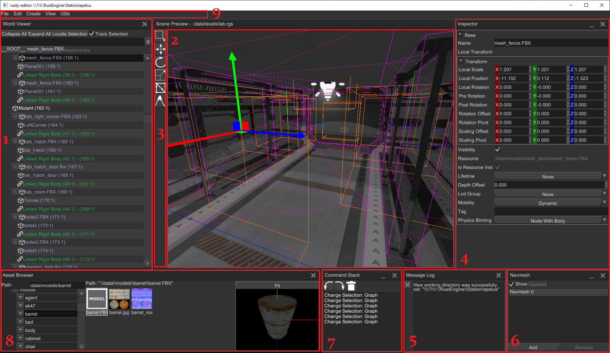
- World viewer - shows every object in the scene and their relationships. Allows inspecting and editing the contents of the scene in a hierarchical form.
- Scene preview - renders the scene with debug info and various editor-specific objects (gizmos, entity icons, etc.). Allows you to select, move, rotate, scale, delete, etc. various entities. The Toolbar on its left side shows available context-dependent tools.
- Inspector - allows you to modify various properties of the selected object.
- Message Log - displays important messages from the editor.
- Navmesh Panel - allows you to create, delete, and edit navigational meshes.
- Command Stack - displays your most recent actions and allows you to undo or redo their changes.
- Asset Browser - allows you to inspect the assets of your game and to instantiate resources in the scene, among other things.
- Audio Context - allows you to edit the settings of the scene's sound context (global volume, available audio buses, effects, etc.)
Creating or loading a Scene
FyroxEd works with scenes - a scene is a container for game entities, you can create and edit one scene at a time. You must have a
scene loaded to begin working with the editor. To create a scene go to File -> New Scene.
To load an existing scene, go to File -> Load and select the desired scene through the file browser. Recently opened
scenes can be loaded more quickly by going to File -> Recent Scenes and selecting the desired one.
Populating a Scene
A scene can contain various game entities. There are two equivalent ways of creating these:
- By going to
Createin the main menu and selecting the desired entity from the drop down. - By right-clicking on a game entity in the
World Viewerand selecting the desired entity from theAdd Childsub-menu.
Complex objects usually made in 3D modelling software (Blender, 3Ds Max, Maya, etc.) can be saved in various formats. Fyrox supports
FBX format, which is supported by pretty much any 3D modelling software. You can instantiate such objects by simply dragging the one you want and dropping it on the Scene Preview. While dragging it, you'll also see a preview of the object.
You can do the same with other scenes made in the editor (rgs files), for example, you can create a scene with a few objects in it
with some scripts and re-use them within other scenes. Such scenes are called prefabs.
Saving a Scene
To save your work, go to File -> Save. If you're saving a new scene, the editor will ask you to specify a file name and a
path to where the scene will be saved. Scenes loaded from a file will automatically be saved to the path they were loaded
from.
Undoing and redoing
FyroxEd remembers your actions and allows you to undo and redo the changes done by these. You can undo or redo changes by either
going to Edit -> Undo/Redo or through the usual shortcuts: Ctrl+Z - to undo, Ctrl+Y - to redo.
Controls
There are number of control keys that you'll be using most of the time, pretty much all of them work in the Scene Preview window:
Editor camera movement
Click and hold [Right Mouse Button] within the Scene Preview window to enable the movement controls:
[W][S][A][D]- Move camera forward/backward/left/right[Space][Q]/[E]- Raise/Lower Camera[Ctrl]- Speed up[Shift]- Slowdown
Others
[Left Mouse Button]- Select[Middle Mouse Button]- Pan camera in viewing plane[1]- Select interaction mode[2]- Move interaction mode[3]- Scale interaction mode[4]- Rotate interaction mode[5]- Navigational mesh editing mode[6]- Terrain editing interaction mode[Ctrl]+[Z]- Undo[Ctrl]+[Y]- Redo[Delete]- Delete current selection.
Play Mode
One of the key features of the editor is that it allows you to run your game from it in a separate process. Use the Play/Stop
button at the top of the Scene Preview window to enter or leave Play Mode. Keep in mind, that the editor UI will be locked while
you're in Play Mode.
Play Mode can be activated only for projects made with the fyrox-template (or for projects with a similar structure). The editor
calls cargo commands to build and run your game in a separate process. Running the game in a separate process ensures
that the editor won't crash if your game does, it also provides excellent isolation between the game and the editor, not
giving a chance to break the editor by running the game.
Additional Utilities
There are also number of powerful utilities that will make your life easier, they can be found under the Utils section of the
main menu:
- Animation Editor - allows you to create and edit animation blending state machines which are responsible for animation mixing.
- Curve Editor - allows you to create and edit curve resources to make complex laws for game parameters.
- Path Fixer - helps you fix incorrect resource references in your scenes.
Scene and Scene Graph
When you're playing a game, you often see various objects scattered around the screen, all of them are forming a scene. A scene is just a set of a variety objects, as in many other game engines, Fyrox allows you to create multiple scenes for multiple purposes, for example, one scene could be used for a menu, a bunch of others for game levels, and another one for an ending screen. Scenes can also be used to create a source of data for other scenes, such scenes are called prefabs. Scenes can also be rendered in a texture, which can be used in other scenes - this way you can create interactive screens that show other places.
While playing games, you may have noticed that some objects behaves as if they were linked to other objects, for example, a character in a role-playing game could carry a sword. While the character holds the sword, it is linked to his arm. Such relations between the objects can be presented by a graph structure.
Simply speaking, a graph is a set of objects with hierarchical relationships between each object. Each object in the graph is called a node. In the example with the sword and the character, the sword is a child node of the character, and the character is a parent node of the sword (here we ignore the fact that in reality, character models usually contain complex skeletons, with the sword actually being attached to one of the hands' bones, not to the character).
You can change the hierarchy of nodes in the editor using a simple drag'n'drop functionality in the World Viewer - drag a
node onto some other node, and it will attach itself to it.
Building Blocks or Scene Nodes
The engine offers various types of "building blocks" for your scene, each such block is called a scene node.
- Base - stores hierarchical information (a handle to the parent node and handles to children nodes), local and global transform, name, tag, lifetime, etc. It has self-describing name - it's used as a base node for every other scene node via composition.
- Mesh - represents a 3D model. This one of the most commonly used nodes in almost every game. Meshes can be easily created either programmatically, or be made in some 3D modelling software, such as Blender, and then loaded into the scene.
- Light - represents a light source. There are three types of light sources:
- Point - emits light in every direction. A real-world example would be a light bulb.
- Spot - emits light in a particular direction, with a cone-like shape. A real-world example would be a flashlight.
- Directional - emits light in a particular direction, but does not have position. The closest real-world example would be the Sun.
- Camera - allows you to see the world. You must have at least one camera in your scene to be able to see anything.
- Sprite - represents a quad that always faces towards a camera. It can have a texture and size and can also can be rotated around the "look" axis.
- Particle system - allows you to create visual effects using a huge set of small particles. It can be used to create smoke, sparks, blood splatters, etc.
- Terrain - allows you to create complex landscapes with minimal effort.
- Decal - paints on other nodes using a texture. It is used to simulate cracks in concrete walls, damaged parts of the road, blood splatters, bullet holes, etc.
- Rigid Body - a physical entity that is responsible for the dynamic of the rigid. There is a special
variant for 2D -
RigidBody2D. - Collider - a physical shape for a rigid body. It is responsible for contact manifold generation,
without it, any rigid body will not participate in simulation correctly, so every rigid body must have at least
one collider. There is a special variant for 2D -
Collider2D. - Joint - a physical entity that restricts motion between two rigid bodies. It has various amounts
of degrees of freedom depending on the type of the joint. There is a special variant for 2D -
Joint2D. - Rectangle - a simple rectangle mesh that can have a texture and a color. It is a very simple version of a Mesh node, yet it uses very optimized renderer, that allows you to render dozens of rectangles simultaneously. This node is intended for use in 2D games only.
- Sound - a sound source universal for 2D and 3D. Spatial blend factor allows you to select a proportion between 2D and 3D.
- Listener - an audio receiver that captures the sound at a particular point in your scene and sends it to an audio context for processing and outputting to an audio playback device.
- Animation Player - a container for multiple animations. It can play animations made in the animation editor and apply animation poses to respective scene nodes.
- Animation Blending State Machine - a state machine that mixes multiple animations from multiple states into one; each state is backed by one or more animation playing or blending nodes. See its respective chapter for more info.
Every node can be created either in the editor (through Create on the main menu, or through Add Child after right-clicking on
a game entity) or programmatically via their respective node builder (see API docs
for more info). These scene nodes allow you to build almost any kind of game. It is also possible to create your own
types of nodes, but that is an advanced topic, which is covered in a future chapter.
Local and Global Coordinates
A graph describes your scene in a very natural way, allowing you think in terms of relative and absolute coordinates when working with scene nodes.
A scene node has two kinds of transform - a local and global. The local transform defines where the node is located relative to its origin, its scale as a percentage, and its rotation around any arbitrary axis. The global transform is almost the same, but it also includes the whole chain of transforms of the parent nodes. Going back to the example of the character and the sword, if the character moves, and by extension the sword, the global transform of the sword will reflect the changes made to the character position, yet its local transform will not, since that represents the sword's position's relative to the character's, which didn't change.
This mechanism is very simple, yet powerful. The full grace of it unfolds when you're working with 3D models with skeletons. Each bone in a skeleton has its parent and a set of children, which allows you to rotate, translate, or scale them to animate your entire character.
Assets
Pretty much every game depends on various assets, such as 3D models, textures, sounds, etc. Fyrox has its own assets pipeline made to make your life easier.
Asset Types
The engine offers a set of assets that should cover all of your needs:
- Models - are a set of objects. They can be a simple 3D model (barrels, bushes, weapons, etc.) or complex scenes with lots of objects and possibly other model instances. Fyrox supports two main formats: FBX - which can be used to import 3D models, RGS - which are scenes made in Fyroxed. RGS models are special, as they can be used as hierarchical prefabs.
- Textures - are images used to add graphical details to objects. The engine supports multiple texture formats, such as PNG, JPG, BMP, etc. Compressed textures in DDS format are also supported.
- Sound buffers - are data buffers for sound sources. Fyrox supports WAV and OGG formats.
- Curves - are parametric curves. They're used to create complex functions for numeric parameters.
They can be made in the
Curve Editor(Utils -> Curve Editor) - It is also possible to create custom assets. See respective chapter for more info.
Asset Management
Asset management is performed from the Asset Browser window in the editor, you can select an asset, preview it, and edit
its import options. Here's a screenshot of the asset browser with a texture selected:
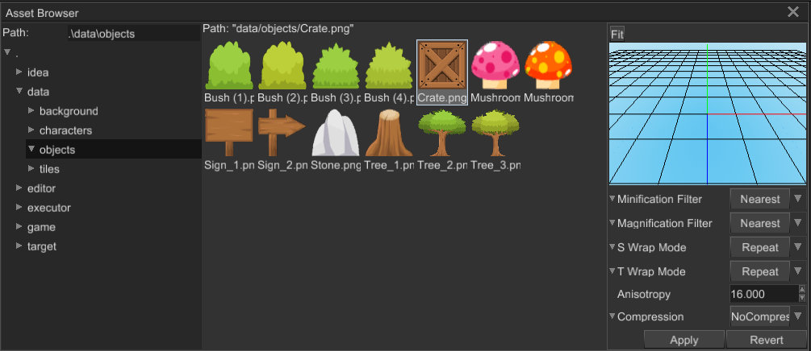
The most interesting part here is the import options section under the previewer. It allows you to set asset-specific import options and apply them. Every asset has its own set of import options. See their respective asset page from the section above to learn what each import option is for.
Asset Instantiation
Some asset types can be instantiated in scenes; for now, you can only create direct instances from models. This
is done by simply dragging the model you want to instantiate and dropping it on the Scene Preview. While dragging it, you'll also see a preview of the model.

The maximum amount of asset instances is not limited by the engine but it is by the memory and CPU resources of your PC. Note that the engine does try to reuse data across instances as much as possible.
You can also instantiate assets dynamically from your code. Here's an example of that for a Model:
#![allow(unused)] fn main() { extern crate fyrox; use fyrox::{ core::pool::Handle, asset::manager::ResourceManager, resource::model::{Model, ModelResourceExtension}, scene::{node::Node, Scene}, }; use std::path::Path; async fn instantiate_model( path: &Path, resource_manager: ResourceManager, scene: &mut Scene, ) -> Handle<Node> { // Load the model first. Alternatively, you can store the resource handle somewhere and use it for instantiation. let model = resource_manager.request::<Model, _>(path).await.unwrap(); model.instantiate(scene) } }
This is very useful with prefabs that you may want to instantiate in a scene at runtime.
Loading Assets
Usually, there is no need to manually handle the loading of assets since you have the editor to help with that - just create
a scene with all the required assets. However, there are times when you may need to instantiate some asset dynamically, for
example, a bot prefab. For this cases, you can use the ResourceManager and its respective methods, such as request_model,
request_texture, etc.
Data Management
The engine uses pools to store most objects (scene nodes in a graph, animations in an animation player, sound sources in an audio context, etc.). Since you'll use them quite often, reading and understanding this chapter is recommended.
Motivation
Rust ownership system and borrow checker, in particular, dictate the rules of data management. In game development, you
often have the need to reference objects from other objects. In languages like C, this is usually achieved by simply storing a raw
pointer and calling it a day. That works, yet it's remarkably unsafe - you risk either forgetting to destroy an object and leaking
memory or destroying an object still being referenced and then trying to access deallocated memory. Other languages, like C++, allow
you to store shared pointers to your data, which by keeping a reference count, ensures the previous doesn't happen at the cost of
a, most often, negligible overhead. Rust counts with smart pointers similar to this, though not without their limitations. There is the Rc/Arc - they function like shared pointers, except they don't allow mutating their content, only
reading it. If you want mutability, you use either a RefCell for a
single-threaded environment, or a Mutex for a multithreaded environment. That is where the problems begin. For
types such as Rc<RefCell> or Arc<Mutex>, Rust enforces its borrowing rules at runtime, which are unlimited readers but
a single writer. Any attempt to borrow mutably more than once at a time will lead to a runtime error.
Another problem with these shared references is that is very easy to accidentally create cyclical references
that prevent objects from ever being destroyed. While the previous could be lived with, the last problem is especially
severe in the case of games: the overhead of runtime checks. In the case of a Rc<RefCell>, it is a single
reference counter for given accesses to the data, but in the case of a Arc<Mutex>, it is a mutex lock.
The solution to these problems is far from ideal; it certainly has its own downfalls. Instead of scattering objects across memory and then having to manage the lifetime of each of them through reference counting, we can store all of the objects in a single and contiguous memory block and then use indices to access each object. Such a structure is called a pool.
Technical Details
A pool is an efficient method of data management. A pool is a vector with entries that can be either vacant or occupied. Each entry, regardless of its status, also stores a number called a generation number. This is used to understand whether an entry has changed over time or not. When an entry is reused, its generation number is increased, rendering all previously created handles leading to the entry invalid. This is a simple and efficient algorithm for tracking the lifetime of objects.
To access the data in the entries, the engine uses the previously mentioned handles. A handle is a pair of the index of an entry and a generation number. When you put an object in the pool, this gives you the handle that leads to the object, as well as the entry's current generation number. The number remains valid until you "free" the object, which makes the entry vacant again.
Advantages
- Since a pool is a contiguous memory block, it is far more CPU cache-friendly. This reduces the occurrences of CPU cache misses, which makes accesses to data blazingly fast.
- Almost every entity in Fyrox lives on its own pool, which makes it easy to create data structures like graphs, where nodes refer to other nodes. In this case, nodes simply need to store a handle to refer to other nodes.
- Simple lifetime management. There is no way to leak memory since cross-references can only be done via handles.
- Fast random access with a constant complexity.
- Handles are the same size as a pointer on a 64-bit architecture, just 8 bytes.
Disadvantages
- Pools can contain lots of gaps between currently used memory, which may lead to less efficient memory usage.
- Handles are sort of weak references, but worse. Since they do not own any data nor even point to their data, you need a reference to its pool instance in order to borrow the data a handle leads to.
- Handles introduce a level of indirection that can hurt performance in places with high loads that require random access, though this is not too significant as random access is already somewhat slow because of potential CPU cache misses.
Usage
You'll use Handle a lot while working with Fyrox. So where are the main usages of pools and
handles? The largest is in a scene graph. This stores all the nodes in a pool and gives handles
to each node. Each scene node stores a handle to their parent node and a set of handles to their children nodes. A scene graph
automatically ensures that such handles are valid. In scripts, you can also store handles
to scene nodes and assign them in the editor.
Animation is another place that stores handles to animated scene nodes. Animation Blending State Machine stores its own state graph using a pool; it also takes handles to animations from an animation player in a scene.
And the list could keep going for a long time. This is why you need to understand the basic concepts of data management, as to efficiently and fearlessly use Fyrox.
Borrowing
Once an object is placed in a pool, you have to use its respective handle to get a reference to it. This can
be done with either pool.borrow(handle) or pool.borrow_mute(handle), or by using the Index trait: pool[handle]. Note that
these methods panic when the handle given is invalid. If you want to be safe, use the try_borrow(handle) or
try_borrow_mut(handle) method.
extern crate fyrox; use fyrox::core::pool::Pool; fn main() { let mut pool = Pool::<u32>::new(); let handle = pool.spawn(1); let obj = pool.borrow_mut(handle); *obj = 11; let obj = pool.borrow(handle); assert_eq!(*obj, 11); }
Freeing
You can extract an object from a pool by calling pool.free(handle). This will give you the object back and make all current
handles to it invalid.
extern crate fyrox; use fyrox::core::pool::Pool; fn main() { let mut pool = Pool::<u32>::new(); let handle = pool.spawn(1); pool.free(handle); let obj = pool.try_borrow(handle); assert_eq!(obj, None); }
Take and Reserve
Sometimes you may want to temporarily extract an object from a pool, do something with it, and then put it back, yet not want to break every handle to the object in the process. There are three methods for this:
take_reserve+try_take_reserve- moves an object out of the pool but leaves the entry in an occupied state. This function returns a tuple with two values(Ticket<T>, T). The latter one being your object, and the former one being a wrapper over its index that allows you to return the object once you're done with it. This is called a ticket. Note that attempting to borrow a moved object will cause a panic!put_back- moves the object back using the given ticket. The ticket contains information about where in the pool to return the object to.forget_ticket- makes the pool entry vacant again. Useful in cases where you move an object out of the pool, and then decide you won't return it. If this is the case, you must call this method, otherwise, the corresponding entry will remain unusable.
Reservation example:
extern crate fyrox; use fyrox::core::pool::Pool; fn main() { let mut pool = Pool::<u32>::new(); let handle = pool.spawn(1); let (ticket, ref mut obj) = pool.take_reserve(handle); *obj = 123; // Attempting to fetch while there is an existing reservation, will fail. let attempt_obj = pool.try_borrow(handle); assert_eq!(attempt_obj, None); // Put the object back, allowing borrowing again. pool.put_back(ticket, *obj); let obj = pool.borrow(handle); assert_eq!(obj, &123); }
Forget example:
extern crate fyrox; use fyrox::core::pool::Pool; fn main() { let mut pool = Pool::<u32>::new(); let handle = pool.spawn(1); let (ticket, _obj) = pool.take_reserve(handle); pool.forget_ticket(ticket); let obj = pool.try_borrow(handle); assert_eq!(obj, None); }
Iterators
There are a few possible iterators, each one serving its own purpose:
iter/iter_mut- creates an iterator over occupied pool entries, returning references to each object.pair_iter/pair_iter_mut- creates an iterator over occupied pool entries, returning tuples of a handle and reference to each object.
extern crate fyrox; use fyrox::core::pool::Pool; fn main() { let mut pool = Pool::<u32>::new(); let _handle = pool.spawn(1); let mut iter = pool.iter_mut(); let next_obj = iter.next().unwrap(); assert_eq!(next_obj, &1); let next_obj = iter.next(); assert_eq!(next_obj, None); }
Direct Access
You have the ability to get an object from a pool using only an index. The methods for that are at and at_mut.
Validation
To check if a handle is valid, you can use the is_valid_handle method.
Type-erased Handles
The pool module also offers type-erased handles that can be of use in some situations. Still, try to avoid using these, as they may introduce hard-to-reproduce bugs. Type safety is always good :3
A type-erased handle is called an ErasedHandle and can be created either manually or from a strongly-typed handle.
Both handle types are interchangeable; you can use the From and Into traits to convert from one to the other.
Getting a Handle to an Object by its Reference
If you need to get a handle to an object from only having a reference to it, you can use the handle_of method.
Iterate Over and Filter Out Objects
The retain method allows you to filter your pool's content using a closure provided by you.
Scripting
A game based on Fyrox is a plugin to the engine and the editor. Plugin defines global application logic and can provide a set of scripts, that can be used to assign custom logic to scene nodes. Every script can be attached to only one plugin.
Fyrox uses scripts to create custom game logic, scripts can be written only in Rust which ensures that your game will be crash-free, fast and easy to refactor.
Next chapters will cover all parts and will help you to learn how to use plugins + scripts correctly.
Plugins
A game based on Fyrox is a plugin to the engine and the editor. Plugin defines global application logic and provides a set of scripts, that can be used to assign custom logic to scene nodes.
Plugin is an "entry point" of your game, it has a fixed set of methods that can be used for initialization, update, OS event handling, etc. Every plugin is statically linked to the engine (and the editor), there is no support for hot-reloading due to lack of stable ABI in Rust. However, it is possible to not recompile the editor everytime - if you don't change data layout in your structures the editor will be able to compile your game and run it with the currently loaded scene, thus reducing amount of iterations. You can freely modify application logic and this won't affect the running editor.
The main purpose of the plugins is to hold and operate on some global application data, that can be used in scripts and provide a set of scripts to the engine. Plugins also have much wider access to engine internals, than scripts. For example, it is possible to change scenes, add render passes, change resolution, etc. which is not possible from scripts.
Structure
Plugin structure is defined by Plugin trait. Typical
implementation can be generated by fyrox-template tool, and it looks something like this:
#![allow(unused)] fn main() { extern crate fyrox; use fyrox::{ core::{ futures::executor::block_on, pool::Handle, }, event::Event, event_loop::ControlFlow, gui::message::UiMessage, plugin::{Plugin, PluginConstructor, PluginContext, PluginRegistrationContext}, scene::{Scene, SceneLoader}, }; pub struct GameConstructor; impl PluginConstructor for GameConstructor { fn register(&self, _context: PluginRegistrationContext) { // Register your scripts here. } fn create_instance( &self, override_scene: Handle<Scene>, context: PluginContext, ) -> Box<dyn Plugin> { Box::new(Game::new(override_scene, context)) } } pub struct Game { scene: Handle<Scene>, } impl Game { pub fn new(override_scene: Handle<Scene>, context: PluginContext) -> Self { let scene = if override_scene.is_some() { override_scene } else { // Load a scene from file if there is no override scene specified. let scene = block_on( block_on(SceneLoader::from_file( "data/scene.rgs", context.serialization_context.clone(), context.resource_manager.clone() )) .unwrap() .finish(), ); context.scenes.add(scene) }; Self { scene } } } impl Plugin for Game { fn on_deinit(&mut self, _context: PluginContext) { // Do a cleanup here. } fn update(&mut self, _context: &mut PluginContext, _control_flow: &mut ControlFlow) { // Add your global update code here. } fn on_os_event( &mut self, _event: &Event<()>, _context: PluginContext, _control_flow: &mut ControlFlow, ) { // Do something on OS event here. } fn on_ui_message( &mut self, _context: &mut PluginContext, _message: &UiMessage, _control_flow: &mut ControlFlow, ) { // Handle UI events here. } } }
There are two major parts - GameConstructor and Game itself. GameConstructor implements PluginConstructor and it
is responsible for script registration (fn register) and creating the actual game instance (fn create_instance).
register- called once on start allowing you to register your scripts. Important: You must register all your scripts here, otherwise the engine (and the editor) will know nothing about them.create_instance- called once, allowing you to create actual game instance. It is guaranteed to be called once, but where it is called is implementation-defined. For example, the editor will not call this method, it does not create any game instance. The method hasoverride_sceneparameter, in short it is a handle to a scene that must be used by your game instead of any other scenes. It is described in Editor and Plugins section down below.
The game structure (struct Game) implements a Plugin trait which can execute actual game logic in one of its methods:
on_deinit- it is called when the game is about to shut down. Can be used for any clean up, for example logging that the game has closed.update- it is called each frame at a stable rate (usually 60 Hz) after the plugin is created and fully initialized. It is the main place where you should put object-independent game logic, any other logic should be added via scripts.on_os_event- it is called when the main application window receives an event from the operating system, it can be any event such as keyboard, mouse, game pad events or any other events. Please note that as forupdatemethod, you should put here only object-independent logic. Scripts can catch window events too.on_ui_message- it is called when there is a message from the user interface, it should be used to react to user actions (like pressed buttons, etc.)
Control Flow
Some plugin methods provide access to ControlFlow variable, its main usage in the plugin is to give you ability to
stop the game by some conditions. All you need to do is to set it to ControlFlow::Exit and the game will be closed.
It also has other variants, but they don't have any particular usage in the plugins.
#![allow(unused)] fn main() { fn update(&mut self, _context: &mut PluginContext, control_flow: &mut ControlFlow) { if self.some_exit_condition { control_flow = ControlFlow::Exit; } } }
Plugin Context
Vast majority of methods accept PluginContext - it provides almost full access to engine entities, it has access
to the renderer, scenes container, resource manager, user interface, main application window. Typical content of the
context is something like this:
#![allow(unused)] fn main() { extern crate fyrox; use fyrox::{ engine::{SerializationContext}, asset::manager::ResourceManager, gui::UserInterface, renderer::Renderer, scene::SceneContainer, window::Window, }; use std::sync::Arc; pub struct PluginContext<'a, 'b> { pub scenes: &'a mut SceneContainer, pub resource_manager: &'a ResourceManager, pub user_interface: &'a mut UserInterface, pub renderer: &'a mut Renderer, pub dt: f32, pub lag: &'b mut f32, pub serialization_context: &'a Arc<SerializationContext>, pub window: &'a Window, } }
scenes- a scene container, could be used to manage game scenes - add, remove, borrow. An example of scene loading is given in the previous code snippet inGame::new()method.resource_manager- is used to load external resources (scenes, models, textures, animations, sound buffers, etc.) from different sources (disk, network storage on WebAssembly, etc.)user_interface- use it to create user interface for your game, the interface is scene-independent and will remain the same even if there are multiple scenes created.renderer- can be used to add custom rendering techniques, change quality settings, etc.dt- a time passed since the last frame. The actual value is implementation-defined, but on current implementation it is equal to 1/60 of a second and does not change event if the frame rate is changing (the engine stabilizes update rate for the logic).lag- a reference to the time accumulator, that holds remaining amount of time that should be used to update a plugin. A caller splitslaginto multiple sub-steps usingdtand thus stabilizes update rate. The main use of this variable, is to be able to resetlagwhen you're doing some heavy calculations in a game loop (i.e. loading a new level) so the engine won't try to "catch up" with all the time that was spent in heavy calculation.serialization_context- it can be used to register scripts and custom scene nodes constructors at runtime.window- main application window, you can use it to change title, screen resolution, etc.
Editor and Plugins
When you're running your game from the editor, it starts the game as a separate process and if there's a scene opened
in the editor, it tells the game instance to load it on startup. Let's look closely at Game::new method:
#![allow(unused)] fn main() { extern crate fyrox; use fyrox::{ core::{futures::executor::block_on, pool::Handle}, plugin::PluginContext, scene::{Scene, SceneLoader}, }; struct Foo { scene: Handle<Scene>, } impl Foo { pub fn new(override_scene: Handle<Scene>, context: PluginContext) -> Self { let scene = if override_scene.is_some() { override_scene } else { // Load a scene from file if there is no override scene specified. let scene = block_on( block_on(SceneLoader::from_file( "data/scene.rgs", context.serialization_context.clone(), context.resource_manager.clone(), )) .unwrap() .finish(), ); context.scenes.add(scene) }; Self { scene } } } }
The override_scene parameter is a handle to a scene instance that is currently opened in the editor, your game
plugin must handle this parameter and use provided scene, otherwise the run from the editor will not have the edited
scene. If the parameter is undefined (equals to Handle::NONE), then there is no scene loaded in the editor or the
game was run outside the editor.
Executor
Executor is a simple wrapper that drives your game plugins, it is intended to be used for production builds of your game.
The editor runs the executor in separate process when you're entering the play mode. Basically, there is no significant
difference between running the game from the editor, or running it as a separate application. The main difference is that
the editor passes override_scene parameter for the executor when entering the play mode.
Usage
Executor is meant to be a part of your project's workspace, its typical look could something like this:
extern crate fyrox; use fyrox::{ core::{pool::Handle, uuid::Uuid}, engine::executor::Executor, plugin::{Plugin, PluginConstructor, PluginContext}, scene::{Scene}, }; struct GameConstructor; impl PluginConstructor for GameConstructor { fn create_instance( &self, _override_scene: Handle<Scene>, _context: PluginContext, ) -> Box<dyn Plugin> { todo!() } } fn main() { let mut executor = Executor::new(); // Register your game constructor here. executor.add_plugin_constructor(GameConstructor); executor.run() }
Executor has full access to the engine, and through it to the main application window. You can freely change desired
parts, Executor implements Deref<Target = Engine> + DerefMut traits, so you can use its instance as an "alias"
to engine instance.
To add a plugin to the executor, just use add_plugin_constructor method, it accepts any entity that implements
PluginConstructor traits.
Typical Use Cases
This section covers typical use cases for the Executor.
Setting Window Title
You can set window title when creating executor instance:
#![allow(unused)] fn main() { extern crate fyrox; use fyrox::engine::executor::Executor; use fyrox::window::WindowAttributes; use fyrox::engine::GraphicsContextParams; let executor = Executor::from_params( Default::default(), GraphicsContextParams { window_attributes: WindowAttributes { title: "My Game".to_string(), ..Default::default() }, vsync: true, }, ); }
Scripts
Script - is a container for game data and logic that can be assigned to a scene node. Fyrox uses Rust for scripting, so scripts are as fast as native code.
Script Structure
Typical script structure is something like this:
#![allow(unused)] fn main() { extern crate fyrox; use fyrox::{ core::{uuid::{Uuid, uuid}, visitor::prelude::*, reflect::prelude::*, TypeUuidProvider}, event::Event, impl_component_provider, scene::{graph::map::NodeHandleMap}, script::{ScriptContext, ScriptDeinitContext, ScriptTrait}, }; #[derive(Visit, Reflect, Default, Debug, Clone)] struct MyScript { // Add fields here. } impl_component_provider!(MyScript); impl TypeUuidProvider for MyScript { fn type_uuid() -> Uuid { uuid!("bf0f9804-56cb-4a2e-beba-93d75371a568") } } impl ScriptTrait for MyScript { fn on_init(&mut self, context: &mut ScriptContext) { // Put initialization logic here. } fn on_start(&mut self, context: &mut ScriptContext) { // Put start logic - it is called when every other script is already initialized. } fn on_deinit(&mut self, context: &mut ScriptDeinitContext) { // Put de-initialization logic here. } fn on_os_event(&mut self, event: &Event<()>, context: &mut ScriptContext) { // Respond to OS events here. } fn on_update(&mut self, context: &mut ScriptContext) { // Put object logic here. } fn id(&self) -> Uuid { Self::type_uuid() } } }
Each script must implement following traits:
Visitimplements serialization/deserialization functionality, it is used by the editor to save your object to a scene file.Reflectimplements compile-time reflection that provides a way to iterate over script fields, set their values, find fields by their paths, etc.Debug- provides debugging functionality, it is mostly for the editor to let it turn the structure and its fields into string.Clone- makes your structure clone-able, since we can clone objects, we also want the script instance to be cloned.Defaultimplementation is very important - the scripting system uses it to create your scripts in the default state. This is necessary to set some data to it and so on. If it's a special case, you can always implement your ownDefault's implementation if it's necessary for your script.TypeUuidProvideris used to attach some unique id for your type, every script must have a unique ID, otherwise, the engine will not be able to save and load your scripts. To generate a new UUID, use Online UUID Generator or any other tool that can generate UUIDs.
Script Template Generator
You can use fyrox-template tool to generate all required boilerplate code for a new script, it makes adding new scripts
much less tedious. To generate a new script use script command:
fyrox-template script --name MyScript
It will create a new file in game/src directory with my_script.rs name and fill with required code. Do not forget
to add the module with the new script to lib.rs like this:
#![allow(unused)] fn main() { // Use your script name instead of `my_script` here. pub mod my_script; }
Comments in each generated method should help you to figure out which code should be placed where and what is the purpose of every method.
⚠️ Keep in mind that every new script must be registered in
PluginConstructor::register, otherwise you won't be able to assign the script in the editor to a node. See the next section for more info.
Script Registration
Every script must be registered before use, otherwise the engine won't "see" your script and won't let you assign it
to an object. PluginConstructor trait has register method exactly for script registration. To register a script
you need to register it in the list of script constructors like so:
#![allow(unused)] fn main() { extern crate fyrox; use fyrox::{ scene::Scene, plugin::{Plugin, PluginConstructor, PluginContext, PluginRegistrationContext}, core::{ visitor::prelude::*, reflect::prelude::*, pool::Handle, uuid::Uuid, TypeUuidProvider }, impl_component_provider, script::ScriptTrait, }; #[derive(Reflect, Visit, Default, Copy, Clone, Debug)] struct MyScript; impl TypeUuidProvider for MyScript { fn type_uuid() -> Uuid { todo!() } } impl_component_provider!(MyScript); impl ScriptTrait for MyScript { fn id(&self) -> Uuid { todo!() } } struct Constructor; impl PluginConstructor for Constructor { fn register(&self, context: PluginRegistrationContext) { context.serialization_context.script_constructors.add::<MyScript>("My Script"); } fn create_instance(&self, _override_scene: Handle<Scene>, _context: PluginContext) -> Box<dyn Plugin> { todo!() } } }
Script Attachment
To assign a script and see it in action, run the editor, select an object and find Script property in the Inspector.
Select your script from the drop-down list. To see the script in action, click "Play/Stop" button. The editor will run
your game in separate process with the scene active in the editor.
The script can be attached to a scene node from code:
#![allow(unused)] fn main() { extern crate fyrox; use fyrox::{ core::{reflect::prelude::*, uuid::Uuid, visitor::prelude::*, TypeUuidProvider}, impl_component_provider, scene::node::{Node}, script::{Script, ScriptTrait}, }; #[derive(Reflect, Visit, Default, Copy, Clone, Debug)] struct MyScript; impl TypeUuidProvider for MyScript { fn type_uuid() -> Uuid { todo!() } } impl_component_provider!(MyScript); impl ScriptTrait for MyScript { fn id(&self) -> Uuid { todo!() } } fn set_script<T: ScriptTrait>(node: &mut Node, script: T) { node.set_script(Some(Script::new(script))) } }
Initialization as well as update of newly assigned script will happen on next update tick of the engine.
Script Context
Script context provides access to the environment that can be used to modify engine and game state from scripts. Typical content of the context is something like this:
#![allow(unused)] fn main() { extern crate fyrox; use fyrox::{ core::pool::Handle, engine::{ScriptMessageDispatcher}, plugin::Plugin, asset::manager::ResourceManager, scene::{node::Node, Scene}, script::ScriptMessageSender }; pub struct ScriptContext<'a, 'b, 'c> { pub dt: f32, pub elapsed_time: f32, pub plugins: &'a mut [Box<dyn Plugin>], pub handle: Handle<Node>, pub scene: &'b mut Scene, pub resource_manager: &'a ResourceManager, pub message_sender: &'c ScriptMessageSender, pub message_dispatcher: &'c mut ScriptMessageDispatcher, } }
dt- amount of time passed since last frame. The value of the variable is implementation-defined, usually it is something like 1/60 (0.016) of a second.elapsed_time- amount of time that passed since start of your game (in seconds).plugins- a mutable reference to all registered plugins, it allows you to access some "global" game data that does not belong to any object. For example, a plugin could store key mapping used for player controls, you can access it usingpluginsfield and find desired plugin. In case of a single plugin, you just need to cast the reference to a particular type usingcontext.plugins[0].cast::<MyPlugin>().unwrap()call.handle- a handle of the node to which the script is assigned to (parent node). You can borrow the node usingcontext.scene.graph[handle]call. Typecasting can be used to obtain a reference to a particular node type.scene- a reference to parent scene of the script, it provides you full access to scene content, allowing you to add/modify/remove scene nodes.resource_manager- a reference to resource manager, you can use it to load and instantiate assets.message_sender- a message sender. Every message sent via this sender will be then passed to everyScriptTrait::on_messagemethod of every script.message_dispatcher- a message dispatcher. If you need to receive messages of a particular type, you must subscribe to a type explicitly.
Execution order
Scripts have strictly defined execution order for their methods (the order if execution is linear and do not depend on actual tree structure of the graph where the script is located):
on_init- called first for every script instanceon_start- called after everyon_initis calledon_update- called zero or more times per one render frame. The engine stabilizes update rate of the logic, so if your game runs at 15 FPS, the logic will still run at 60 FPS thus theon_updatewill be called 4 times per frame. The method can also be not called at all, if the FPS is very high. For example, if your game runs at 240 FPS, thenon_updatewill be called once per 4 frames.on_message- called once per incoming message.on_os_event- called once per incoming OS event.on_deinit- called at the end of the update cycle once when the script (or parent node) is about to be deleted.
Message passing
Script system of Fyrox supports message passing for scripts. Message passing is a mechanism that allows you to send some data (message) to a node, hierarchy of nodes or the entire graph. Each script can subscribe for a specific message type. It is an efficient way for decoupling scripts from each other. For instance, you may want to detect and respond to some event in your game. In this case when the event has happened, you send a message of a type and every "subscriber" will react to it. This way subscribers will not know anything about sender(s); they'll only use message data to do some actions.
A simple example where the message passing can be useful is when you need to react to some event in your game. Imagine,
that you have weapons in your game, and they can have a laser sight that flashes with a different color when some target
was hit. In very naive approach you can handle all laser sights where you handle all intersection for projectiles, but
this adds a very tight coupling between laser sight and projectiles. This is totally unnecessary coupling can be made
loose by using message passing. Instead of handling laser sights directly, all you need to do is to broadcast an
ActorDamaged { actor: Handle<Node>, attacker: Handle<Node> } message. Laser sight in its turn can subscribe for such
message and handle all incoming messages and compare attacker with owner of the laser sight and if the hit was made
by attacker flash with some different color. In code this would like so:
#![allow(unused)] fn main() { extern crate fyrox; use fyrox::{ core::{pool::Handle, reflect::prelude::*, uuid::Uuid, visitor::prelude::*}, impl_component_provider, scene::node::Node, script::{ScriptContext, ScriptMessageContext, ScriptMessagePayload, ScriptTrait}, core::log::Log, }; enum Message { Damage { actor: Handle<Node>, attacker: Handle<Node>, }, } #[derive(Default, Clone, Reflect, Visit, Debug)] struct Projectile; impl_component_provider!(Projectile); impl ScriptTrait for Projectile { fn on_update(&mut self, ctx: &mut ScriptContext) { // Broadcast the message globally. ctx.message_sender.send_global(Message::Damage { actor: Default::default(), attacker: ctx.handle, }); } fn id(&self) -> Uuid { todo!() } } #[derive(Default, Clone, Reflect, Visit, Debug)] struct LaserSight; impl_component_provider!(LaserSight); impl ScriptTrait for LaserSight { fn on_start(&mut self, ctx: &mut ScriptContext) { // Subscript to messages. ctx.message_dispatcher.subscribe_to::<Message>(ctx.handle); } fn on_message( &mut self, message: &mut dyn ScriptMessagePayload, _ctx: &mut ScriptMessageContext, ) { // React to message. if let Some(Message::Damage { actor, attacker }) = message.downcast_ref::<Message>() { Log::info(format!("{actor} damaged {attacker}",)) } } fn id(&self) -> Uuid { todo!() } } }
There are few key parts:
- You should explicitly subscribe script instance to a message type, otherwise messages of the type won't be delivered
to your script. This is done using the message dispatcher:
ctx.message_dispatcher.subscribe_to::<Message>(ctx.handle);. This should be done inon_startmethod, however it is possible to subscribe/unsubscribe at runime. - You can react to messages only in special method
on_message- here you just need to check for message type using pattern matching and do something useful.
Try to use message passing in all cases, loose coupling significantly improves code quality and readability, however in simple projects it can be ignored completely.
Scene
Scene is a container for game entities. Currently, scenes in the engine manage following entities:
- Graph
- Animations
- Physics (rigid bodies, colliders, joints)
- Sound
Scene allows you to create isolated "world" which won't interact with other scenes, it is very useful for many more or less complex games.
How to create
A scene could be created either in FyroxEd or programmatically. You can also combine both approaches, where you build all "static" content in the editor and adding rest of the entities (bots, interactive objects, etc.) manually by instantiating respective prefabs at runtime.
Using FyroxEd
There is a separate chapter in the book that should help you to create a scene. After a scene is created, you can load it as any other 3D model (or prefab) using the resource manager:
#![allow(unused)] fn main() { extern crate fyrox; use fyrox::{ core::{futures::executor::block_on, pool::Handle}, asset::manager::{ResourceManager}, resource::model::{Model, ModelResourceExtension}, scene::{node::Node, Scene}, }; use std::path::Path; fn load_scene(resource_manager: ResourceManager) -> Scene { // Create parent scene. let mut scene = Scene::new(); // Request child scene and block until it loading. let scene_resource = block_on( resource_manager .request::<Model, _>("path/to/your/scene.rgs"), ) .unwrap(); // Create an instance of the scene in the parent scene. let child_scene = scene_resource.instantiate(&mut scene); scene } }
Please note that here we're creating an empty scene and only then instantiating another scene into it. Why is this needed? Child scene is considered as prefab, and it is "instantiated" in the parent scene. Considering it as prefab allows you modifying your scene separately and serialization/deserialization will be able to correctly apply any changes in the scene.
Create scene manually
A scene could also be created manually:
#![allow(unused)] fn main() { extern crate fyrox; use fyrox::{core::pool::Handle, engine::Engine, scene::Scene}; fn create_scene(engine: &mut Engine) -> Handle<Scene> { let mut scene = Scene::new(); // Use node builders, create sounds, add physics, etc. here to fill the scene. engine.scenes.add(scene) } }
See respective node builders docs to populate the scene.
Where all my scenes located?
All scenes "lives" in the engine, the engine has ownership over your scene after you've added it in the engine. You can borrow a scene at any time using its handle and do some changes.
Building scene asynchronously
You can create your scene in separate thread and then pass it to main thread to insert it in the engine. Why this is needed? Remember the last time you've played a relatively large game, you've probably noticed that it have loading screens and loading screen has some fancy interactive stuff with progress bar. Loading screen is fully responsive while the game doing hard job loading the world for you. Got it already? Asynchronous scene loading is needed to create/load large scenes with tons of resources without blocking main thread, thus leaving the game fully responsive. There is comprehensive example of asynchronous scene loading, it can be found here
Managing multiple scenes
Usually you should have only one scene active (unless you're making something very special), you should use
.enabled flag of a scene to turn it off or on. Deactivated scenes won't be rendered, the physics won't be
updated, the sound will stop, and so on. In other words the scene will be frozen. This is useful for situations
when you often need to switch between scenes, leaving other scene in frozen state. One of the examples where this
can be useful is menus. In most games when you're entering the menu, game world is paused.
Ambient lighting
Every scene has default ambient lighting, it is defined by a single RGB color. By default, every scene has some pre-defined ambient lighting, it is bright enough, so you can see your objects. In some cases you may need to adjust it or even make it black (for horror games for instance), this can be achieved by a single line of code:
#![allow(unused)] fn main() { extern crate fyrox; use fyrox::scene::Scene; use fyrox::core::color::Color; let mut scene = Scene::default(); scene.ambient_lighting_color = Color::opaque(30, 30, 30); }
Please keep in mind that ambient lighting does not mean global illumination, it is a different lighting technique which is not available in the engine yet.
Graph
Graph is a set of objects with hierarchical relationships between each object. It is one of the most important entities in the engine. Graph takes care of your scene objects and does all the hard work for you.
How to create
You don't need to create a graph manually, every scene has its own instance of the graph. It can be accessed pretty
easily: scene_ref.graph
Adding nodes
There are two ways of adding nodes to the graph, either using node builders or manually by calling graph.add_node.
Using node builders
Every node in the engine has its respective builder which can be used to create an instance of the node. Using builders is a preferable way to create scene nodes. There are following node builders:
BaseBuilder- creates an instance of base node. See Base node for more info.PivotBuilder- creates an instance of pivot node. See Base node for more info.CameraBuilder- creates an instance of camera node. See Camera node for more info.MeshBuilder- creates an instance of mesh node. See Mesh node for more info.LightBuilder- creates an instance of light node. See Light node for more info.SpriteBuilder- creates an instance of sprite node. See Sprite node for more info.ParticleSystemBuilder- creates an instance of particle system node. See Particle system node for more info.TerrainBuilder- creates an instance of terrain node. See Terrain node for more info.DecalBuilder- creates an instance of decal node. See Decal node for more info.RigidBody- creates an instance of rigid body node. See Rigid body for more info.Collider- creates an instance of collider node. See Collider for more info.Joint- creates an instance of joint node. See Joint for more info.Rectangle- creates an instance of 2D rectangle node. See Rectangle for more info.
Every builder, other than BaseBuilder, accepts BaseBuilder as a parameter in .new(..) method. Why so?
Because every node (other than Base) is "derived" from Base via composition and the derived
builder must know how to build Base node. While it may sound confusing, it is actually very useful and clear.
Consider this example:
#![allow(unused)] fn main() { extern crate fyrox; use fyrox::{ core::{algebra::Vector3, pool::Handle}, scene::{ base::BaseBuilder, camera::CameraBuilder, node::Node, transform::TransformBuilder, Scene, }, }; fn create_camera(scene: &mut Scene) -> Handle<Node> { CameraBuilder::new( // Here we passing a base builder. Note that, since we can build Base node separately // we can pass any custom values to it while building. BaseBuilder::new().with_local_transform( TransformBuilder::new() .with_local_position(Vector3::new(2.0, 0.0, 3.0)) .build(), ), ) // Here we just setting desired Camera properties. .with_fov(60.0f32.to_radians()) .build(&mut scene.graph) } }
As you can see, we're creating an instance of BaseBuilder and fill it with desired properties as well as filling the CameraBuilder's instance properties. This is a very flexible mechanism, allowing you to build complex hierarchies in a declarative manner:
#![allow(unused)] fn main() { extern crate fyrox; use fyrox::{ core::{algebra::Vector3, pool::Handle}, scene::{ base::BaseBuilder, camera::CameraBuilder, mesh::MeshBuilder, node::Node, sprite::SpriteBuilder, transform::TransformBuilder, Scene, }, }; fn create_node(scene: &mut Scene) -> Handle<Node> { CameraBuilder::new( BaseBuilder::new() // Add some children nodes. .with_children(&[ // A staff... MeshBuilder::new( BaseBuilder::new() .with_name("MyFancyStaff") .with_local_transform( TransformBuilder::new() .with_local_position(Vector3::new(0.5, 0.5, 1.0)) .build(), ), ) .build(&mut scene.graph), // and a spell. SpriteBuilder::new( BaseBuilder::new() .with_name("MyFancyFireball") .with_local_transform( TransformBuilder::new() .with_local_position(Vector3::new(-0.5, 0.5, 1.0)) .build(), ), ) .build(&mut scene.graph), ]) .with_local_transform( TransformBuilder::new() .with_local_position(Vector3::new(2.0, 0.0, 3.0)) .build(), ), ) .with_fov(60.0f32.to_radians()) .build(&mut scene.graph) } }
This code snippet creates a camera for first-person role-playing game's player, it will have a staff in "right-hand" and a spell in the left hand. Of course all of this is very simplified, but should give you the main idea. Note that staff and fireball will be children nodes of camera, and when setting their transform, we're actually setting local transform which means that the transform will be relative to camera's. The staff and the spell will move together with the camera.
Adding a node manually
For some rare cases you may also want to delay adding a node to the graph, specifically for that purpose, every node
builder has .build_node method which creates an instance of Node but does not add it to the graph.
#![allow(unused)] fn main() { extern crate fyrox; use fyrox::{ core::pool::Handle, scene::{base::BaseBuilder, camera::CameraBuilder, node::Node, Scene}, }; fn create_node(scene: &mut Scene) -> Handle<Node> { let node: Node = CameraBuilder::new(BaseBuilder::new()).build_node(); // We must explicitly add the node to the graph. scene.graph.add_node(node) } }
How to modify the hierarchy
For many cases you can't use builders to create complex hierarchy, the simplest example of such situation when
you're creating an instance of some 3D model. If you want the instance to be a child object of some other object,
you should attach it explicitly by using graph.link_nodes(..):
#![allow(unused)] fn main() { extern crate fyrox; use fyrox::{ core::{futures::executor::block_on, pool::Handle}, asset::manager::ResourceManager, resource::model::{Model, ModelResourceExtension}, scene::{base::BaseBuilder, camera::CameraBuilder, node::Node, Scene}, }; fn link_weapon_to_camera( scene: &mut Scene, camera: Handle<Node>, resource_manager: ResourceManager, ) { let weapon = block_on( resource_manager .request::<Model, _>("path/to/weapon.fbx"), ) .unwrap() .instantiate(scene); // Link weapon to the camera. scene.graph.link_nodes(weapon, camera); } }
Here we've loaded a weapon 3D model, instantiated it on scene and attached to existing camera.
How to remove nodes
A node could be removed by simply calling graph.remove_node(handle), this method removes the node from the
graph with all of its children nodes. Sometimes this is unwanted behaviour, and you want to preserve children
nodes while deleting parent node. To do that, you need to explicitly detach children nodes of the node you're about
to delete:
#![allow(unused)] fn main() { extern crate fyrox; use fyrox::{ core::pool::Handle, scene::{node::Node, Scene}, }; fn remove_preserve_children(scene: &mut Scene, node_to_remove: Handle<Node>) { for child in scene.graph[node_to_remove].children().to_vec() { scene.graph.unlink_node(child); } scene.graph.remove_node(node_to_remove); } }
After calling this function, every child node of node_to_remove will be detached from it and the node_to_remove
will be deleted. remove_node has some limitations: it cannot be used to extract "sub-graph" from the graph, it
just drops nodes immediately.
Transformation
Transformation (transform for short) - is a special entity that changes coordinate system from one to another. It is used primarily in scene nodes to store their position/rotation/scale/pivots/etc. Fyrox has quite complex transformations, that supports:
- Position (
T) - Rotation (
R) - Scale (
S) - Pre-rotation (
Rpre) - Post-rotation (
Rpost) - Rotation Pivot (
Rp) - Rotation Offset (
Roff) - Scaling Offset (
Soff) - Scaling Pivot (
Sp)
Final transformation matrix will be Transform = T * Roff * Rp * Rpre * R * Rpost * Rp⁻¹ * Soff * Sp * S * Sp⁻¹. In 99.9%
cases first three are enough for pretty much every task. Other six components used for specific stuff (mainly for nodes
that imported from FBX file format).
Prefabs
A prefab is a separate scene that can be instantiated in some other scene, while preserving links between properties of its instances and of its parent prefab. Prefabs allow you to create a part of a scene and have multiple instances of it in other scenes.
Let's quickly check what that means on practice. The engine has a prefab system which allows you to build hierarchical scenes which can include any number of other scenes as child scenes. Child scenes can have their own child scenes and so on. This is very efficient decoupling mechanism that allows you to put pieces of the scene in separate scenes (prefabs) and modify them independently. The changes in child scenes will be automatically reflected to all parent scenes. Here is the very simple example of why this is important: imagine you need to populate a town with 3D models of cars. Each kind of car has its own 3D model and for example, a collision body that won't allow the player to walk through cars. How would you do this? The simplest (and dumbest) solution is to copy dozens of car models in the scene, and you're done. Imagine that now you need to change something in your car, for example, add a trunk that can be opened. What will you do? Of course, you should "iterate" over each car model and do the required changes, you simply don't have any other option. This will eat huge amount of time and in general it is very non-productive.
This is where prefabs will save you hours of work. All you need to do is to create a car prefab and instantiate it multiple times in your scene. When you'll need to change something in the car, you simply go to the prefab and change it. After that every prefab instance will have your changes!
Prefabs can be used to create self-contained entities in your game, examples of this includes: visual effects, any scripted game entities (bots, turrets, player, doors, etc.). Such prefabs can be either directly instantiated in a scene in the editor, or instantiated at runtime when needed.
How to create and use a prefab
All you need to do is to make a scene in the editor with all required objects and save it! After that, you can use the scene in other scenes and just do its instantiation, as in usual 3D models. You can either instantiate it from the editor by drag'n'drop a prefab to scene previewer, or do standard model resource instantiation
Property inheritance
As already mentioned in the intro section, instances inherit properties from their parent prefabs. For example, you can change position of an object in prefab and every instance will reflect that change - the object's instances will also move. This works until there's no manual change to a property in instance, if you do so, your change is considered with higher priority. See this chapter for more info.
Hierarchical Prefabs
Prefabs can have other prefab instances inside it. This means that you can, for example, create a room populated with instances of other prefabs (bookshelves, chairs, tables, etc.) and then use the room prefab to build a bigger scene. The changes in the base prefabs will be reflected in their instances, regardless of how deep the hierarchy is.
Property Inheritance
Property inheritance is used to propagate changes of unmodified properties from a prefab to its instances. For example, you can change scale of a node in a prefab and its instances will have the same scale too, unless the scale is set explicitly in an instance. Such feature allows you to tweak instances, add some unique details to them, but take general properties from parent prefabs.
Property inheritance works for prefab hierarchies of any depth, this means that you can create something like this: a room prefab can have multiple instances of various furniture prefabs in it, while the furniture prefabs can also be constructed from other prefabs and so on. In this case if you modify a property in one of the prefabs in the chain, all instance will immediately sync their unmodified properties.
How To Create Inheritable Properties
It is possible to use property inheritance for script variables. To make a property of your script inheritable, all you
need is to wrap its value using InheritableVariable wrapper.
#![allow(unused)] fn main() { extern crate fyrox; use fyrox::core::variable::InheritableVariable; use fyrox::core::visitor::prelude::*; use fyrox::core::reflect::prelude::*; #[derive(Reflect, Visit, Default, Clone, Debug)] struct MyScript { foo: InheritableVariable<f32> } }
The engine will automatically resolve the correct value for the property when a scene with the script is loaded. If your property was modified, then its value will remain the same, it won't be overwritten by parent's value. Keep in mind, that the type of the inheritable variable must be cloneable and support reflection.
InheritableVariable implements the Deref<Target = T> + DerefMut traits, this means that any access via the DerefMut trait
will mark the property as modified. This could be undesired in some cases so InheritableVariable supports special xxx_silent
methods that don't touch the internal modifiers and allows you to substitute the value with some other "silently" -
without marking the variable as modified.
Which Fields Should Be Inheritable?
Inheritable variables intended to be "atomic" - it means that the variable stores some simple variable (f32, String,
Handle<Node>, etc.). While it is possible to store "compound" variables (InheritableVariable<YourStruct>), it is
not advised because of inheritance mechanism. When the engine sees inheritable variable, it searches the same variable
in a parent entity and copies its value to the child, thus completely replacing its content. In this case, even if you
have inheritable variables inside compound field, they won't be inherited correctly. Let's demonstrate this in the
following code snippet:
#![allow(unused)] fn main() { extern crate fyrox; use fyrox::core::reflect::prelude::*; use fyrox::core::variable::InheritableVariable; #[derive(Reflect, Clone, PartialEq, Eq, Debug)] struct SomeComplexData { foo: InheritableVariable<u32>, bar: InheritableVariable<String>, } #[derive(Reflect, Debug)] struct MyEntity { some_field: InheritableVariable<f32>, // This field won't be inherited correctly - at first it will take parent's value and then // will try to inherit inner fields, but its is useless step, because inner data is already // a full copy of parent's field value. incorrectly_inheritable_data: InheritableVariable<SomeComplexData>, // Subfields of this field will be correctly inherited, because the field itself is not inheritable. inheritable_data: SomeComplexData, } }
This code snippet should clarify, that inheritable fields should contain some "simple" data, and almost never - complex structs.
Editor
The editor wraps all inheritable properties in a special widget that supports property reversion. Reversion allows you to drop current changes and take the parent's property value. This is useful if you want a property to inherit its parent's value. In the Inspector it looks like this:

Clicking on the < button will take the value from the parent prefab and the property won't be marked as modified anymore. In case
there is no parent prefab, the button will just drop modified flag.
Base node
Base node is a scene node that stores hierarchical information (a handle to the parent node and a set of handles to children nodes), local and global transform, name, tag, lifetime, etc. It has self-describing name - it is used as a base node for every other scene node (via composition).
It has no graphical information, so it is invisible all the time, but it is useful as a "container" for children nodes.
How to create
Use the PivotBuilder to create an instance of the Pivot node (remember Base node itself is used only to build other
node types):
#![allow(unused)] fn main() { extern crate fyrox; use fyrox::scene::{base::BaseBuilder, pivot::PivotBuilder, Scene}; fn build_node(scene: &mut Scene) { let handle = PivotBuilder::new(BaseBuilder::new()).build(&mut scene.graph); } }
Building a complex hierarchy
To build a complex hierarchy of some nodes, use .with_children() method of the BaseBuilder, it allows you
to build a hierarchy of any complexity:
#![allow(unused)] fn main() { extern crate fyrox; use fyrox::scene::{base::BaseBuilder, pivot::PivotBuilder, camera::CameraBuilder, Scene}; fn build_node(scene: &mut Scene) { let handle = PivotBuilder::new(BaseBuilder::new() .with_children(&[ CameraBuilder::new(BaseBuilder::new()).build(&mut scene.graph), PivotBuilder::new(BaseBuilder::new() .with_children(&[PivotBuilder::new(BaseBuilder::new()).build(&mut scene.graph)])) .build(&mut scene.graph), ])) .build(&mut scene.graph); } }
Note that when we're building a Camera instance, we're passing a new instance of BaseBuilder to it, this
instance can also be used to set some properties and a set of children nodes.
The "fluent syntax" is not mandatory to use, the above code snipped could be rewritten like this:
#![allow(unused)] fn main() { extern crate fyrox; use fyrox::scene::{base::BaseBuilder, pivot::PivotBuilder, camera::CameraBuilder, Scene}; fn build_node(scene: &mut Scene) { let camera = CameraBuilder::new(BaseBuilder::new()).build(&mut scene.graph); let child_base = PivotBuilder::new(BaseBuilder::new()).build(&mut scene.graph); let base = PivotBuilder::new(BaseBuilder::new() .with_children(&[child_base])) .build(&mut scene.graph); let handle = PivotBuilder::new(BaseBuilder::new() .with_children(&[camera, base])) .build(&mut scene.graph); } }
However, it looks less informative, because it loses the hierarchical view and it is harder to tell the relations between objects.
Transform
Base node has a local transform that allows you to translate/scale/rotate/etc. your node as you want to. For example, to move a node at specific location you could use this:
#![allow(unused)] fn main() { extern crate fyrox; use fyrox::{ core::{algebra::Vector3, pool::Handle}, scene::{node::Node, Scene}, }; fn translate_node(scene: &mut Scene, node_handle: Handle<Node>) { scene.graph[node_handle] .local_transform_mut() .set_position(Vector3::new(1.0, 0.0, 2.0)); } }
You could also chain multiple set_x calls, like so:
#![allow(unused)] fn main() { extern crate fyrox; use fyrox::{ core::{algebra::Vector3, pool::Handle}, scene::{node::Node, Scene}, }; fn transform_node(scene: &mut Scene, node_handle: Handle<Node>) { scene.graph[node_handle] .local_transform_mut() .set_position(Vector3::new(1.0, 0.0, 2.0)) .set_scale(Vector3::new(2.0, 2.0, 2.0)) .set_rotation_offset(Vector3::new(1.0, 1.0, 0.0)); } }
See more info about transformations here.
Visibility
Base node stores all info about local visibility and global visibility (with parent's chain visibility included).
Changing node's visibility could be useful if you want to improve performance by hiding distant objects (however it
strongly advised to use level-of-detail for this) or to hide some objects in your scene. There are three main methods
to set or fetch visibility:
set_visibility- sets local visibility for a node.visibility- returns current local visibility of a node.global_visibility- returns combined visibility of a node. It includes visibility of every parent node in the hierarchy, so if you have a parent node with some children nodes and set parent's visibility tofalse, global visibility of children nodes will befalsetoo, even if local visibility istrue. This is useful technique for hiding complex objects with lots of children nodes.
Enabling/disabling scene nodes
A scene node could be enabled or disabled. Disabled nodes are excluded from a game loop and has almost zero CPU consumption (their global transform/visibility/enabled state is still updated due to limitations of the engine). Disabling a node could be useful if you need to completely freeze some hierarchy and do keep it in this state until it is enabled again. It could be useful to disable parts of a scene with which a player cannot interact to improve performance. Keep in mind, that enabled state is hierarchical like visibility. When you're disabling a parent node with some children nodes, the children nodes will be disabled too.
Mesh node
Mesh is a scene node that represents a 3D model. This one of the most commonly used nodes in almost every game. Meshes could be easily created either programmatically or be made in some 3D modelling software (like Blender) and loaded in your scene.
Surfaces
Surface is a set of triangles that uses the same material. Mesh node could contain zero of more surfaces; each surface contains a set of vertices and indices that binds vertices with triangles. Mesh nodes split into surfaces to be rendered effectively by modern GPUs.
How to create
There are basically two ways, how to pick one depends on your needs. In general, using a 3D modelling software is the way to go, especially with tons and tons of free 3D models available online.
⚠️ The engine supports only FBX file format for 3D models!
Using a 3D modelling software
To create a 3D model, you could use Blender and then export it to FBX file format.
To load your 3D model in the game, you should do few simple steps (loading a 3D model does not differ from a prefab
instantiation):
#![allow(unused)] fn main() { extern crate fyrox; use fyrox::{ core::{futures::executor::block_on, pool::Handle}, asset::manager::{ResourceManager}, resource::model::{Model, ModelResourceExtension}, scene::{node::Node, Scene}, }; use std::path::Path; fn load_model_to_scene( scene: &mut Scene, path: &Path, resource_manager: ResourceManager, ) -> Handle<Node> { // Request model resource and block until it loading. let model_resource = block_on(resource_manager.request::<Model, _>(path)) .unwrap(); // Create an instance of the resource in the scene. model_resource.instantiate(scene) } }
This code snippet intentionally omits proper async/await usage (instead it just blocks current thread until
model is loading) and error handling. In the real game you should carefully handle all errors and use async/await
properly.
Creating a procedural mesh
A mesh instance could be created from code, such meshes are called "procedural". They're suitable for cases when you cannot create a mesh in 3D modelling software.
#![allow(unused)] fn main() { extern crate fyrox; use fyrox::{ core::{ algebra::{Matrix4, Vector3}, parking_lot::Mutex, pool::Handle, sstorage::ImmutableString, }, asset::manager::ResourceManager, resource::model::{Model, ModelResourceExtension}, resource::texture::Texture, material::{shader::SamplerFallback, Material, PropertyValue, SharedMaterial}, scene::{ base::BaseBuilder, mesh::{ surface::{SurfaceBuilder, SurfaceData, SurfaceSharedData}, MeshBuilder, }, node::Node, transform::TransformBuilder, Scene, }, }; use std::sync::Arc; fn create_procedural_mesh( scene: &mut Scene, resource_manager: ResourceManager, ) -> Handle<Node> { let mut material = Material::standard(); // Material is completely optional, but here we'll demonstrate that it is possible to // create procedural meshes with any material you want. material .set_property( &ImmutableString::new("diffuseTexture"), PropertyValue::Sampler { value: Some(resource_manager.request::<Texture, _>("some_texture.jpg")), fallback: SamplerFallback::White, }, ) .unwrap(); // Notice the MeshBuilder. MeshBuilder::new( BaseBuilder::new().with_local_transform( TransformBuilder::new() .with_local_position(Vector3::new(0.0, -0.25, 0.0)) .build(), ), ) .with_surfaces(vec![SurfaceBuilder::new(SurfaceSharedData::new( // Our procedural mesh will have a form of squashed cube. // A mesh can have unlimited amount of surfaces. SurfaceData::make_cube(Matrix4::new_nonuniform_scaling(&Vector3::new( 25.0, 0.25, 25.0, ))), )) .with_material(SharedMaterial::new(material)) .build()]) .build(&mut scene.graph) } }
As you can see, creating a mesh procedurally requires lots of manual work and not so easy.
Animation
Mesh node supports bone-based animation (skinning). See Animation chapter for more info.
Light node
The engine offers complex lighting system with various types of light sources.
Light types
There are three main types of light sources: directional, point, and spot lights.
Directional light
Directional light does not have a position, its rays are always parallel, and it has a particular direction in space. An example of directional light in real-life could be our Sun. Even if it is a point light, it is so far away from the Earth, so we can assume that its rays are always parallel. Directional light sources are suitable for outdoor scenes.
A directional light source could be created like this:
#![allow(unused)] fn main() { extern crate fyrox; use fyrox::{ core::pool::Handle, scene::{ base::BaseBuilder, light::{directional::DirectionalLightBuilder, BaseLightBuilder}, node::Node, Scene, }, }; fn create_directional_light(scene: &mut Scene) -> Handle<Node> { DirectionalLightBuilder::new(BaseLightBuilder::new(BaseBuilder::new())) .build(&mut scene.graph) } }
By default, the light source will be oriented to lit "the ground". In other words its direction will be faced towards
(0.0, -1.0, 0.0) vector. You can rotate it as you want by setting local transform of it while building. Something
like this:
#![allow(unused)] fn main() { extern crate fyrox; use fyrox::{ core::{ algebra::{UnitQuaternion, Vector3}, pool::Handle, }, scene::{ base::BaseBuilder, light::{directional::DirectionalLightBuilder, BaseLightBuilder}, node::Node, transform::TransformBuilder, Scene, }, }; fn create_directional_light(scene: &mut Scene) -> Handle<Node> { DirectionalLightBuilder::new(BaseLightBuilder::new( BaseBuilder::new().with_local_transform( TransformBuilder::new() .with_local_rotation(UnitQuaternion::from_axis_angle( &Vector3::x_axis(), -45.0f32.to_radians(), )) .build(), ), )) .build(&mut scene.graph) } }
Point light
Point light is a light source that emits lights in all directions, it has a position, but does not have an orientation. An example of a point light source: light bulb.
#![allow(unused)] fn main() { extern crate fyrox; use fyrox::{ core::pool::Handle, scene::{ base::BaseBuilder, light::{point::PointLightBuilder, BaseLightBuilder}, node::Node, Scene, }, }; fn create_point_light(scene: &mut Scene) -> Handle<Node> { PointLightBuilder::new(BaseLightBuilder::new(BaseBuilder::new())) .with_radius(5.0) .build(&mut scene.graph) } }
Spotlight
Spotlight is a light source that emits lights in cone shape, it has a position and orientation. An example of a spotlight source: flashlight.
#![allow(unused)] fn main() { extern crate fyrox; use fyrox::{ core::pool::Handle, scene::{ base::BaseBuilder, light::{spot::SpotLightBuilder, BaseLightBuilder}, node::Node, Scene, }, }; fn create_spot_light(scene: &mut Scene) -> Handle<Node> { SpotLightBuilder::new(BaseLightBuilder::new(BaseBuilder::new())) .with_distance(5.0) .with_hotspot_cone_angle(50.0f32.to_radians()) .with_falloff_angle_delta(10.0f32.to_radians()) .build(&mut scene.graph) } }
Light scattering

Spot and point lights support light scattering effect. Imagine you're walking with a flashlight in a foggy weather, the fog will scatter the light from your flashlight making it, so you'll see the "light volume". Light scattering is enabled by default, so you don't have to do anything to enable it. However, in some cases you might want to disable it, you can do this either while building a light source or change light scattering options on existing light source. Here is the small example of how to do that.
#![allow(unused)] fn main() { extern crate fyrox; use fyrox::{ core::pool::Handle, scene::{node::Node, light::BaseLight, Scene}, }; fn disable_light_scatter(scene: &mut Scene, light_handle: Handle<Node>) { scene.graph[light_handle] .query_component_mut::<BaseLight>() .unwrap() .enable_scatter(false); } }
You could also change the amount of scattering per each color channel, using this you could imitate the Rayleigh scattering:
#![allow(unused)] fn main() { extern crate fyrox; use fyrox::{ core::{algebra::Vector3, pool::Handle}, scene::{node::Node, light::BaseLight, Scene}, }; fn use_rayleigh_scattering(scene: &mut Scene, light_handle: Handle<Node>) { scene.graph[light_handle] .query_component_mut::<BaseLight>() .unwrap() .set_scatter(Vector3::new(0.03, 0.035, 0.055)); } }
Shadows
By default, light sources cast shadows. You can change this by using set_cast_shadows method of a light source. You
should carefully manage shadows: shadows giving the most significant performance impact, you should keep the amount of
light sources that can cast shadows at lowest possible amount to keep performance at good levels. You can also turn
on/off shadows when you need:
#![allow(unused)] fn main() { extern crate fyrox; use fyrox::{ core::pool::Handle, scene::{node::Node, light::BaseLight, Scene}, }; fn switch_shadows(scene: &mut Scene, light_handle: Handle<Node>, cast_shadows: bool) { scene.graph[light_handle] .query_component_mut::<BaseLight>() .unwrap() .set_cast_shadows(cast_shadows); } }
Not every light should cast shadows, for example a small light that a player can see only in a distance can have shadows disabled. You should set the appropriate values depending on your scene, just remember: the fewer the shadows the better the performance. The most expensive shadows are from point lights, the less, from spotlights and directional lights.
Performance
Lights are not cheap, every light source has some performance impact. As a general rule, try to keep the amount of light sources at reasonable levels and especially try to avoid creating tons of light sources in a small area. Keep in mind that the less area the light needs to "cover", the higher the performance. This means that you can have tons of small light sources for free.
Sprite
Sprite is just a quad mesh that is always facing camera. It has size, color, rotation around "look" axis and a texture. Sprites are useful mostly for projectiles, like glowing plasma, and for things that should always face a camera.
⚠️ It should be noted that sprites are not meant to be used for 2D games, they're only for 3D. Use Rectangle node if you need 2D sprites, they have optimized renderer which can handle tons of sprites at once (sprite batching).
How to create
A sprite instance could be created using SpriteBuilder:
#![allow(unused)] fn main() { extern crate fyrox; use fyrox::{ core::{color::Color, pool::Handle}, resource::texture::Texture, scene::{base::BaseBuilder, node::Node, sprite::SpriteBuilder, Scene}, }; fn create_sprite(scene: &mut Scene) -> Handle<Node> { SpriteBuilder::new(BaseBuilder::new()) .with_size(2.0) .with_rotation(45.0f32.to_radians()) .with_color(Color::RED) .build(&mut scene.graph) } }
A sprite with a texture could be created by using .with_texture method of the builder:
#![allow(unused)] fn main() { extern crate fyrox; use fyrox::{ core::pool::Handle, asset::manager::ResourceManager, resource::texture::Texture, scene::{base::BaseBuilder, node::Node, sprite::SpriteBuilder, Scene}, }; fn create_sprite(scene: &mut Scene, resource_manager: ResourceManager) -> Handle<Node> { SpriteBuilder::new(BaseBuilder::new()) .with_texture(resource_manager.request::<Texture, _>("path/to/your/texture.png")) .build(&mut scene.graph) } }
General rules
Sprites must not be used to create any visual effects that involve many particles. You should use particle systems for that. Why so? Particles systems are very well optimized for managing huge amounts of particles at the same time, but sprites are not. Each sprite is quite heavy to be used as a particle in particle systems, it has a lot of "useless" info that will eat a lot of memory.
⚠️ Currently, the renderer will render each sprite in a separate draw call, which is very inefficient. So you should avoid creating lots of sprites.
Limitations
Sprites are not supporting any sort of lighting, if you need lighted sprites, you need to create your own render
pass and use Mesh node with custom shader that will orient all faces towards camera and will do lighting
calculations.
Particle system
Particle system is a scene node that is used to create complex visual effects (VFX). It operates on huge amount of particles at once allowing you to do complex simulation that involves large amount of particles. Typically, particle systems are used to create following visual effects: smoke, sparks, blood splatters, steam, etc.

Basic Concepts
Particle system uses single texture for every particle in the system, only Red channel is used. Red channel interpreted as an alpha for all particles.
Every particle is affected by Acceleration parameters of the particle system. It defines acceleration
(in m/s2) that will affect velocities of every particle. It is used to simulate gravity.
Particle
Particle is a square (not quadrilateral, this is important) with a texture which is always facing towards camera. It has the following properties:
Position- defines a position in local coordinates of particle system (this means that if you rotate a particle system, all particles will be rotated too).Velocity- defines a speed vector (in local coordinates) that will be used to modify local position of the particle each frame.Size- size (in meters) of the square shape of the particle.Size Modifier- a numeric value (in meters per second), that will be added to the Size at each frame, it is used to modify size of the particles.Lifetime- amount of time (in seconds) that the particle can be active for.Rotation- angle (in radians) that defines rotation around particle-to-camera axis (clockwise).Rotation Speed- speed (in radians per second, rad/s) of rotation of the particle.Color- RGBA color of the particle.
Emitters
Particle system uses emitters to define a set of zones where particles will be spawned, it also defines initial ranges of parameters of particles. Particle system must have at least one emitter to generate particles.
Emitter can be one of the following types:
Cuboid- emits particles uniformly in a cuboid shape, the shape cannot be rotated, only translated.Sphere- emits particles uniformly in a sphere shape.Cylinder- emits particle uniformly in a cylinder shape, the shape cannot be rotated, only translated.
Each emitter have fixed set of parameters that affects initial values for every spawned particle:
Position- emitter have its own local position (position relative to parent particle system node), this helps you to create complex particle systems that may spawn particles from multiple zones in space at once.Max Particles- maximum amount of particles available for spawn. By default, it isNone, which says that there is no limit.Spawn Rate- rate (in units per second) defines how fast the emitter will spawn particles.Lifetime Range- numeric range (in seconds) for particle lifetime values. The lower the beginning of the range the less spawned particles will live, and vice versa.Size Range- numeric range (in meters) for particle size.Size Modifier Range- numeric range (in meters per second, m/s) for particle size modifier parameter.X/Y/Z Velocity Range- a numeric range (in meters per second, m/s) for a respective velocity axis (X, Y, Z) that defines initial speed along the axis.Rotation Range- a numeric range (in radians) for initial rotation of a new particle.Rotation Speed Range- a numeric range (in radians per second, rad/s) for rotation speed of a new particle.
Important: Every range (like Lifetime Range, Size Range, etc.) parameter generates random value for respective
parameter of a particle. You can tweak the seed of current random number generator (fyrox::core::thread_rng()) to
ensure that generated values will be different each time.
How to create
There are multiple ways of creating a particle system, pick one that best suits your current needs.
Using the editor
The best way to create a particle system is to configure it in the editor, creating from code is possible too (see below),
but way harder and may be not intuitive, because of the large amount of parameters. The editor allows you see the result
and tweak it very fast. Create a particle system by Create -> Particle System and then you can start editing its
properties. By default, new particle system has one Sphere particle emitter, you can add new emitters by clicking +
button at the right of Emitters property in the Inspector (or remove by clicking -). Here's a simple example:

Now start tweaking desired parameters, it is hard to give any recommendations of how to achieve a particular effect, only practice matters here.
Using the code
You can also create particle systems from code (in case if you need some procedurally-generated effects):
#![allow(unused)] fn main() { extern crate fyrox; use fyrox::scene::particle_system::{ emitter::sphere::SphereEmitter, ParticleSystemBuilder, emitter::Emitter, emitter::base::BaseEmitterBuilder, emitter::sphere::SphereEmitterBuilder }; use fyrox::asset::manager::ResourceManager; use fyrox::core::algebra::Vector3; use fyrox::scene::graph::Graph; use fyrox::scene::node::Node; use fyrox::scene::transform::TransformBuilder; use fyrox::core::color_gradient::{GradientPoint, ColorGradient}; use fyrox::scene::base::BaseBuilder; use fyrox::core::color::Color; use fyrox::resource::texture::Texture; use std::path::Path; use fyrox::resource::texture::TexturePixelKind; fn create_smoke(graph: &mut Graph, resource_manager: &mut ResourceManager, pos: Vector3<f32>) { ParticleSystemBuilder::new(BaseBuilder::new() .with_lifetime(5.0) .with_local_transform(TransformBuilder::new() .with_local_position(pos) .build())) .with_acceleration(Vector3::new(0.0, 0.0, 0.0)) .with_color_over_lifetime_gradient({ let mut gradient = ColorGradient::new(); gradient.add_point(GradientPoint::new(0.00, Color::from_rgba(150, 150, 150, 0))); gradient.add_point(GradientPoint::new(0.05, Color::from_rgba(150, 150, 150, 220))); gradient.add_point(GradientPoint::new(0.85, Color::from_rgba(255, 255, 255, 180))); gradient.add_point(GradientPoint::new(1.00, Color::from_rgba(255, 255, 255, 0))); gradient }) .with_emitters(vec![ SphereEmitterBuilder::new(BaseEmitterBuilder::new() .with_max_particles(100) .with_spawn_rate(50) .with_x_velocity_range(-0.01..0.01) .with_y_velocity_range(0.02..0.03) .with_z_velocity_range(-0.01..0.01)) .with_radius(0.01) .build() ]) .with_texture(resource_manager.request::<Texture, _>(Path::new("data/particles/smoke_04.tga"))) .build(graph); } }
This code creates smoke effect with smooth dissolving (by using color-over-lifetime gradient). Please refer to API docs for particle system for more information.
Using prefabs
If you need to create particle systems made in the editor, you can always use prefabs. Create a scene with desired particle system and then instantiate it to your scene.
Soft particles
Fyrox used special technique, called soft particles, that smooths sharp transitions between particles and scene geometry:

This technique especially useful for effects such as smoke, fog, etc. where you don't want to see the "edge" between
particles and scene geometry. You can tweak this effect using Soft Boundary Sharpness Factor, the larger the value
the more "sharp" the edge will be and vice versa.
Restarting emission
You can "rewind" particle systems in the "initial" state by calling particle_system.clear_particles() method, it
will remove all generated particles and emission will start over.
Enabling or disabling particle systems
By default, every particle system is enabled. Sometimes there is a need to create a particle system, but not enable
it (for example for some delayed effect). You can achieve this by calling particle_system.set_enabled(true/false)
method. Disabled particle systems will still be drawn, but emission and animation will be stopped. To hide particle
system completely, use particle_system.set_visibility(false) method.
Performance
Particle systems using special renderer that optimized to draw millions of particles with very low overhead, however particles simulated on CPU side and may significantly impact overall performance when there are many particle systems with lots of particles in each.
Limitations
Current particle system implementation is not deterministic, this means that the state of the particles will be different at each run of your game. Also you cannot rewind the particle system, nor set a particular position in time. This fact limits potential usages of the particle system, however it is still useful for any effects that does not have to be deterministic, like sparks, smoke, steam, etc. This is a known issue, and it will eventually be fixed by adding a new kind of particle systems. Tracking issue could be found here.
Particle systems does not interact with lighting, this means that particles will not be lit by light sources in the scene.
The editor still (in 0.27) does not have an ability to edit color-over-lifetime curve, you should set it manually from code after particle system instantiation using respective method.
Terrain
Terrain is a scene node that represents uniform grid of cells where each cell can have different height. Other, commonly known name for terrain is heightmap. Terrains used to create maps for open-world games, it be used to create hills, mountains, plateau, roads, etc.

Basic concepts
There are few basic concepts that you should understand before trying to use terrains. This will help you to understand design decisions and potential use cases.
Heightmap
As it was already mentioned, terrain is a uniform grid where X and Z coordinates of cells have fixed values, while Y can change. In this case we can store only width, height and resolution numerical parameters to calculate X and Z coordinates, while Y is stored in a separate array which is then used to modify heights of cells. Such array is called heightmap.

Layers
Layer is a material + mask applied to terrain's mesh. Mask is a separate, greyscale texture that defines in which parts of the terrain the material should be visible or not. White pixels in the mask makes the material to be visible, black - completely transparent, everything between helps you to create smooth transitions between layers. Here's a simple example of multiple layers:

There are 3 layers: 1 - dirt, 2 - grass, 3 - rocks and grass. As you can see, there are smooth transitions between each layer, it is achieved by layer's mask.
Each layer uses separate material, which can be edited from respective property editor in the Inspector:

Creating terrain in the editor
You can create a terrain node by clicking Create -> Terrain. It will create a terrain with fixed width, height,
and resolution (see limitations). Once the terrain is created, select
it in the World Viewer and click on Hill icon on the toolbar. This will enable terrain editing, brush options panel
should also appear. See the picture below with all the steps:

The green rectangle on the terrain under the cursor represents current brush. You can edit brush options in the
Brush Options window:

You can select a shape (either circle or rectangle with configurable size) and a mode (either modify the height map, or draw on mask of specific layer).
When editing terrain's height, left mouse button raises height map, but if Shift key is pressed it lowers it instead.
Something similar is applied to the mask editing - left mouse button draws, but if hold Shift - it will erase mask
content.
Creating terrain from code
Terrain can always be created from code, here's comprehensive example of how to create and modify terrain from code:
#![allow(unused)] fn main() { extern crate fyrox; use fyrox::{ core::{ algebra::Vector2, algebra::Vector3, parking_lot::Mutex, pool::Handle, sstorage::ImmutableString, }, asset::manager::ResourceManager, resource::texture::Texture, material::{shader::SamplerFallback, Material, PropertyValue, SharedMaterial}, rand::{thread_rng, Rng}, scene::{ base::BaseBuilder, graph::Graph, node::Node, terrain::{Brush, BrushMode, BrushShape, Layer, TerrainBuilder}, }, }; use std::sync::Arc; fn setup_layer_material( material: &mut Material, resource_manager: ResourceManager, diffuse_texture: &str, normal_texture: &str, ) { material .set_property( &ImmutableString::new("diffuseTexture"), PropertyValue::Sampler { value: Some(resource_manager.request::<Texture, _>(diffuse_texture)), fallback: SamplerFallback::White, }, ) .unwrap(); material .set_property( &ImmutableString::new("normalTexture"), PropertyValue::Sampler { value: Some(resource_manager.request::<Texture, _>(normal_texture)), fallback: SamplerFallback::Normal, }, ) .unwrap(); material .set_property( &ImmutableString::new("texCoordScale"), PropertyValue::Vector2(Vector2::new(10.0, 10.0)), ) .unwrap(); } fn create_random_two_layer_terrain(graph: &mut Graph, resource_manager: &ResourceManager) -> Handle<Node> { let terrain = TerrainBuilder::new(BaseBuilder::new()) .with_layers(vec![ Layer { material: { let mut material = Material::standard_terrain(); setup_layer_material( &mut material, resource_manager.clone(), "examples/data/Grass_DiffuseColor.jpg", "examples/data/Grass_NormalColor.jpg", ); SharedMaterial::new(material) }, .. Default::default() }, Layer { material: { let mut material = Material::standard_terrain(); setup_layer_material( &mut material, resource_manager.clone(), "examples/data/Rock_DiffuseColor.jpg", "examples/data/Rock_Normal.jpg", ); SharedMaterial::new(material) }, .. Default::default() }, ]) .build(graph); let terrain_ref = graph[terrain].as_terrain_mut(); // Draw something on the terrain. for _ in 0..60 { let x = thread_rng().gen_range(4.0..60.00); let z = thread_rng().gen_range(4.0..60.00); let radius = thread_rng().gen_range(2.0..4.0); let height = thread_rng().gen_range(1.0..3.0); // Pull terrain. terrain_ref.draw(&Brush { center: Vector3::new(x, 0.0, z), shape: BrushShape::Circle { radius }, mode: BrushMode::ModifyHeightMap { amount: height }, }); // Draw rock texture on top. terrain_ref.draw(&Brush { center: Vector3::new(x, 0.0, z), shape: BrushShape::Circle { radius }, mode: BrushMode::DrawOnMask { layer: 1, alpha: 1.0, }, }); } terrain } }
As you can see there is quite a lot of code, ideally you should use editor all the times, because handling everything from code could be very tedious. The result of its execution (if all textures are set correctly) could be something like this (keep in mind that terrain will be random everytime you run the code):

Physics
By default, terrains does not have respective physical body and shape, it should be added manually. Create a static rigid body node with a collider with Heightmap shape (learn more about colliders). Then attach the terrain to the rigid body. Keep in mind that terrain's origin differs from Heightmap rigid body, so you need to offset the terrain to match its physical representation. Enable physics visualization in editor settings to see physical shapes and move terrain. Now to move the terrain you should move the body, instead of the terrain (because of parent-child relations).
Performance
Terrain rendering complexity have linear dependency with the amount of layers terrain have. Each layer forces the engine to re-render terrain's geometry with different textures and mask. Typical amount of layers is from 4 to 8. For example, a terrain could have the following layers: dirt, grass, rock, snow. This is a relatively lightweight scheme. In any case, you should measure frame time to understand how each new layer affects performance in your case.
Limitations and known issues
There is no way to cut holes in the terrain yet, it makes impossible to create caves. There is also no way to create ledges, use separate meshes to imitate this. See tracking issue for more info.
For now, it is not possible to change width, height, and resolution of terrain, default values may be either too small or too high, depending on your game. See tracking issue for more info.
There is no way to flatten terrain slopes in the editor. See tracking issue for more info.
There is no level-of-detail for terrain chunks, so distant pieces of terrain will be renderer with the same quality as close ones. This may hurt performance in case of large terrains. See tracking issue for more info.
Camera node
Camera is a special scene node that allows you to "look" at your scene from any point and with any orientation. Currently, the engine supports only perspective cameras, which could be represented as a frustum volume. Everything that "intersects" with the frustum will be rendered.

How to create
An instance of camera node could be created using CameraBuilder:
#![allow(unused)] fn main() { extern crate fyrox; use fyrox::{ core::pool::Handle, scene::{base::BaseBuilder, camera::CameraBuilder, node::Node, Scene}, }; fn create_camera(scene: &mut Scene) -> Handle<Node> { CameraBuilder::new(BaseBuilder::new()) // Set some properties. .with_fov(80.0f32.to_radians()) .with_z_far(256.0) .build(&mut scene.graph) } }
Orientation and position should be set in BaseBuilder as usual.
Projection modes
Projection mode defines how your scene will look like after rendering, there are two projection modes available.
Perspective
Perspective projection makes distant objects smaller and parallel lines converging when using it, it is the most common projection type for 3D games. By default, each camera uses perspective projection. It's defined by three parameters that describes frustum volume:
- Field of view angle
- Near clipping plane location
- Far clipping plane location
Here is a simple example of how to create a camera with perspective projection:
#![allow(unused)] fn main() { extern crate fyrox; use fyrox::{ core::pool::Handle, scene::{ base::BaseBuilder, camera::{CameraBuilder, PerspectiveProjection, Projection}, graph::Graph, node::Node, }, }; fn create_perspective_camera(graph: &mut Graph) -> Handle<Node> { CameraBuilder::new(BaseBuilder::new()) .with_projection(Projection::Perspective(PerspectiveProjection { // Keep in mind that field of view expressed in radians! fov: 60.0f32.to_radians(), z_near: 0.025, z_far: 1024.0, })) .build(graph) } }
Orthographic
Orthographic projection prevents parallel lines from converging, it does not affect object size with distance. If you're making 2D games or isometric 3D games, this is the projection mode you're looking for. Orthographic projection defined by three parameters:
- Vertical Size
- Near Clipping Plane
- Far Clipping Plane
Vertical size defines how large the "box" will be in vertical axis, horizontal size is derived from vertical size by multiplying vertical size with aspect ratio.
Here is a simple example of how to create a camera with orthographic projection:
#![allow(unused)] fn main() { extern crate fyrox; use fyrox::{ core::pool::Handle, scene::{ base::BaseBuilder, camera::{CameraBuilder, OrthographicProjection, Projection}, graph::Graph, node::Node, }, }; fn create_perspective_camera(graph: &mut Graph) -> Handle<Node> { CameraBuilder::new(BaseBuilder::new()) .with_projection(Projection::Orthographic(OrthographicProjection { vertical_size: 5.0, z_near: 0.025, z_far: 1024.0, })) .build(graph) } }
Performance
Each camera forces engine to re-render scene one more time, which can be very resource-intensive (both CPU and GPU) operation.
To reduce GPU load, try to keep the Far Clipping Plane at lowest possible values. For example, if you're making a game with closed environment (lots of corridors, small rooms, etc.) set the Far clipping Plane to max possible distance that can be "seen" in your game - if the largest thing is a corridor, then set the Far clipping Plane to slightly exceed the length. This will force the engine to clip everything that is out of bounds and do not draw such objects.
Skybox
Outdoor scenes usually have distant objects that can't be reached, these can be mountains, sky, distant forest, etc. such objects can be pre-rendered and then applied to a huge cube around camera, it always will be rendered first and will be the background of your scene. To create a Skybox and set it to a camera, you can use the following code:
#![allow(unused)] fn main() { extern crate fyrox; use fyrox::{ core::{futures::executor::block_on, pool::Handle}, asset::manager::ResourceManager, resource::texture::{Texture, TextureWrapMode}, scene::{ base::BaseBuilder, camera::{CameraBuilder, SkyBox, SkyBoxBuilder}, node::Node, Scene, }, }; async fn create_skybox(resource_manager: ResourceManager) -> SkyBox { // Load skybox textures in parallel. let (front, back, left, right, top, bottom) = fyrox::core::futures::join!( resource_manager.request::<Texture, _>("path/to/front.jpg"), resource_manager.request::<Texture, _>("path/to/back.jpg"), resource_manager.request::<Texture, _>("path/to/left.jpg"), resource_manager.request::<Texture, _>("path/to/right.jpg"), resource_manager.request::<Texture, _>("path/to/up.jpg"), resource_manager.request::<Texture, _>("path/to/down.jpg") ); // Unwrap everything. let skybox = SkyBoxBuilder { front: Some(front.unwrap()), back: Some(back.unwrap()), left: Some(left.unwrap()), right: Some(right.unwrap()), top: Some(top.unwrap()), bottom: Some(bottom.unwrap()), } .build() .unwrap(); // Set S and T coordinate wrap mode, ClampToEdge will remove any possible seams on edges // of the skybox. let skybox_texture = skybox.cubemap().unwrap(); let mut data = skybox_texture.data_ref(); data.set_s_wrap_mode(TextureWrapMode::ClampToEdge); data.set_t_wrap_mode(TextureWrapMode::ClampToEdge); skybox } fn create_camera(scene: &mut Scene, resource_manager: ResourceManager) -> Handle<Node> { CameraBuilder::new(BaseBuilder::new()) .with_skybox(block_on(create_skybox(resource_manager))) .build(&mut scene.graph) } }
Color grading look-up tables
Color grading Look-Up Tables (LUT) allows you to transform color space of your frame. Probably everyone saw the famous "mexican" movie effect when everything becomes yellow-ish when action takes place in Mexico, this is done via color grading LUT effect. When used wisely, it can significantly improve perception of your scene.
Here is the same scene having no color correction along with another case that has "mexico" color correction:
| Scene | Look-up-table |
|---|---|
 |  |
 |  |
To use color grading LUT you could do something like this:
#![allow(unused)] fn main() { extern crate fyrox; use fyrox::{ core::{futures::executor::block_on, pool::Handle}, asset::manager::ResourceManager, resource::texture::Texture, scene::{ base::BaseBuilder, camera::{CameraBuilder, ColorGradingLut}, node::Node, Scene, }, }; fn create_camera_with_lut( scene: &mut Scene, resource_manager: ResourceManager, ) -> Handle<Node> { CameraBuilder::new(BaseBuilder::new()) .with_color_grading_enabled(true) .with_color_grading_lut( block_on(ColorGradingLut::new( resource_manager.request::<Texture, _>("path/to/lut.jpg"), )) .unwrap(), ) .build(&mut scene.graph) } }
Picking
In some games you may need to do mouse picking of objects in your scene. To do that, at first you need to somehow convert
a point on the screen to ray in the world. Camera has make_ray method exactly for that purpose:
#![allow(unused)] fn main() { extern crate fyrox; use fyrox::{ core::{algebra::Vector2, math::ray::Ray}, renderer::Renderer, scene::camera::Camera, }; fn make_picking_ray(camera: &Camera, point: Vector2<f32>, renderer: &Renderer) -> Ray { camera.make_ray(point, renderer.get_frame_bounds()) } }
The ray then can be used to perform a ray cast over physics entities. This is the simplest way of camera picking, and you should prefer it most of the time.
Advanced picking
Important: The following picking method is for advanced engine users only, if you don't know the math you should not use it.
If you know the math and don't want to create physical entities, you can use this ray to perform manual ray intersection check:
#![allow(unused)] fn main() { extern crate fyrox; use fyrox::{ core::{ algebra::Vector3, algebra::{Matrix4, Point3}, math::TriangleDefinition, math::{ray::Ray, Vector3Ext}, }, scene::node::Node, scene::mesh::{ buffer::{VertexAttributeUsage, VertexReadTrait}, surface::SurfaceData, Mesh, }, }; fn read_vertex_position(data: &SurfaceData, i: u32) -> Option<Vector3<f32>> { data.vertex_buffer .get(i as usize) .and_then(|v| v.read_3_f32(VertexAttributeUsage::Position).ok()) } fn transform_vertex(vertex: Vector3<f32>, transform: &Matrix4<f32>) -> Vector3<f32> { transform.transform_point(&Point3::from(vertex)).coords } fn read_triangle( data: &SurfaceData, triangle: &TriangleDefinition, transform: &Matrix4<f32>, ) -> Option<[Vector3<f32>; 3]> { let a = transform_vertex(read_vertex_position(data, triangle[0])?, transform); let b = transform_vertex(read_vertex_position(data, triangle[1])?, transform); let c = transform_vertex(read_vertex_position(data, triangle[2])?, transform); Some([a, b, c]) } pub fn precise_ray_test( node: &Node, ray: &Ray, ignore_back_faces: bool, ) -> Option<(f32, Vector3<f32>)> { let mut closest_distance = f32::MAX; let mut closest_point = None; if let Some(mesh) = node.query_component_ref::<Mesh>() { let transform = mesh.global_transform(); for surface in mesh.surfaces().iter() { let data = surface.data(); let data = data.lock(); for triangle in data .geometry_buffer .iter() .filter_map(|t| read_triangle(&data, t, &transform)) { if ignore_back_faces { // If normal of the triangle is facing in the same direction as ray's direction, // then we skip such triangle. let normal = (triangle[1] - triangle[0]).cross(&(triangle[2] - triangle[0])); if normal.dot(&ray.dir) >= 0.0 { continue; } } if let Some(pt) = ray.triangle_intersection_point(&triangle) { let distance = ray.origin.sqr_distance(&pt); if distance < closest_distance { closest_distance = distance; closest_point = Some(pt); } } } } } closest_point.map(|pt| (closest_distance, pt)) } }
precise_ray_test is what you need, it performs precise intersection check with geometry of a mesh node. It returns a
tuple of the closest distance and the closest intersection point.
Exposure and HDR
(WIP)
Decal node
Decal nodes allow you to "project" a texture onto your scene within some specific bounds. It is widely used for bullet holes, blood splatter, dirt, cracks and so on. Here is the example of the decal applied to the scene:

The rust marks are applied on existing geometry of the scene by projecting a rust texture in specific direction.
How to create
A decal instance can be created using DecalBuilder:
#![allow(unused)] fn main() { extern crate fyrox; use fyrox::{ core::pool::Handle, asset::manager::ResourceManager, resource::texture::Texture, scene::{base::BaseBuilder, decal::DecalBuilder, node::Node, Scene}, }; fn create_decal(scene: &mut Scene, resource_manager: ResourceManager) -> Handle<Node> { DecalBuilder::new(BaseBuilder::new()) .with_diffuse_texture(resource_manager.request::<Texture, _>("path/to/your/decal.png")) .build(&mut scene.graph) } }
Textures
You can specify which textures the decal will be projecting, currently there is only diffuse and normal maps supported.
Rendering
Currently, the engine supports only deferred decals, which means that decals modify the information stored in G-Buffer. This fact means that decals will be lit correctly with other geometry in the scene. However, if you have some objects in your scene that uses forward rendering path, your decals won't be applied to them.
Bounds
Decal uses Object-Oriented Bounding Box (OOB) to determine pixels on which decal's textures will be projected, everything that got into OOB will be covered. Exact bounds can be set by tweaking local transform of a decal. If you want your decal to be larger, set its scale to some large value. To position a decal - use local position, to rotate - local rotation.
A decal defines a cube that projects a texture on every pixel of a scene that got into the cube. Exact cube size is defined by decal's local scale. For example, if you have a decal with scale of (1.0, 2.0, 0.1) then the size of the cube (in local coordinates) will be width = 1.0, height = 2.0 and depth = 0.1. The decal can be rotated as any other scene node. Its final size and orientation are defined by the chain of transformations of parent nodes.
Layers
There are situations when you want to prevent some geometry from being covered with a decal, to do that the engine offers a concept of layers. A decal will be applied to a geometry if and only if they have matching layer index. This allows you to create environment damage decals and they won't affect dynamic objects since they're located on different layers.
Performance
Current implementation of decals is relatively cheap, this allows you to create many decals on scene. However, you should keep the amount of decals at a reasonable level.
Rectangle node
Rectangle is the simplest "2D" node, it can be used to create "2D" graphics. 2D is in quotes here because the node is actually a 3D node, like everything else in the engine. Here is an example scene made with the rectangle nodes and an orthographic camera:

As you can see it is a good basis for 2D games.
How to create
Use the RectangleBuilder to create Rectangle nodes:
#![allow(unused)] fn main() { extern crate fyrox; use fyrox::{ core::{algebra::Vector3, color::Color, pool::Handle}, asset::manager::ResourceManager, resource::texture::Texture, scene::{ base::BaseBuilder, dim2::rectangle::RectangleBuilder, graph::Graph, node::Node, transform::TransformBuilder, }, }; fn create_rect(graph: &mut Graph, resource_manager: ResourceManager) -> Handle<Node> { RectangleBuilder::new( BaseBuilder::new().with_local_transform( TransformBuilder::new() // Size of the rectangle is defined only by scale. .with_local_scale(Vector3::new(0.4, 0.2, 1.0)) .build(), ), ) .with_color(Color::RED) .with_texture(resource_manager.request::<Texture, _>("path/to/your_texture.jpg")) .build(graph) } }
Specifying image portion for rendering
By default, Rectangle node uses entire image for rendering, but for some applications it is not enough. For example,
you may want to use sprite sheets to animate your 2D entities. In this case you need to be able to use only portion
of an image. It is possible to do by using set_uv_rect method of the Rectangle node. Here's an example of setting
right-top quarter of an image to be used by a Rectangle node:
#![allow(unused)] fn main() { extern crate fyrox; use fyrox::{core::math::Rect, scene::dim2::rectangle::Rectangle}; fn set_2nd_quarter_image_portion(rectangle: &mut Rectangle) { rectangle.set_uv_rect(Rect::new( 0.5, // Offset by 50% to the right 0.0, // No need to offset to bottom. 0.5, // Use half (50%) of width and height 0.5, )); } }
Keep in mind that every part of uv rectangle is proportional. For example 0.5 means 50%, 1.5 = 150% and so on. If width or height is exceeding 1.0 and the texture being used is set to Wrapping mode at respective axis, the image will tile across axes.
Performance
Rectangles use specialized renderer that is heavily optimized to render tons of rectangles at once, so you can use rectangles almost for everything in 2D games.
Limitations
Rectangle nodes does not support custom materials - it is a simplified version of a Mesh node that allows you draw a rectangle with a texture and a color. Its main purpose is to be able to start making games as quick as possible without diving too deep into details (shaders, render passes, etc.). You can still create a "rectangle" with custom material, use Mesh node with single rectangle surface:
#![allow(unused)] fn main() { extern crate fyrox; use fyrox::{ core::{ algebra::{Matrix4, Vector3}, parking_lot::Mutex, pool::Handle, }, material::{Material, SharedMaterial}, scene::{ base::BaseBuilder, graph::Graph, mesh::{ surface::{SurfaceBuilder, SurfaceData, SurfaceSharedData}, MeshBuilder, RenderPath, }, node::Node, transform::TransformBuilder, }, }; use std::sync::Arc; fn create_rect_with_custom_material( graph: &mut Graph, material: SharedMaterial, ) -> Handle<Node> { MeshBuilder::new( BaseBuilder::new().with_local_transform( TransformBuilder::new() .with_local_scale(Vector3::new(0.4, 0.2, 1.0)) .build(), ), ) .with_surfaces(vec![SurfaceBuilder::new(SurfaceSharedData::new( SurfaceData::make_quad(&Matrix4::identity()), )) .with_material(material) .build()]) .with_render_path(RenderPath::Forward) .build(graph) } }
This will effectively "mimic" the Rectangle node, but will allow you to use the full power of custom shaders. Keep in mind that Mesh nodes will be rendered via Deferred Renderer, while Rectangle nodes rendered with specialized renderer, that might result in some graphical artifacts.
Rectangle nodes has limited lighting support, it means that they still will be lit by standard scene lights, but it will be a very simple diffuse lighting without any "physically correct" lighting. This is perfectly ok for 95% of 2D games, if you want to add custom lighting then you should use custom shader.
Rectangle nodes works well with 2D physics nodes, check 2D physics section of the book for more info.
Custom Scene Node
Sometimes there is a need to have custom scene nodes, it is possible to do, but it requires quite a lot of boilerplate code.
#![allow(unused)] fn main() { extern crate fyrox; use fyrox::{ core::{ reflect::prelude::*, math::aabb::AxisAlignedBoundingBox, pool::Handle, uuid::{uuid, Uuid}, variable::InheritError, visitor::prelude::*, }, asset::manager::ResourceManager, scene::{ base::Base, node::{Node, NodeTrait}, }, }; use std::ops::{Deref, DerefMut}; #[derive(Clone, Reflect, Visit, Debug)] pub struct CustomNode { base: Base, } impl Deref for CustomNode { type Target = Base; fn deref(&self) -> &Self::Target { &self.base } } impl DerefMut for CustomNode { fn deref_mut(&mut self) -> &mut Self::Target { &mut self.base } } impl NodeTrait for CustomNode { fyrox::impl_query_component!(); fn local_bounding_box(&self) -> AxisAlignedBoundingBox { self.base.local_bounding_box() } fn world_bounding_box(&self) -> AxisAlignedBoundingBox { self.base.world_bounding_box() } fn id(&self) -> Uuid { // Provide unique id for serialization needs. It must be unique, use https://www.uuidgenerator.net/ // to generate one. uuid!("f592e7f7-5e34-4043-9226-407c7457bb48") } } }
Once the node is defined, you can create is as usual and put in the graph:
#![allow(unused)] fn main() { extern crate fyrox; use fyrox::{ core::pool::Handle, scene::{camera::Camera, graph::Graph, node::Node}, }; type CustomNode = Camera; fn add_custom_node(graph: &mut Graph) -> Handle<Node> { graph.add_node(Node::new(CustomNode::default())) } }
Limitations
Scene nodes have no access to outer context, this means that you cannot reference any data that is located outside graph easily. You still can define a global variable that will be accessible, but it is considered as a hack and should be avoided. If you want to add custom logic to scene nodes, then you should use scripts instead. Custom nodes are intended for very specific use cases, such as adding "data sources" for renderer, etc.
Editor support
For now, you cannot create custom nodes from the editor. This will be available in future versions of the engine; when editor plugins will be supported.
Physics
The engine have full-featured physics engine under the hood (Rapier), it helps you to simulate physics in your games. There is first-class support for both 2D and 3D physics. There are three main physics entities in the engine:
- Rigid Body - responsible for rigid body dynamics simulation, must have at least one collider to be able to interact with other rigid bodies in the world.
- Collider - responsible for collision detection.
- Joint - responsible for motion restriction between two rigid bodies.
All these entities are ordinary scene nodes, so they can be arranged into any hierarchy in the scene. However there some rules that have to be followed to make physics simulation work as intended:
- Rigid body node must have at least one direct child Collider node, otherwise rigid body won't interact with other rigid bodies in the world.
- Joint node must have two direct child rigid bodies, otherwise joint will have no effect.
Differences between 3D and 2D
There is a very few differences between 3D and 2D physics, the most obvious is that 2D physics does simulation only in
oXY plane (the plane of the screen). 2D physics has less collider shapes available since some 3D shapes degenerate in
2D, for example cylinder 3D shape in 2D is just a rectangle. There is also lesser amount of joints available in 2D,
there is no revolute joint for example. Unlike 3D physics entities, 2D physics entities exist in the separate
scene::dim2 module.
Rigid body node
Rigid body node is the one of main physical entities in the engine. Rigid body nodes can be affected by gravity, external forces and other rigid bodies. Use rigid body node everywhere you need natural physical behaviour for your objects.
How to create
Use RigidBodyBuilder to create a rigid body instance:
#![allow(unused)] fn main() { extern crate fyrox; use fyrox::{ core::{algebra::Vector3, pool::Handle}, scene::{ base::BaseBuilder, collider::{ColliderBuilder, ColliderShape}, graph::Graph, node::Node, rigidbody::RigidBodyBuilder, }, }; fn create_cube_rigid_body(graph: &mut Graph) -> Handle<Node> { RigidBodyBuilder::new(BaseBuilder::new().with_children(&[ // Rigid body must have at least one collider ColliderBuilder::new(BaseBuilder::new()) .with_shape(ColliderShape::cuboid(0.5, 0.5, 0.5)) .build(graph), ])) .with_mass(2.0) .with_lin_vel(Vector3::new(0.0, 3.0, 1.0)) .build(graph) } }
Colliders
Rigid body must have at least one collider to participate in simulation properly, multiple colliders can be used to create complex shapes from simple shapes, you can create concave objects this way. Every collider must be a direct child node of a rigid body. In the editor it could look like this:
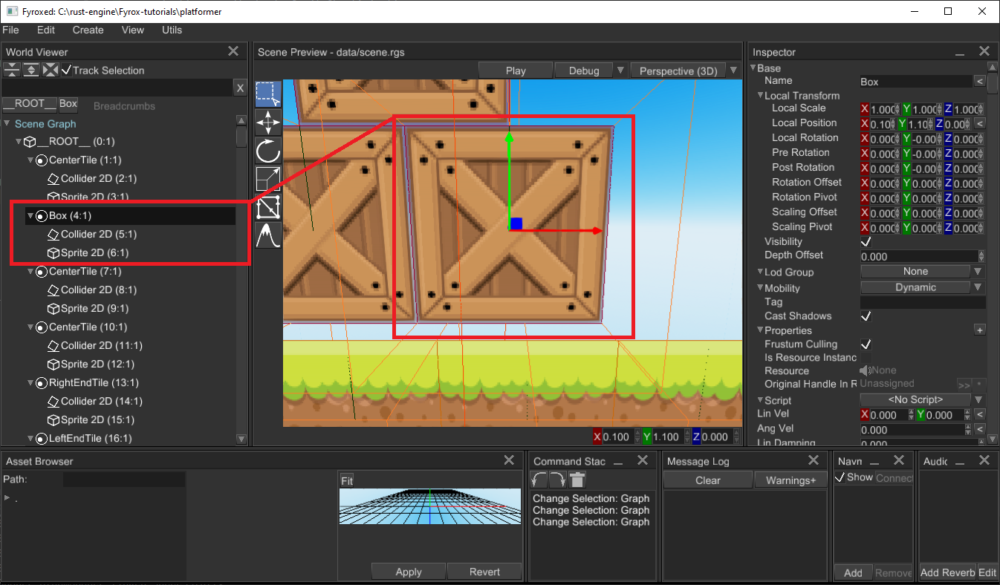
Note that, Box node here is an instance of Rigid Body 2D, and it has Collider 2D as a child and some sprite. This
structure (when a rigid body has a collider as a child) is mandatory for physics engine to work correctly! Collider
won't work (participate in physical simulation) without a rigid body and a rigid body won't work without a collider.
This applied to both 2D and 3D.
Keep in mind, that your graphical representation of an object (some node like Mesh, Sprite, etc.) must be attached
to a rigid body. Otherwise, the rigid body will move, but the graphical representation won't. You can also arrange
it other way around: a graphical node can have rigid body with a collider, but that requires the rigid body to be
kinematic. This is used to create hit boxes, or any other things
that should have physical representation, but move together with graphical node.
Force and torque
You can apply forces and torque to any rigid body, but only dynamic bodies will be affected. There is two ways of applying force to a rigid body: at center of mass or at particular point at the body:
#![allow(unused)] fn main() { extern crate fyrox; use fyrox::{core::algebra::Vector3, scene::rigidbody::RigidBody}; fn apply_force_and_torque(rigid_body: &mut RigidBody) { // Push rigid body forward at the center of mass. rigid_body.apply_force(Vector3::new(0.0, 0.0, 1.0)); // Kick rigid body at the side (this will also make it rotate) rigid_body.apply_force_at_point(Vector3::new(0.0, 0.0, 1.0), Vector3::new(1.0, 0.0, 0.0)); // Turn rigid body around center of mass. rigid_body.apply_torque(Vector3::new(0.0, 3.0, 0.0)); } }
Kinematic rigid bodies
Sometimes you may want to have direct control over position/rotation of a rigid body and tell the physics engine to not do simulation for the body. This can be achieved by making the rigid body kinematic:
#![allow(unused)] fn main() { extern crate fyrox; use fyrox::{ core::{algebra::Vector3, pool::Handle}, scene::{ base::BaseBuilder, collider::{ColliderBuilder, ColliderShape}, graph::Graph, node::Node, rigidbody::{RigidBodyBuilder, RigidBodyType}, }, }; fn create_kinematic_rigid_body(graph: &mut Graph) -> Handle<Node> { RigidBodyBuilder::new(BaseBuilder::new().with_children(&[ // Rigid body must have at least one collider ColliderBuilder::new(BaseBuilder::new()) .with_shape(ColliderShape::cuboid(0.5, 0.5, 0.5)) .build(graph), ])) .with_body_type(RigidBodyType::KinematicPositionBased) .build(graph) } }
Continuous collision detection
Fast-moving rigid bodies can "fly through" other objects (for example a bullet can completely ignore walls if it is
moving too fast), this happens because of discrete calculation. This can be fixed by using continuous collision detection,
to enable it use either .with_ccd_enabled(state) of RigidBodyBuilder or .set_ccd_enabled(state) of RigidBody.
Dominance
Dominance allows you to set a priority of forces applied to rigid bodies. It defines which rigid body can affect what rigid body, for example you can set the highest dominance for actors and leave dominance of everything else at zero, this way actors will be able to push any other dynamic bodies, but dynamic bodies won't affect actors. This is useful when you don't want your actors be pushed by surrounding objects (like if someone throws a box at an actor, it will stay still if it has higher dominance)
2D rigid bodies
2D rigid bodies have no difference with 3D, except the simulation happens in oXY plane and Z coordinate is ignored.
Collider node
Collider is a geometrical shape that is used for collision detection, contact manifold generation, etc. Colliders are used in pair with rigid bodies, they make rigid body participate in collisions.
Important: Colliders only works in pair with rigid bodies! Colliders won't be used by the engine, unless they're direct children of a rigid body. Read this chapter for more info.
Shapes
Collider can have almost any shape, the engine offers the following shapes for 3D:
- Ball - dynamic sphere shape.
- Cylinder - dynamic cylinder shape.
- Cone - dynamic cone shape.
- Cuboid - dynamic box shape.
- Capsule - dynamic capsule shape.
- Segment - dynamic segment ("line") shape
- Triangle - simple dynamic triangle shape
- Triangle mesh - static concave shape, can be used together with any static level geometry (wall, floors, ceilings, anything else)
- Height field - static height field shape, can be used together with terrains.
- Polyhedron - dynamic concave shape.
Also, there is a similar, but smaller set for 2D (because some shapes degenerate in 2D):
- Ball - dynamic circle shape.
- Cuboid - dynamic rectangle shape.
- Capsule - dynamic capsule shape.
- Segment - dynamic segment ("line") shape.
- Triangle - dynamic triangle shape.
- Trimesh - static triangle mesh shape.
- Heightfield - static height field shape.
Dynamic in both lists means that such shapes can be used together with dynamic rigid bodies, they'll correctly handle all collisions and simulation will look as it should. Static means that such shape should be used only with static rigid bodies.
How to create
Use ColliderBuilder to create an instance of collider from code with any shape you want.
#![allow(unused)] fn main() { extern crate fyrox; use fyrox::{ core::pool::Handle, scene::{ base::BaseBuilder, collider::{ColliderBuilder, ColliderShape}, graph::Graph, node::Node, }, }; fn create_capsule_collider(graph: &mut Graph) -> Handle<Node> { ColliderBuilder::new(BaseBuilder::new()) .with_shape(ColliderShape::capsule_y(0.5, 0.2)) .with_friction(1.0) .build(graph) } }
In the editor you can use MainMenu -> Create -> Physics -> Collider, or right-click on a node in World Viewer and
select Add Child -> Physics -> Collider. Collider must be direct child of a rigid body, colliders do nothing on
their own!
Collision filtering
Sometimes there's a need to prevent collision between various groups of colliders. Fyrox supports bit-wise collision filtering exactly for this purpose. For instance, you may have two groups of colliders: actors and powerups, and you want the actors to completely ignore collisions with powerups (and vice versa). In this case you can set collision groups for actors like so:

And set the collision groups for powerups like so:

As you can see, actors and powerups now have separate memberships (read - groups) and filters. This way, the actors
will collide with everything, but powerups and vice versa.
Using colliders for hit boxes
You can use colliders to simulate hit boxes for your game characters. It can be done by creating a rigid body with
KinematicPositionBased type and an appropriate collider as a child node. As the last step you need to attach the body
to a bone in your character's model. Here's a quick example from the editor:

As you can see, the rigid body has a capsule collider as a child and the body is attached to the neck bone. The body
has KinematicPositionBased type, which will ensure that the body won't be simulated, instead its position will be
synchronized with the position of the parent bone.
To actually use the hit boxes in your game, you can either use a ray-casting to perform a hit scan or you can use contacts information to fetch the stuff with which a hit box was contacted. See Ray casting chapter of the section.
Joint
Joint is a configurable link between two rigid bodies, it restricts relative motion of two bodies. Fyrox provides a fixed set of joints that are suitable for various applications.
- Fixed Joint - hard link between two bodies, it is the same is if two rigid bodies were "welded" to each other with a metal rod.
- Revolute Joint - restricts all translational movement and any rotations around Y and Z axes, but leaves rotation around local X axis free. An example of the joint from real world is a door hinge, it allows the door to rotate around single axis, but not move.
- Prismatic Joint - restricts all rotations, movement is allowed along single axis (local X of the joint). An example of the joint from real world could be a slider that supports drawers on a table.
- Ball Joint - restricts all movement, but leaves rotations unrestricted. An example of a ball joint from real world could be human shoulder.
2D joints does not have revolute joints, because it degenerates into ball joint.
Bodies Binding
When the joint is created and all bodies are set to it, it uses self global transform and bodies global transforms to calculate local frames for bodies. This process is called binding, it happens once when the joint is created, but can be initiated by moving the joint to some other position by changing local transform of the joint.
How to create
To create a joint from code use JointBuilder:
#![allow(unused)] fn main() { extern crate fyrox; use fyrox::{ core::pool::Handle, scene::{ base::BaseBuilder, graph::Graph, joint::{BallJoint, JointBuilder, JointParams}, node::Node, }, }; fn create_joint(graph: &mut Graph, body1: Handle<Node>, body2: Handle<Node>) -> Handle<Node> { JointBuilder::new(BaseBuilder::new()) .with_body1(body1) .with_body2(body2) .with_params(JointParams::BallJoint(BallJoint { x_limits_enabled: false, x_limits_angles: Default::default(), y_limits_enabled: false, y_limits_angles: Default::default(), z_limits_enabled: false, z_limits_angles: Default::default(), })) .build(graph) } }
Once the joint is created, it will bind given bodies, using the process describe in the above section.
To create a joint from editor, use MainMenu -> Create -> Physics -> Joint, select the new joint and find Body1 and
Body2 properties. Assign the fields by holding Alt key and drag'n'drop a rigid body to a field. Move the joint to
correct position to ensure the binding will happen as intended.
Limits
You can restrict motion on primary joint axis (rotational and translational) by setting a limit to desired axis.
- Ball Joint have three angular limits, one per rotation around an axis. The angle range is given in radians.
- Prismatic Joint have only one limit it is maximum linear distance between two bodies along primary joint axis.
- Revolute Joint have a single angular limit around primary axis. The angle range is given in radians.
- Fixed Joint does not have any limit setting, because it locks all degrees of freedom.
Usage
Joints can be used to create many game entities, such as doors, chains and rag dolls. The most interesting here is rag doll. It is used to create realistic behaviour for humans and creatures in games. In general, it is a set of rigid bodies, colliders and joints. Where each joint configured to match joints of a creature, for example ball joint could be used for shoulders, revolute joints for knees and elbows.
Ray Casting
Ray casting allows you to query intersections of a ray with rigid bodies in a scene. Typical usage for ray casting is hit-scan weapons (weapons that shoots high-speed projectiles), AI collision avoidance, etc. To query intersections, use physics world instance of a scene graph:
#![allow(unused)] fn main() { extern crate fyrox; use fyrox::{ core::algebra::{Point3, Vector3}, scene::graph::{ physics::{Intersection, RayCastOptions}, Graph, }, }; fn do_ray_cast(graph: &mut Graph, begin: Vector3<f32>, end: Vector3<f32>) -> Vec<Intersection> { let mut buffer = Vec::new(); let ray_direction = end - begin; graph.physics.cast_ray( RayCastOptions { ray_origin: Point3::from(begin), ray_direction, max_len: ray_direction.norm(), groups: Default::default(), sort_results: true, }, &mut buffer, ); buffer } }
The function above will return a collection of intersections that are sorted by intersection distance (a distance from beginning of the ray to an intersection point). Each intersection is represented by the following structure:
#![allow(unused)] fn main() { extern crate fyrox; use fyrox::{ core::{ algebra::{Point3, Vector3}, pool::Handle, }, scene::{graph::physics::FeatureId, node::Node}, }; pub struct Intersection { pub collider: Handle<Node>, pub normal: Vector3<f32>, pub position: Point3<f32>, pub feature: FeatureId, pub toi: f32, } }
collider- a handle of the collider with which intersection was detected. To obtain a handle to rigid body, borrow thecolliderand fetch itsparentfield:graph[collider].parent().normal- a normal at the intersection position in world coordinates.position- a position of the intersection in world coordinates.feature- additional data that contains a kind of the feature with which intersection was detected as well as its index. FeatureId::Face might have index that is greater than amount of triangles in a triangle mesh, this means that intersection was detected from "back" side of a face. To "fix" that index, simply subtract amount of triangles of a triangle mesh from the value.toi- (time of impact) a distance from ray's origin toposition.
Avoiding unnecessary allocations
As you might've noticed, the function above return Vec<Intersection> which allocates intersections on heap. This is
relatively slow and could be sped up a lot by using static array on stack:
#![allow(unused)] fn main() { extern crate fyrox; use fyrox::{ core::{ algebra::{Point3, Vector3}, arrayvec::ArrayVec, }, scene::graph::{ physics::{Intersection, RayCastOptions}, Graph, }, }; fn do_static_ray_cast<const N: usize>( graph: &mut Graph, begin: Vector3<f32>, end: Vector3<f32>, ) -> ArrayVec<Intersection, N> { let mut buffer = ArrayVec::<Intersection, N>::new(); let ray_direction = end - begin; graph.physics.cast_ray( RayCastOptions { ray_origin: Point3::from(begin), ray_direction, max_len: ray_direction.norm(), groups: Default::default(), sort_results: true, }, &mut buffer, ); buffer } fn usage_example(graph: &mut Graph, begin: Vector3<f32>, end: Vector3<f32>) { // Fetch first 32 intersections. dbg!(do_static_ray_cast::<32>(graph, begin, end)); } }
usage_example shows how to use the do_static_ray_cast function - all you need to do is to specify maximum amount of
intersections you're interested in as a generic parameter.
Sound System
Fyrox has quite powerful and flexible audio system which will be covered in this chapter. Basic "building blocks" are sound sources, sound buffers, audio processing buses with various sound effects, sound context. Read the next chapters to learn more.
Audio Bus
Audio bus is an audio processing unit that takes audio samples from any number of sound sources and passes them through a chain of effects (zero or more). Processed samples then can be either sent to an audio playback device (speakers, headphones, etc.) or to some other audio bus. There's always one audio bus (primary) that sends its data to an audio playback device, every other audio buses are considered secondary.
Graph
As stated above, any audio bus (except primary), can output its audio samples to some other audio bus (primary or secondary). Such relationship forms an audio bus graph:

As you can see, there can be any number of sound sources which attached to the respective audio buses. Each audio bus can have any number of effects (such as lowpass, highpass, etc. filtering; reverb effect and more). Finally, each audio bus is connected to some other audio bus.
Such complex audio processing structure allows you to create pretty much any sound environment. For example, you can create an audio bus with a reverb effect, that will represent a huge hangar with lots of echoes. Then you attach all sound sources located in this "hangar" to the audio bus and your sound sources will sound more naturally, according to environment.
Effects
Audio bus can have zero or more audio processing effects. The effects applied one after another (see the arrows on the picture above). You can set any of the following effects:
- Attenuation - changes "volume" of input sound samples.
- Reverb - adds echoes, early and late reflections. Could be used to simulate environment with high reflectivity (hangars, parking lots, etc.)
- Low Pass Filter - passes all frequencies below the specified cut-off frequency.
- High Pass Filter - passes all frequencies above the specified cut-off frequency.
- Band Pass Filter - passes all frequencies in a given range around the specified cut-off frequency.
- All Pass Filter - shifts phase of the signal by 90 degrees at the specified cut-off frequency.
- Low Shelf Filter - reduces amplitude of frequencies in a shape like this ̅ _ at the cutoff frequency.
- High Shelf Filter - reduces amplitude of frequencies in a shape like this _/̅ at the cutoff frequency.
Editor
In the editor, audio bus graph is located in the Audio Context panel:
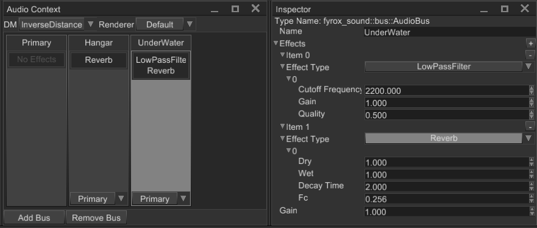
Primary audio bus is located at the left of the panel, every other audio bus is located to the right. Each audio bus (except primary) has a dropdown list (at the bottom), that specifies output audio bus. The list of effect is located in the center; it can be edited in the Inspector (right side of the image).
To attach a sound source to an audio bus, select in the scene and find Audio Bus property in the Inspector and set it
to the name of desired audio bus.
Sound
In Fyrox, sounds are nodes of type Sound, with all the consequent properties and workflows.
How to create
Audio files are loaded using the resource manager:
#![allow(unused)] fn main() { extern crate fyrox; use fyrox::{engine::Engine, scene::Scene, scene::sound::SoundBuffer}; fn build_node(engine: Engine, scene: &mut Scene) { let sound = engine .resource_manager .request::<SoundBuffer, _>("/path/to/resource.ogg"); } }
Then, the node is built using the standard builder pattern:
#![allow(unused)] fn main() { extern crate fyrox; use fyrox::{ engine::Engine, scene::{ base::BaseBuilder, sound::{SoundBuilder, Status, SoundBuffer}, Scene, }, }; fn build_node(engine: Engine, scene: &mut Scene) { let sound = engine .resource_manager .request::<SoundBuffer, _>("/path/to/resource.ogg"); let sound_handle = SoundBuilder::new(BaseBuilder::new()) .with_buffer(Some(sound)) .with_status(Status::Playing) .with_play_once(true) .build(&mut scene.graph); } }
There are a few notable things in the example above.
The first is that sounds don't play automatically; in order to do so, we need to invoke .with_status(Status::Playing).
The second is that sound nodes are not dropped automatically after playback; dropping it can be performed in two ways.
One way is to use the convenient builder API .with_play_once(true); another is to use the graph APIs:
#![allow(unused)] fn main() { extern crate fyrox; use fyrox::{ engine::Engine, scene::{ base::BaseBuilder, sound::{SoundBuilder, Status}, Scene, }, }; fn build_node(engine: Engine, scene: &mut Scene) { let sound_handle = SoundBuilder::new(BaseBuilder::new()).build(&mut scene.graph); let sound = scene.graph[sound_handle].as_sound(); if sound.status() == Status::Stopped { scene.graph.remove_node(sound_handle); } } }
If we want to play background music (or anyway a repeated sound), we just set the looping property when building the node:
#![allow(unused)] fn main() { extern crate fyrox; use fyrox::{ engine::Engine, scene::{base::BaseBuilder, sound::SoundBuilder, Scene}, }; fn build_node(engine: Engine, scene: &mut Scene) { SoundBuilder::new(BaseBuilder::new()) .with_looping(true) // etc. .build(&mut scene.graph); } }
In order to stream large audio files, instead of loading them entirely in memory, the simplest strategy is to create a
corresponding .options file, with the following content:
(
stream: true
)
If the audio file is called, for example, /path/to/background.ogg, call this /path/to/background.ogg.options.
Audio bus
It is possible to specify target audio bus to which the sound will output its audio samples. Audio bus is responsible
for various audio processing, such as filtering, reverb, etc. To specify output audio bus, just use the set_audio_bus
method and set the name of an audio bus.
Head Related Transfer Function
Head Related Transfer Function (HRTF for short) is special audio processing technique that improves audio spatialization. By default, sound spatialization is very simple - volume of each audio channel (left and right) changes accordingly to orientation of the listener. While this simple and fast, it does not provide good audio spatialization - sometimes it is hard to tell from which direction the actual sound is coming from. To solve this issue, we can use head-related transfer function. Despite its scary, mathematical name, it is easy to understand what it's doing. Instead of uniformly changing volume of all frequencies of the signal (as the naive spatialization does), it changes them separately for each channel. The exact "gains" of each frequency of each channel is depends on the contents of head-related transfer function. This is done for each azimuth and elevation angles, which gives full picture of how audio signal from each direction travels to each ear.
HRTF is usually recorded using a head model with ears with a microphone inside each ear. To capture head-related impulse response (time domain) at a fixed distance and angle pair (azimuth and elevation), a very short impulse of sound is produced. Microphones inside each ear records the signal, and then HRIR (time domain) can be converted in HRTF (frequency domain).
HRTF on practice
The theory above could be boring, however it is very simple to use HRTF on practice. Pick a HRIR sphere from the database (any of *.bin files) and load it in the Audio Context panel:

Once it is loaded, all sounds in the scene will use the HRTF for rendering. The same can be achieved by code:
#![allow(unused)] fn main() { extern crate fyrox; use fyrox::scene::{ graph::Graph, sound::{self, HrirSphere, HrtfRenderer, Renderer}, }; fn use_hrtf(graph: &mut Graph) { let hrir_sphere = HrirSphere::from_file("path/to/hrir.bin", sound::SAMPLE_RATE).unwrap(); graph .sound_context .state() .set_renderer(Renderer::HrtfRenderer(HrtfRenderer::new(hrir_sphere))); } }
Performance
HRTF is heavy. It is 5-6 times slower than the simple spatialization, so use it only on middle-end or high-end hardware. HRTF performance is linearly dependent on the amount of sound sources: the more sound sources use HRTF, the worse performance will be and vice versa.
Animation
Animation allows you to change properties of scene nodes at runtime using a set of key frames. Animation
consists of multiple tracks, where each track is bound to a property of a scene node. A track can animate
any numeric properties, starting from numbers (including bool) end ending by 2/3/4 dimensional vectors.
Each component (number, x/y/z/w vector components) is stored in a parametric curve (see
[crate::core::curve::Curve] docs for more info). Every parametric curve contains zero or more key frames.
Graphically this could be represented like so:
Timeline
v
Time > |---------------|------------------------------------>
| |
Track1 > | node.position |
| X curve |..1..........5...........10..........
| Y curve |..2.........-2..................1.... < Curve key frames
| Z curve |..1..........9......................4
|_______________|
Track2 | node.property |
| ............ |.....................................
| ............ |.....................................
| ............ |.....................................
Each key frame is just a real number with interpolation mode. Interpolation mode tells the engine how to calculate intermediate values between key frames. There are three kinds of interpolation used in animations (you can skip "boring math" if you want):
- Constant - intermediate value will be calculated using leftmost value of two. Constant "interpolation" is usually used to create step-like behaviour, the most common case is to "interpolate" two boolean values.
- Linear - intermediate value will be calculated using linear interpolation
i = left + (right - left) / t, wheret = (time_position - left) / (right - left).tis always in0..1range. Linear interpolation is usually used to create "straight" transitions between two values. - Cubic - intermediate value will be calculated using Hermite cubic spline:
i = (2t^3 - 3t^2 + 1) * left + (t^3 - 2t^2 + t) * left_tangent + (-2t^3 + 3t^2) * right + (t^3 - t^2) * right_tangent, wheret = (time_position - left) / (right - left)(tis always in0..1range),left_tangentandright_tangentis usually atan(angle). Cubic interpolation is usually used to create "smooth" transitions between two values.
Track binding
Each track is always bound to a property in a node, either by its name or by a special binding. The name is used to fetch the property using reflection, the special binding is a faster way of fetching built-in properties. It is usually used to animate position, scale and rotation (these are the most common properties available in every scene node).
Time slice and looping
While key frames on the curves can be located at arbitrary position in time, animations usually plays a specific time slice. By default, each animation will play on a given time slice infinitely - it is called animation looping, it works in both playback directions.
Speed
You can vary playback speed in wide range, by default every animation has playback speed multiplier set to 1.0. The multiplier tells how faster (>1) or slower (<1) the animation needs to be played. Negative speed multiplier values will reverse playback.
Enabling or disabling animations
Sometimes there's a need to disable/enable an animation or check if it is enabled or not, you can do this by using the pair
of respective methods - [Animation::set_enabled] and [Animation::is_enabled].
Signals
Signal is a named marker on specific time position on the animation timeline. Signal will emit an event if the animation playback
time passes signal's position from left-to-right (or vice versa depending on playback direction). Signals are usually used to
attach some specific actions to a position in time. For example, you can have a walking animation and you want to emit sounds
when character's feet touch ground. In this case you need to add a few signals at times when each foot touches the ground.
After that all you need to do is to fetch animation events one-by-one and emit respective sounds. See [AnimationSignal] docs
for more info and examples.
Creating From Code
Usually, animations are created from the editor or some external tool and then imported in the engine. Before trying the example
below, please read the docs for [crate::scene::animation::AnimationPlayer] node, it is much more convenient way of animating
other nodes. The node can be created from the editor and you don't even need to write any code.
Use the following example code as a guide only if you need to create procedural animations:
#![allow(unused)] fn main() { extern crate fyrox; use fyrox::{ animation::{ container::{TrackDataContainer, TrackValueKind}, track::Track, value::ValueBinding, Animation, }, core::{ curve::{Curve, CurveKey, CurveKeyKind}, pool::Handle, }, scene::{ node::Node, base::BaseBuilder, graph::Graph, pivot::PivotBuilder } }; fn create_animation(node: Handle<Node>) -> Animation { let mut frames_container = TrackDataContainer::new(TrackValueKind::Vector3); // We'll animate only X coordinate (at index 0). frames_container.curves_mut()[0] = Curve::from(vec![ CurveKey::new(0.5, 2.0, CurveKeyKind::Linear), CurveKey::new(0.75, 1.0, CurveKeyKind::Linear), CurveKey::new(1.0, 3.0, CurveKeyKind::Linear), ]); // Create a track that will animated the node using the curve above. let mut track = Track::new(frames_container, ValueBinding::Position); track.set_target(node); // Finally create an animation and set its time slice and turn it on. let mut animation = Animation::default(); animation.add_track(track); animation.set_time_slice(0.0..1.0); animation.set_enabled(true); animation } // Create a graph with a node. let mut graph = Graph::new(); let some_node = PivotBuilder::new(BaseBuilder::new()).build(&mut graph); // Create the animation. let mut animation = create_animation(some_node); // Emulate some ticks (like it was updated from the main loop of your game). for _ in 0..10 { animation.tick(1.0 / 60.0); animation.pose().apply(&mut graph); } }
The code above creates a simple animation that moves a node along X axis in various ways. The usage of the animation is only for the sake of completeness of the example. In the real games you need to add the animation to an animation player scene node and it will do the job for you.
Animation Editor

Animation Editor is a tool that helps you to create and preview animations. This is a powerful tool that can be used to animated pretty much any numeric property. It has three main parts:
Toolbar- contains a set of tools that changes a particular part of an animation (name, length, speed, etc.)Track List- contains a list of tracks of nodes that will be animated.Curve Editor- curve editor allows you to edit behaviour of a numeric parameter over the time.
The editor can be opened in two ways - using Utils -> Animation Editor or by selecting an animation player node and
clicking Open Animation Editor button in the inspector.
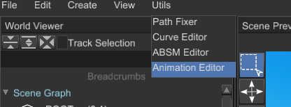

In both ways you still need to select an animation player for editing.
Toolbar
The toolbar contains a set of tools that changes a particular part of an animation (name, length, speed, etc.). It looks like this:
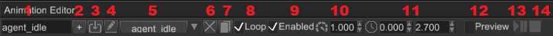
Animation Name- name of a currently selected animation.Add Animation- adds a new empty animation with the name from the text box at the left to the animation player.Import Animation- starts animation importing process. See Animation Importing section for more info.Rename Animation- renames a currently selected animation using the name from the text box at the left.Animation Selector- allows you to switch currently edited animation.Delete Animation- deletes a currently selected animation, tries to select last animation from the list if possible.Duplicate Animation- clones a currently selected animation.Loop Animation- enables or disables looping of a currently selected animation.Enable Animation- enables or disables a currently selected animation.Animation Speed- sets a new playback speed of a currently selected animation.Time Slice- a time range (in seconds) which defines start and end time of a currently selected animation.Preview Switch- enables or disables animation preview. SeePreview Modesection for more info.Play/Pause- plays or pauses a currently selected animation (allowed only in the preview mode).Stop- stops a currently selected animation (allowed only in the preview mode).
Track List
The track list contains a list of tracks of nodes that will be animated. It looks like this:

Filter Bar- filters the track list by finding tracks whose names matching the filter. You can use this to find tracks that belong to a particular scene node.Clear Filter- clears the filter, the track list will show all the tracks after this.Collapse All- collapses all the tracks in the list.Expand All- expands all the tracks in the list.Track- a track with some number of children parametric curves.Track Component Curve- parametric curve that serves a data source for the animation for a particular track.Track Switch- enables or disables a track; disabled tracks won't "touch" their properties.Add Track- starts property binding process, see Property Binding section for more info.
Track Context Menu

Remove Selected Tracks- removes selected tracks; you can remove multiple tracks at a time by selecting them while holdingCtrl.
Curve Editor
Curve editor allows you to edit parametric curves (one at a time). A curve consists of zero or more key frames with various transition rules between current and the next. The editor looks like this:
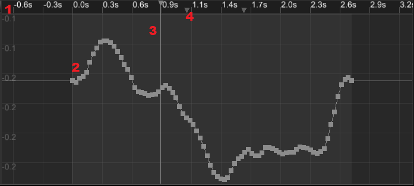
Time Ruler- shows time values and every signal of a currently selected animation. A click on the time ruler will move the playback cursor at the click position. You can move it by clicking at the cursor and moving the mouse while holding the left mouse button. Animation signals can be moved in the same fashion.Parametric Curve- a curve that defines how a value changes over time.Time Thumb- animation playback cursor, useful only for preview.Animation Signal- some animation signal that will produce animation events when the playback cursor passes it.
Time Ruler Context Menu

Remove Signal- removes an animation signal under the mouse cursor.Add Signal- adds a new animation signal at the mouse cursor position.
Key Frame Context Menu

Location- shows a key location and allows you to change it. Useful for setting precise values.Value- shows a key value and allows you to change it. Useful for setting precise values.Add Key- adds a new key to the curve.Remove- removes all selected keys. You can select multiple keys either by box selection (click and drag the mouse to active box selection) or by clicking on separate keys while holdingCtrl.Key...- allows you to change the interpolation type of key. It could be one of the following values: Constant, Linear, Cubic.Zoom To Fit- tries to find zooming values (for both axes) and the view position with which the entire curve fits in the viewport.
Property Binding
To animate a property all you need to do is to click on Add Track... button at the bottom of the track list, select
a node to animate and then select a property that will be animated. There are two windows that will be shown one after
another:


You can cancel property binding at any time by clicking Cancel in any of the windows. Keep in mind that you can animate
only numeric properties, so not every property is shown in the window.
Animation Importing
Animations can be stored in separate files, but the engine requires all of them to be in a single Animation Player. To
put an animation from an external resource (an FBX, for instance) in the animation player you can use animation
importing. To do that, click on animation import icon and then select a root node of the hierarchy that is animated in
the external animation file, then select the animation file and click Ok. The engine will try to import the animation
and map it to the given hierarchy, mapping is done using node names, so animated node names must match in both your
scene and your external animation file.

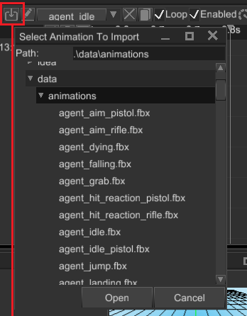
Preview Mode
Preview mode helps you to see and debug your animation. After activating the mode, you need to play the animation by
clicking the Play/Pause button:

Any significant change made in the scene will automatically deactivate the preview mode reverting all the changes made by playing animation.
Limitations
For now there's no dopesheet mode in the editor, you can edit only one numeric parameter at a time. Also, there's no capture mode - this is a special mode in which the editor automatically adds your changes in the scene to the animation. These limitations will be removed in the future versions.
Animation Blending
Animation blending is a powerful feature that allows you to mix multiple animations into one. Each animation is mixed with a various weights which in sum gives 1.0 (100%). By having opposite coefficients (k1 = 0 -> 1, k2 = 1 -> 0) changing in time it is possible to create transition effect.
Handling transitions with all the coefficients is a routine job, the engine can handle it for you giving you some nice features:
- Multiple states with smooth transitions between them
- Ability to blend multiple animations in one and use it as pose source for blending
- Ability to specify a set of variables that will be used as blending coefficients and transition rules.
All these features consolidated in so-called animation blending state machine (ABSM). Machine is used to blend multiple animation as well as perform automatic "smooth" transition between states. Let's have a quick look at a simple machine graph:
+-------------+
| Idle Anim |
+------+------+
|
Walk Weight |
+-----------+ +-------+ Walk->Idle Rule |
| Walk Anim +------+ | |
+-----------+ | | +-------+ +---+---+
| Blend | | +-------->+ |
| +------+ Walk | | Idle |
+-----------+ | | | +<--------+ |
| Aim Anim +------+ | +--+----+ +---+---+
+-----------+ +-------+ | ^
Aim Weight | Idle->Walk Rule |
| |
Walk->Run Rule | +---------+ | Run->Idle Rule
| | | |
+--->+ Run +---+
| |
+----+----+
|
|
+------+------+
| Run Anim |
+-------------+
Here we have Walk, Idle and Run states which use different sources of poses:
- Walk - is the most complicated here - it uses result of blending between
AimandWalkanimations with different weights. This is useful if your character can only walk or can walk and aim at the same time. Desired pose determined by Walk Weight and Aim Weight parameters combination. - Run and idle both directly use animation as pose source.
There are four transitions between three states each with its own rule. Rule is just a boolean parameter that indicates that transition should be activated. Let's look at the code example of the above state graph:
#![allow(unused)] fn main() { extern crate fyrox; use fyrox::{ animation::machine::{ Machine, State, Transition, PoseNode, node::blend::BlendPose, Parameter, PlayAnimation, PoseWeight, node::blend::BlendAnimations }, core::pool::Handle }; // Assume that these are correct handles. let idle_animation = Handle::default(); let walk_animation = Handle::default(); let aim_animation = Handle::default(); let mut machine = Machine::new(); let root_layer = machine.layers_mut().first_mut().unwrap(); let aim = root_layer.add_node(PoseNode::PlayAnimation(PlayAnimation::new(aim_animation))); let walk = root_layer.add_node(PoseNode::PlayAnimation(PlayAnimation::new(walk_animation))); // Blend two animations together let blend_aim_walk = root_layer.add_node(PoseNode::BlendAnimations( BlendAnimations::new(vec![ BlendPose::new(PoseWeight::Constant(0.75), aim), BlendPose::new(PoseWeight::Constant(0.25), walk) ]) )); let walk_state = root_layer.add_state(State::new("Walk", blend_aim_walk)); let idle = root_layer.add_node(PoseNode::PlayAnimation(PlayAnimation::new(idle_animation))); let idle_state = root_layer.add_state(State::new("Idle", idle)); root_layer.add_transition(Transition::new("Walk->Idle", walk_state, idle_state, 1.0, "WalkToIdle")); root_layer.add_transition(Transition::new("Idle->Walk", idle_state, walk_state, 1.0, "IdleToWalk")); }
As you can see, everything is quite straightforward. Even such simple state machine requires quite a lot of code, which can be removed by using ABSM editor. Read the next chapter to learn about it.
Multiple ABSM per model
You can use multiple machines to animate single model - for example one machine can be used for locomotion and other for combat. This means that locomotion machine will take control over lower body and combat machine will control upper body.
Animation Blending State Machine (ABSM) Editor
While it is possible to create and manage animation blending and state manually from code, it quickly becomes too annoying and hardly manageable. To help you create and manage blending machines in easy way, the engine offers an ABSM Editor tool. This chapter is an overview of the editor, it is quite complex, but the guide should help you to figure out which part is made for what. Next chapter will help you to create your first animation blending state machine.
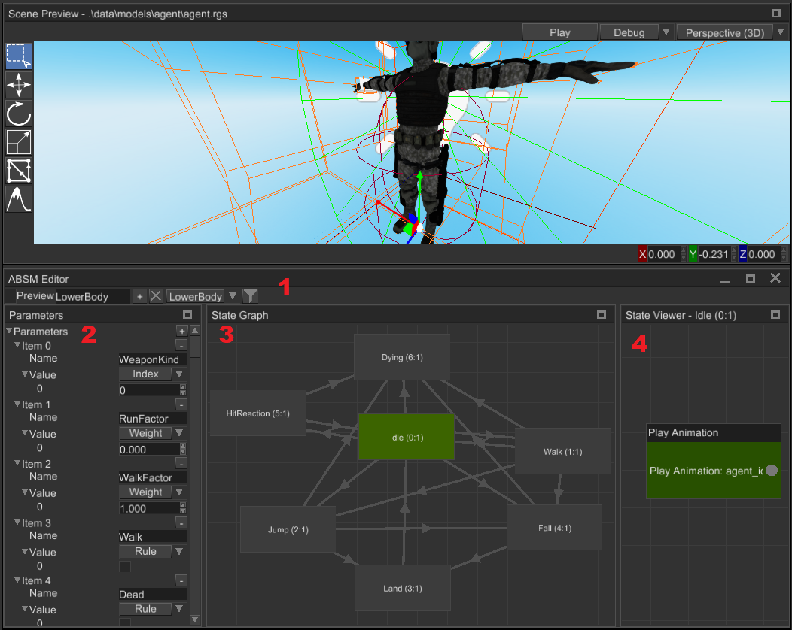
The editor has four main parts (panels):
Toolbar- contains a set of tools to edit animation layers and enable/disable preview mode. See Toolbar section for more info.Parameters- allows you to edit various variables that are responsible for transitions, weight parameters for blending, etc. See Parameters section for more info.State Graph- allows you to create, delete, edit states and transition between them. See State Graph section for more info.State Viewer- allows you to edit pose source for a state. Pose source can be represented either by a single node that plays an animation, or a series of play animation nodes connected to blending nodes (which can be connected to other blending nodes, etc.). See State Viewer section for more info.
{kind=link}
The editor can be opened in two ways - using Utils -> ABSM Editor or by selecting an animation blending state machine
node and clicking Open ABSM Editor... button:
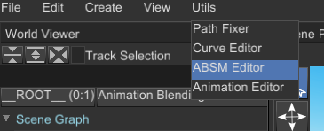

In both ways you still need to select an an animation blending state machine node for editing.
Toolbar
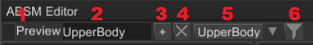
Preview Switch- enables or disables preview mode for the ABSM. See Preview Mode section for more info.Layer Name- name of the selected layer. Type a new name here to rename currently selected layer (hit enter or just click elsewhere to rename).Add Layer- adds a new layer with the name in theLayer Nametext box to the ABSM. ABSM can have multiple layers with the same name, but it strongly advised to set unique names here.Remove Current Layer- removes currently selected layer. You can delete all layers, but in this case your ABSM won't have any effect.Layer Selector- allows you to select a layer for editing, default selection is none.Layer Mask- opens aLayer Mask Editorand helps you to edit the layer mask of the current layer. See Layer Mask section for more info.
Parameters
Parameter is a named and typed variable that provides the animation system with some data required for it to work. There are only three type of parameters:
Rule- boolean value that used as a trigger for transitions. When transition is using some rule, it checks the value of the parameter and if it istruetransition starts.Weight- real number (f32) that is used a weight when you're blending multiple animations into one.Index- natural number (i32) that is used as an animation selector.
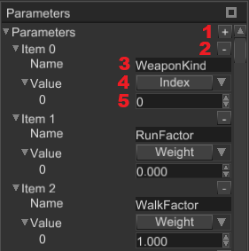
Add Parameters- adds a new parameter to the parameters' container.Remove a Parameter- removes selected parameter from the parameters' container.Parameter Name- allows you to set a parameter name.Parameter Type- allows you to select the type of the parameter.Parameter Value- allows you to set parameter value.
State Graph
State Graph allows you to create states and transitions between them.
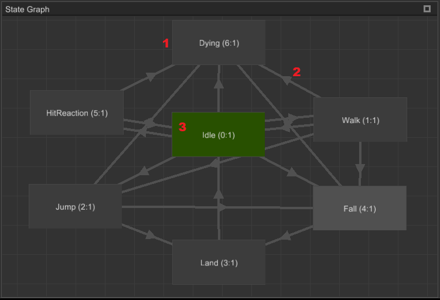
State- state is final animation for a set of scene nodes, only one state can be active at a time.Transition- is an ordered connection between two states, it defines how much time it needed to perform blending of two states.Root State- is an entry state of the current layer.
State Context Menu

Create Transition- starts transition creation from the current state to some other.Remove- removes the state.Set As Entry State- marks the state as an entry state (this state will be active at beginning).
Transition Context Menu

Remove Transition- removes selected transition.
State Properties
Select a State node to edit the following properties:
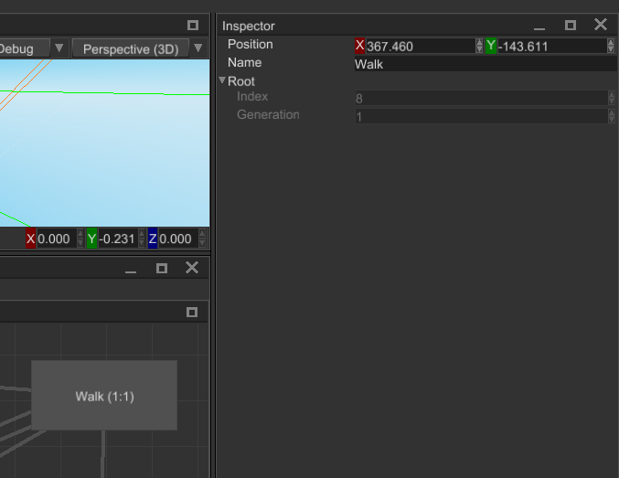
Position- is a location of the state on the canvas.Name- name of the state.Root- handle of the backing animation node inside the state.
Transition Properties
Select a Transition node to edit the following properties:

Name- name of the state.Transition Time- amount of time for blending between two states (in seconds).Elapsed Time- starting amount of blending time.Source- handle of a source state.Desc- handle of a destination state.Rule- a name ofRuletype parameter that defines whether the transition can be activated or not.Invert Rule- defines whether to invert the value ofRuleor not.Blend Factor- defines a percentage (in0..1range) of how much transition was active.
State Viewer
State Viewer allows you to edit contents of states. You can create animation blending chains of any complexity, the
simplest content of a state is just a single Play Animation node. Currently, the engine supports just three animation
blending nodes:
Play Animation- takes animation pose directly from specified animation, does nothing to it.Blend Animations- takes multiple animation poses from respective animations and blends them together with respective blend weights.Blend Animations By Index- takes multiple animation poses from respective animations and switches between them with "smooth" transition using an index parameter.
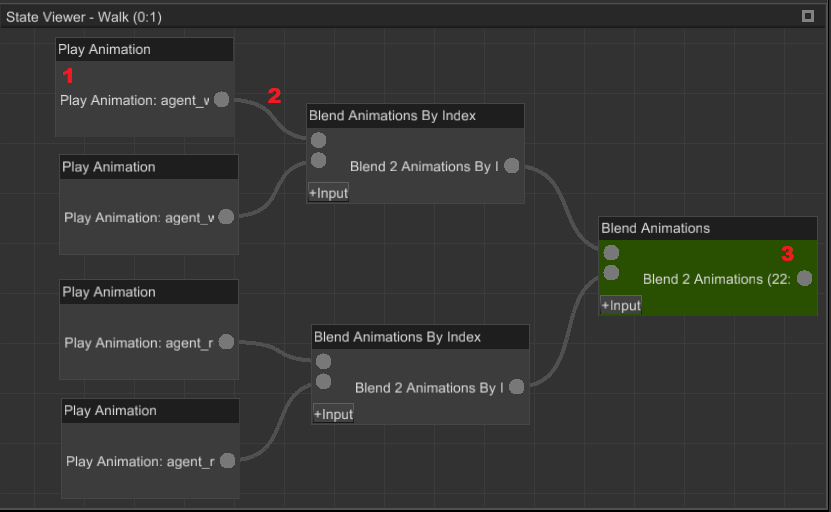
Node- is a source of animation for blending.Connection- defines how nodes are connected to each other. To create a new connection, click on a small dot on a node, hold the button and start dragging to a dot on some other node.Root Node- root node is marked green; root node is a final source of animation for the parent state.
Play Animation Properties
Select a Play Animation node to edit the following properties:

Position- is a location of the node on the canvas.Animation- an animation to fetch the pose from.
Blend Animations Properties
Select a Blend Animations node to edit the following properties:

Position- is a location of the node on the canvas.Pose Sources- a set of input poses. To add a pose either click on+or+Inputon the node itself. Don't forget to connect some nodes to the new input poses.Weight- a weight of the pose; could be either a constant value or some parameter.
Blend Animations By Index Properties
Select a Blend Animations By Index node to edit the following properties:

Position- is a location of the node on the canvas.Index Parameter- a name of an indexing parameter (must beIndextype).Inputs- a set of input poses. To add a pose either click on+or+Inputon the node itself. Don't forget to connect some nodes to the new input poses.Blend Time- defines how much time is needed to transition to the pose.
Connection Context Menu
Every connection has a context menu that can be shown by a right-click on a connection.
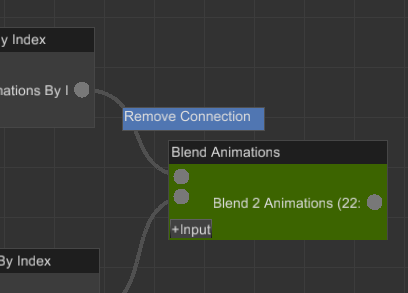
Remove Connection- removes the connection between parent nodes.
Node Context Menu
Every node has a context menu that can be shown by a right-click on a connection.

Set As Root- sets the node as the final pose source of the parent state.Remove- removes the node from the state.
Layer Mask

Layer mask editor allows you to select which nodes won't be animated by the current animation layer. Selected nodes
are marked with dark color. To select multiple nodes at once, hold Ctrl and click on items. The text box at the top
of the window allows you to search for a particular scene node. To save edited layer mask click OK.
Preview Mode
Preview mode turns on the animation blending state machine and its animation player and allows you to see the result of the work of the machine. Any significant changes in the scene automatically disables the preview mode and any changes done by the machine is discarded. While the preview mode is active, you can freely change the values of the parameters to see how the machine will react to this. This helps you to debug your state machine, it is especially useful for complex state machines with lots of layers. Here's how the preview mode works:
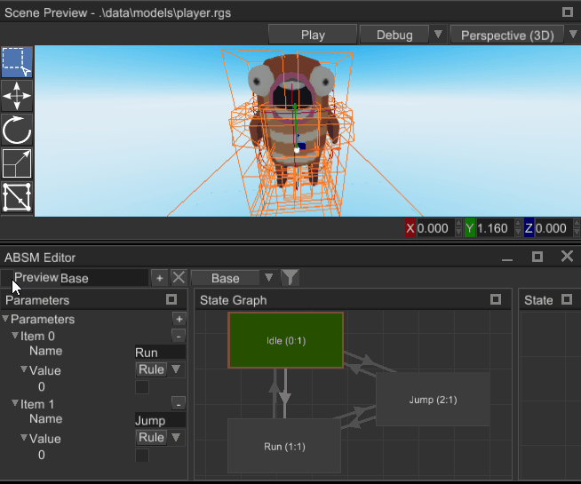
Artificial Intelligence (WIP)
Behaviour Trees (WIP)
Path Finding
Fyrox has built-in A* (A-star) algorithm for pathfinding. It can be used to find a path on arbitrary graph without cycles. It could be a simple grid where each point knows about its "neighbours", navigational mesh, or some other graph.
Examples
The simplest examples could be a search of path on uniform grid. This could be useful for games with open worlds, strategies, and any other types of games that uses uniform grid for pathfinding.
#![allow(unused)] fn main() { extern crate fyrox; use fyrox::{ core::algebra::Vector3, utils::astar::{PathFinder, PathVertex}, }; fn astar_on_uniform_grid() { // Create vertices. let size = 40; let mut vertices = Vec::new(); for y in 0..size { for x in 0..size { vertices.push(PathVertex::new(Vector3::new(x as f32, y as f32, 0.0))); } } let mut pathfinder = PathFinder::new(); pathfinder.set_vertices(vertices); // Link vertices to form a uniform grid. for y in 0..(size - 1) { for x in 0..(size - 1) { pathfinder.link_bidirect(y * size + x, y * size + x + 1); pathfinder.link_bidirect(y * size + x, (y + 1) * size + x); } } // Build a path from vertex 0 to vertex 100. let mut path = Vec::new(); assert!(pathfinder.build(0, 100, &mut path).is_ok()); } }
Keep in mind, that the returned path is always reversed (its first point corresponds to an end point). You need either
to reverse the path, or (which is much faster) just iterate in reverse over its points.
What to use
A* is very simple, yet powerful algorithm. However, it is not always suitable, because it searches only on graph vertices and cannot build paths that are lying on a surface of arbitrary meshes. Simple path finding on a uniform grid is ok for some games (strategies for instance), but in FPS games it will look awful. In this case you should use navigational meshes which can build path on a surface of arbitrary meshes.
Performance
Current A* implementation is not ideal and may hurt performance if you need to calculate a lot of paths on large graphs. It will be optimized in the future (see tracking issue for info).
Navigational Meshes
Navigational mesh (navmesh for short) is a surface which can be used for path finding. Unlike A* Pathfinder, it can build arbitrary paths on a surface of large polygons, making a path from point A to point B linear (standard pathfinder builds path only from vertex to vertex). Navmeshes should be used when you have an arbitrary "walkable" surface, for example, a game level with rooms, hallways, multiple floors and so on. A* pathfinder should be used for strategies or any other types of games with uniform pathfinding grid.
Editor
Navigational meshes can be created and edited in the FyroxEd. At first, create a "Navigational Mesh" node, select it and switch to "navmesh" interaction mode:

Now you can edit the navmesh. For now, editing capabilities are quite limited and the only way to edit the navmesh is to Shift+Drag one if its edges:

You can also delete edges and vertices: select a vertex or an edge and press Delete key. If you need to create closed
loops, use "Connect Edges" button in the "Navmesh" floating panel:
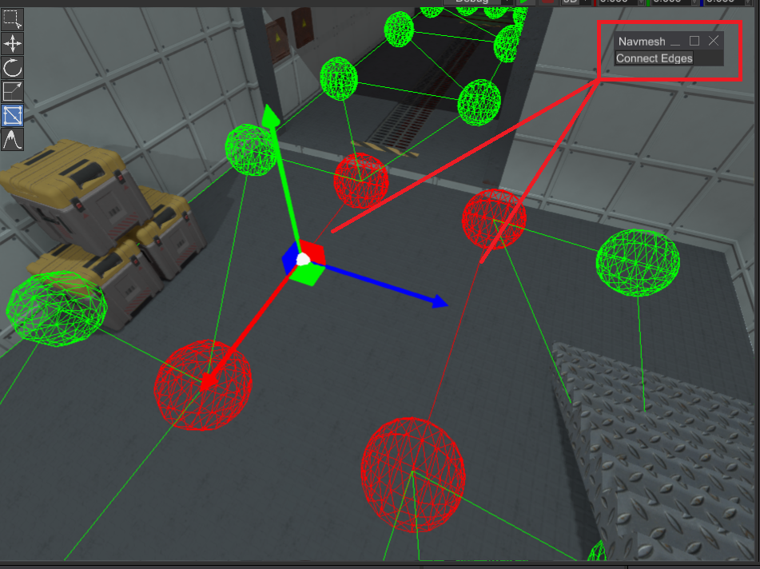
Automatic generation
Fyrox does not support automatic navigational mesh generation yet. You can help by adding such feature.
Agents
Navigational mesh agent helps you to build paths along the surface of a navigational mesh and follow it. Agents can be used to drive the motion of your game characters. Every agent knows about its target and automatically rebuilds the path if the target has moved. Navmesh agents are able to move along the path, providing you with their current position, so you can use it to perform an actual motion of your game characters. Agents work together with navigational meshes, you need to update their state every frame, so they can recalculate path if needed. A simple example could something like this:
#![allow(unused)] fn main() { extern crate fyrox; use fyrox::utils::navmesh::NavmeshAgent; struct Foo { // Add this to your script agent: NavmeshAgent } }
After that, you need to update the agent every frame to make sure it will follow the target:
#![allow(unused)] fn main() { extern crate fyrox; use fyrox::{ core::algebra::Vector3, scene::navmesh::NavigationalMesh, utils::navmesh::NavmeshAgent, }; fn update_agent( agent: &mut NavmeshAgent, target: Vector3<f32>, dt: f32, navmesh: &mut NavigationalMesh, ) { // Set the target to follow and the speed. agent.set_target(target); agent.set_speed(1.0); // Update the agent. agent.update(dt, navmesh.navmesh_mut()).unwrap(); // Print its position - you can use this position as target point of your game character. println!("{}", agent.position()); } }
This method should be called in on_update of your script. It accepts four parameters: a reference to the agent, a
target which it will follow, a time step (context.dt), and a reference to navigational mesh node. You can fetch
navigational mesh from the scene graph by its name:
#![allow(unused)] fn main() { extern crate fyrox; use fyrox::scene::{navmesh::NavigationalMesh, Scene}; fn find_navmesh<'a>(scene: &'a mut Scene, name: &str) -> &'a mut NavigationalMesh { let handle = scene.graph.find_by_name_from_root(name).unwrap().0; scene.graph[handle].as_navigational_mesh_mut() } }
Rendering (WIP)
Shaders
Shader is a set of programs that run directly on graphics adapter. Each program from the set is called sub-shader. Sub-shaders linked with render pass, each render pass defines "where" to draw an object. "where" means that you can set up your own render pass and the renderer will use the sub-shader with your render pass. For the ease of use there are a number of predefined render passes.
Shaders have properties of various types that can be used together with materials to draw an object.
Shaders language
The engine uses GLSL shading language for every sub-shader. There are numerous GLSL guides over the internet, so there is no need to "re-post" the well documented info again.
There are very few differences:
- No need to define a version of the shader. Every shader source will be pre-processed, and it will get correct version automatically. Preprocessing is needed because the same shader could run on OpenGL and WebGL (OpenGL ES) which have some differences.
- There is a "standard" library of useful methods which is automatically included in every shader source at preprocessing stage. The library source could be found here. It is well documented, and you may find some functions useful for you job.
Structure
Shader has rigid structure that could be described in this code snippet:
(
// A set of properties, there could be any amount of properties.
properties: [
(
// Each property must have a name. This name must match with respective
// uniforms! That's is the whole point of having properties.
name: "diffuseTexture",
// Value has limited set of possible variants.
value: Sampler(default: None, fallback: White)
)
],
// A set of render passes (see next section for more info)
passes: [
(
// Name must match with the name of either standard render pass (see below) or
// one of your passes.
name: "Forward",
// A set of parameters that regulate renderer pipeline state.
// This is mandatory field of each render pass.
draw_parameters: DrawParameters(
// A face to cull. Either Front or Back.
cull_face: Some(Back),
// Color mask. Defines which colors should be written to render target.
color_write: ColorMask(
red: true,
green: true,
blue: true,
alpha: true,
),
// Whether to modify depth buffer or not.
depth_write: true,
// Whether to use stencil test or not.
stencil_test: None,
// Whether to perform depth test when drawing.
depth_test: true,
// Blending options.
blend: Some(BlendFunc(
sfactor: SrcAlpha,
dfactor: OneMinusSrcAlpha,
)),
// Stencil options.
stencil_op: StencilOp(
fail: Keep,
zfail: Keep,
zpass: Keep,
write_mask: 0xFFFF_FFFF,
),
),
// Vertex shader code.
vertex_shader:
r#"
layout(location = 0) in vec3 vertexPosition;
layout(location = 1) in vec2 vertexTexCoord;
uniform mat4 rg3d_worldViewProjection;
out vec2 texCoord;
void main()
{
texCoord = vertexTexCoord;
gl_Position = rg3d_worldViewProjection * vertexPosition;
}
"#;
// Pixel shader code.
pixel_shader:
r#"
// Note that the name of this uniform match the name of the property up above.
uniform sampler2D diffuseTexture;
out vec4 FragColor;
in vec2 texCoord;
void main()
{
FragColor = diffuseColor * texture(diffuseTexture, texCoord);
}
"#;
)
],
)
Properties
Property is a named variable of some type. Properties are directly tied with the uniforms in the sub-shaders,
for each you can have a property called time, and then you can define uniform float time; in your sub-shader
and the engine will pass a property value to that uniform for you before drawing an object. Properties placed in
a "global namespace", which means that every sub-shader has "access" to the properties.
Built-in properties
There are a number of built-in properties, the full list is available here
Predefined render passes
Predefined render passes helps you to create your own shader without a need to create your own render pass and to quickly start writing your shaders.
- GBuffer - A pass that fills a set with render target sized textures with various data about each rendered object. These textures then are used for physically-based lighting. Use this pass when you want the standard lighting to work with your objects.
- Forward - A pass that draws an object directly in render target. This pass is very limiting, it does not support lighting, shadows, etc. It should be only used to render translucent objects.
- SpotShadow - A pass that emits depth values for an object, later this depth map will be used to render shadows.
- PointShadow - A pass that emits distance from a fragment to a point light, later this depth map will be used to render shadows.
Drawing parameters
Drawing parameters defines which GPU functions to use and at which state. For example, to render transparent objects you need to enable blending with specific blending rules. Or you need to disable culling to draw objects from both sides. This is when draw parameters come in handy. There is a relatively large list of drawing parameters, and it could confuse a person who isn't used to work with graphics. Thankfully there is a good documentation about this available here
Vertex shader
Vertex shader operates on single vertices, it must provide at least the position of the vertex in clipping space. In other words it has to do at least this:
layout(location = 0) in vec3 vertexPosition;
uniform mat4 rg3d_worldViewProjection; // Note the built-in variable.
void main()
{
gl_Position = rg3d_worldViewProjection * vertexPosition;
}
This is the simplest vertex shader, using vertex shaders you can create various graphical effects that affects vertices.
Pixel Shader
Pixel shader (or more precisely - fragment shader), operates on a small fragment of your render target. In general pixels shaders just writes some color to a render target (or multiple targets) using some program.
out vec4 FragColor;
void main()
{
FragColor = vec4(1, 0, 0, 1);
}
This is the simplest pixel shader, it just fills the render target with red color.
Materials
Material defines a set of values for a shader. Materials usually contains textures (diffuse, normal, height, emission and other maps), numerical values (floats, integers), vectors, booleans, matrices and arrays of each type, except textures. Each parameter can be changed in runtime giving you the ability to create animated materials. However, in practice, most materials are static, this means that once it's created, it won't be changed anymore.
Please keep in mind that the actual "rules" of drawing an entity are stored in the shader, material is only a storage for specific uses of the shader.
Multiple materials can share the same shader, for example standard shader covers 95% of most common use cases, and it is shared across multiple materials. The only difference are property values, for example you can draw multiple cubes using the same shader, but with different textures.
Material itself can be shared across multiple places as well as the shader. This gives you the ability to render multiple objects with the same material efficiently.
Performance
It is very important re-use materials as much as possible, because the amount of materials used per frame significantly correlates with performance. The more unique materials you have per frame, the more work the renderer and video driver need in order to render a frame and more time the frame will require for rendering, thus lowering your FPS.
Standard material
The engine offers a standard PBR material, PBR stands for "Physically-Based Rendering" which gives you the quality of shading which is very close to materials in real world (to some extent of course).
The standard material can cover 95% of use cases, and it is suitable for almost any kind of game, except maybe some cartoon-ish or stylized games.
The standard material has quite a lot of properties that can be used to fully utilize the power of PBR rendering:
- diffuseColor - an RGBA color that will be used as a base color for you object. Caveat: the opacity value
(alpha) will be used only with
Forwardrender path! This means that you will need to switch render path on your mesh (see below) - diffuseTexture - a 2D texture containing the unlit "basic" colors of your object, this is the most commonly used texture. For example, you can assign a brick wall texture to this property and your object will look like a brick wall.
- normalTexture - a 2D texture containing per-pixel normal vectors.
- metallicTexture - a 2D texture containing per-pixel metallic factor, where 0 - dielectric, 1 - metal. In simple words it defines whether your object reflects (1.0) the environment or not (0.0).
- roughnessTexture - a 2D texture containing per-pixel roughness factor, where 0 - completely flat, 1 - very rough.
- heightTexture - a 2D texture containing per-pixel displacement value, it is used with parallax mapping to crate an effect of volume on a flat surface.
- emissionTexture - a 2D texture containing per-pixel emission lighting. You could use this to create emissive surfaces like small lamps on wall of sci-fi ship, or to create glowing eyes for your monsters that will scare the player.
- lightmapTexture - a 2D texture containing per-pixel static lighting. It is used to apply precomputed light to your 3D models, and the most common use case is to lit a static object using a static light. Precomputed light is very cheap. The engine offers built-in lightmapper that can generate lightmaps for you.
- aoTexture - a 2D texture containing per-pixel shading values, allows you to "bake" shadows in for your 3D object.
- texCoordScale - a 2D vector that allows you to scale texture coordinates used to sample the textures mentioned above (except lightmaps, they're using separate texture coordinates)
- layerIndex - a natural number that is used for decals masking, a decal will only be applied to your mesh if and only if the decal has matching index.
- emissionStrength - a 3D vector that allows you to set the strength of emission per-channel (R, G, B) for
your
emissionTexture
Transparency
The standard material offers very basic transparency support, to use it you have to explicitly switch render path on your mesh object. It could be done in this way:
#![allow(unused)] fn main() { extern crate fyrox; use fyrox::{ core::pool::Handle, scene::{mesh::RenderPath, node::Node, Scene}, }; fn set_forward_render_path(scene: &mut Scene, mesh_handle: Handle<Node>) { scene.graph[mesh_handle] .as_mesh_mut() .set_render_path(RenderPath::Forward); } }
After this, your mesh will be rendered using a specialized render pass called Forward which supports alpha-blending and transparent objects. Caveat: Current forward renderer implementation does not support any kind of lighting, if you need lighting, you will need to use custom shader for that!
Material import
When you're loading a 3D model in the engine, the engine tries to convert the materials stored inside to standard material. In most cases there is no way to create 100% matching material on the fly, instead the engine tries to do its best to make sure the material will be imported as closely as possible to the original one. Various 3D modelling tools use different material system, but all of them allow you to export your 3D model in one of the commonly used formats (such as FBX).
Blender
When using Blender, make sure you are using Principled BSDF material, it is the closest material that can be converted to engine's standard material at almost 100% fidelity.
3Ds max
It highly depends on the version of the 3Ds max, but in general the default material should work fine.
Light Maps (WIP)
Settings
Renderer has a large set of settings, that allows you to tweak graphics quality to find optimal balance between rendering quality and performance. Quality settings are represented by the following structure:
#![allow(unused)] fn main() { extern crate fyrox; use fyrox::renderer::{CsmSettings, ShadowMapPrecision}; struct QualitySettings { point_shadow_map_size: usize, point_soft_shadows: bool, point_shadows_enabled: bool, point_shadows_distance: f32, point_shadow_map_precision: ShadowMapPrecision, spot_shadow_map_size: usize, spot_soft_shadows: bool, spot_shadows_enabled: bool, spot_shadows_distance: f32, spot_shadow_map_precision: ShadowMapPrecision, csm_settings: CsmSettings, use_ssao: bool, ssao_radius: f32, light_scatter_enabled: bool, fxaa: bool, use_parallax_mapping: bool, use_bloom: bool, } }
point_shadow_map_size- size of a cube map face of shadow map texture (in pixels). The higher, the better quality, but lower performance. Typical values for medium GPU (GTX 1050) is 1024 pixels.point_soft_shadows- should the shadows from point lights be smooth (true) or blocky (false). The latter option has better performance, but lower quality.point_shadows_enabled- are the shadows from point lights enabled?point_shadows_distance- maximal distance from a camera to draw point light shadows. It is used to disable shadows on distant lights. The distance is given in meters. The lower the value, the better performance is.point_shadow_map_precision- defines bit-depth (u16oru32) for shadow map pixels. Lower bit depth means better performance and lower quality.spot_shadow_map_size- size of a shadow map texture for spotlights. The higher, the better quality, but lower performance. Typical values for medium GPU (GTX 1050) is 1024 pixels.spot_soft_shadows- should the shadows from spotlights be smooth (true) or blocky (false). The latter option has better performance, but lower quality.spot_shadows_enabled- are the shadows from spotlights enabled?spot_shadows_distance- maximal distance from a camera to draw spotlight shadows. It is used to disable shadows on distant lights. The distance is given in meters. The lower the value, the better performance is.spot_shadow_map_precision- defines bit-depth (u16oru32) for shadow map pixels. Lower bit depth means better performance and lower quality.csm_settings- settings for cascaded shadow maps for directional lights.enabled- whether cascaded shadow maps enabled or not.size- size of texture for each cascade.precision- defines bit-depth (u16oru32) for shadow map pixels. Lower bit depth means better performance and lower quality.pcf- should the shadows from directional lights be smooth (true) or blocky (false). The latter option has better performance, but lower quality.
use_ssao- defines whether the renderer should perform separate screen-space ambient occlusion pass. This option has relatively small performance impact.ssao_radius- radius of sampling hemisphere used in SSAO, it defines much ambient occlusion will be in your scene. has no performance impact.light_scatter_enabled- global switch to enable or disable light scattering. Each light have its own scatter switch, but this one is able to globally disable scatter. Light scattering has medium performance impact, it also depends on light count in your scene.fxaa- is full-screen anti-aliasing needed? This option has low performance impact.use_parallax_mapping- defines whether the renderer should use parallax mapping to simulate bumps and dents on flat surfaces using special textures. This option has low performance impact.use_bloom- defines whether the renderer should draw glowing pixels. This option has low performance impact.
Presets
The renderer offers built-in presets for various graphics quality, use QualitySettings::ultra(),
QualitySettings::high(), QualitySettings::medium() and QualitySettings::low() presets to quickly tune
quality-performance balance.
How to apply
To apply the settings, use renderer.set_quality_settings method:
#![allow(unused)] fn main() { extern crate fyrox; use fyrox::{ renderer::{QualitySettings, Renderer}, core::log::Log, }; fn set_quality_settings(renderer: &mut Renderer) { let mut settings = QualitySettings::high(); // Disable something. settings.use_ssao = false; settings.fxaa = false; // Apply. Log::verify(renderer.set_quality_settings(&settings)) } }
Render Pass
You can define your own render passes that extends the renderer, currently there are render passes only for scenes, so no custom post-effects (this is planned to be improved in Fyrox 0.28). Render pass has full access to graphics framework (which is a thin wrapper around OpenGL) so it can utilize full power of it to implement various graphical effects.
Creating a render pass
Render pass is a complex thing, that requires relatively deep knowledge in computer graphics. It is intended to be used by experienced graphics programmers. Here's the simplest render pass that renders unit quad without any textures.
#![allow(unused)] fn main() { extern crate fyrox; use fyrox::{ core::{algebra::Matrix4, pool::Handle, sstorage::ImmutableString}, renderer::{ framework::{ error::FrameworkError, framebuffer::{DrawParameters}, geometry_buffer::{GeometryBuffer, ElementRange, GeometryBufferKind}, gpu_program::{GpuProgram, UniformLocation}, }, RenderPassStatistics, Renderer, SceneRenderPass, SceneRenderPassContext, }, scene::{mesh::surface::SurfaceData, Scene}, }; use std::{cell::RefCell, rc::Rc}; struct MyRenderPass { enabled: bool, shader: GpuProgram, target_scene: Handle<Scene>, quad: GeometryBuffer, world_view_proj: UniformLocation, } impl MyRenderPass { pub fn new( renderer: &mut Renderer, target_scene: Handle<Scene>, ) -> Result<Self, FrameworkError> { let vs = r#" layout(location = 0) in vec3 vertexPosition; uniform mat4 c; void main() { gl_Position = worldViewProjectionMatrix * vertexPosition; } "#; let fs = r#" out vec4 FragColor; void main() { FragColor = vec4(1.0, 0.0, 0.0, 1.0); } "#; let shader = GpuProgram::from_source(&mut renderer.state, "MyShader", vs, fs)?; Ok(Self { enabled: true, world_view_proj: shader.uniform_location( &renderer.state, &ImmutableString::new("worldViewProjectionMatrix"), )?, target_scene, quad: GeometryBuffer::from_surface_data( &SurfaceData::make_quad(&Matrix4::identity()), GeometryBufferKind::StaticDraw, &mut renderer.state, ), shader, }) } } impl SceneRenderPass for MyRenderPass { fn on_ldr_render( &mut self, ctx: SceneRenderPassContext, ) -> Result<RenderPassStatistics, FrameworkError> { let mut stats = RenderPassStatistics::default(); // Make sure to render only to target scene. if self.enabled && ctx.scene_handle == self.target_scene { stats += ctx.framebuffer.draw( &self.quad, ctx.pipeline_state, ctx.viewport, &self.shader, &DrawParameters::default(), ElementRange::Full, |mut program| { program.set_matrix4(&self.world_view_proj, &Matrix4::identity()); }, )?; } Ok(stats) } } }
The code snippet shows how to create a shader, find its uniforms, and finally how to actually render something in target frame buffer.
Registering a render pass
Every render pass must be registered in the renderer, otherwise it won't be used. You can register a render pass using
add_render_pass method of the Renderer:
#![allow(unused)] fn main() { extern crate fyrox; use fyrox::renderer::{Renderer, SceneRenderPass}; use std::{cell::RefCell, rc::Rc}; struct MyRenderPass; impl SceneRenderPass for MyRenderPass {} fn usage_example(renderer: &mut Renderer, render_pass: MyRenderPass) { let shared_pass = Rc::new(RefCell::new(render_pass)); // You can share the pass across multiple places to be able to control it. renderer.add_render_pass(shared_pass); } }
Please notice that we've wrapped render pass in Rc<RefCell<..>>, this means that you can share it across multiple places
and modify its data from the code of your game.
Asset Management
This chapter covers asset management in the engine. Asset management is performed by Asset Browser in the editor
and by ResourceManager from API.
General Info
Assets loading is asynchronous, it is possible to load multiple assets in parallel or load until a specific asset is loaded.
Best Practices
It is strongly advised to specify all resources used by your game entities inside your scripts, instead of requesting resources directly from the resource manager on demand. This approach solves two common issues:
- It allows you to set resources directly from the editor by a simple drag'n'drop from the Asset Browser.
- The engine will be able to wait until all resources used by a scene are fully loaded. This is especially important, because this way can guarantee, that scene loading will be "seamless" and if the scene was loaded, it means that all resources used by it are loaded too.
This can be achieved by adding a respective field in your script. For example, you may a have a weapon script that
shoots some projectiles. In this case all you need to add a projectile: Option<ModelResource> field in your script,
assign it so some prefab in the editor and then instantiate it from code when shooting. Storing resource handle
directly in your script helps the engine to gather all resources used by parent scene and preload them too while loading
the scene itself. Such approach prevent lags when doing actual shooting, which is especially important if you're targeting
a WebAssembly platform. On WebAssembly all the files accessed over network API which could work with unstable connection.
In any case, even on PC it helps a lot.
Requesting resources on demand could be useful in limited situations:
- You're loading a new game level - in this case it is perfectly fine to request the resource manually.
- You're doing some background work (level streaming for instance).
Asset Browser
Asset browser allows you to preview your assets and edit their import properties. It looks something like this (keep in mind that the screenshot could be outdated).
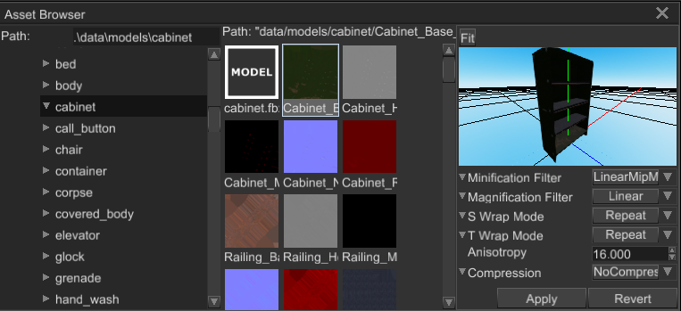
There are three main areas in it:
- Left directory tree - shows all directories starting from project root. It does not show any files, this is for what the center section is.
- Center asset previewer - shows all assets from selected directory. The path at the top of the section shows asset path.
- Right asset import options inspector - it shows import properties of selected asset.
Typical workflow could look like this:
- Select desired directory from the left tree
- Select desired asset in the center previewer
- Edit import properties of selected asset and click "Apply" button to save import options and re-load the asset with new options.
Check next chapters to learn how to manage specific asset types and what their import does what.
API Docs
Please read API docs here
Model resources
Supported formats
Fyrox supports these file formats for 3D models:
- FBX - standard game development industry 3D model exchange format
- RGS - native scenes format produced by Fyroxed (the editor)
The list could be extended in the future.
Instantiation
Model must be instantiated in your scene, there is no other way of using it. To do this, you can either use drag'n'drop from Asset Browser in the editor or instantiate the model dynamically from code:
#![allow(unused)] fn main() { extern crate fyrox; use fyrox::{ core::pool::Handle, asset::manager::ResourceManager, resource::model::{Model, ModelResourceExtension}, scene::{node::Node, Scene}, }; use std::path::Path; async fn instantiate_model( path: &Path, resource_manager: ResourceManager, scene: &mut Scene, ) -> Handle<Node> { // Load model first. Alternatively, you can store resource handle somewhere and use it for // instantiation. let model = resource_manager.request::<Model, _>(path).await.unwrap(); model.instantiate(scene) } }
Material import
The engine tries to import materials as close as possible to originals in the model, however it is not always possible because some 3D modelling software could use different shading models. By default, the engine tries to convert everything to PBR materials, so if you have a 3D model with a special material made for cartoon shading, the engine will still import it as PBR material (with lots of missing textures of course). You should take this into account when working with something other than PBR materials.
In cases when your 3D model have some weird materials, you should create appropriate materials and shaders manually, the engine is not a magic tool, it has some defaults that do not cover all possible cases.
It is also possible to specify how to resolve textures while loading a 3D model, select your model in the Asset Browser
and there will be import options right below the model preview:

It is also possible to specify such options manually. To do that, you need to create import options file with the following content near your 3D model (this is what the editor does for you):
(
material_search_options: RecursiveUp
)
The file must have the .options additional extension. For example, if you have a foo.fbx model, the options
file should have foo.fbx.options name. Even if it is possible to modify it by hand, it is strongly advised to use
the editor to edit import options, because it reduces the chance of messing up.
Tips for Blender
Blender's FBX exporter has exporting scale properties usually set to 100%, this may lead to incorrect scale
of your model in the engine. It will have (100.0, 100.0, 100.0) scale which is very huge. To fix that, set
the scale in the exporter to 0.01.
Tips for 3Ds Max
Latest versions of 3Ds max have node-based material editor which creates some "junk" nodes which may mess up material import. To prevent any issues with that, you should clean all assignments to material slots to use maps directly.
Textures
Texture is an image that is used to fill faces to add details to them. In most cases textures are just 2D images, however there are some exclusions to that - for example cube maps, that may be used for environment mapping. Fyrox supports 1D, 2D, 3D and Cube textures.
Supported formats
To load images and decode them, Fyrox uses image and ddsfile crates. Here is the list of supported formats: png, tga, bmp, dds, jpg, gif, tiff, dds.
Compressed textures
Fyrox supports most commonly used formats of compressed textures: DXT1, DXT3, DXT5. Such textures can be loaded
only from DDS files. You can specify on-demand texture compression in import options (see below), it works for every
texture format except DDS. It is meant to be used when you don't want to bother with DDS format, there are two
compression methods:
Quality- has 4:1 compression ratio, supports full 8-bit alpha channel. Textures with gradients will most likely suffer from noticeable banding.Speed- has lower quality compared toQualitymode, but it has 8:1 compression ratio for texture without alpha channel and 6:1 with alpha channel. Keep in mind, that alpha channel in this mode supports only 1 bit - it is either enabled or not.
Compressed textures usually does not support color gradient very well, if you have a texture with a lot of colors and gradients, then you'll most likely get compressed texture with lots of graphical artifacts such as banding.
It is also worth mentioning, that you should never use compression with normal maps, it can significantly distort normals because normal maps usually have lots of color gradients.
Import options
It is possible to define custom import options. Using import options you could set desired compression quality, filtering, wrapping, etc. Import options should be defined using Asset Browser in the editor:

It is also possible to define import options manually in a separate file with the same name as the source
texture, but with additional extension options, this is what the editor does for you. For example, you have a
foo.jpg texture, a file with import options should be called foo.jpg.options. Its content may look something like
this:
(
minification_filter: Linear,
magnification_filter: Linear,
s_wrap_mode: Repeat,
t_wrap_mode: ClampToEdge,
anisotropy: 8.0,
compression: NoCompression,
)
Even if it is possible to modify it by hand, it is strongly advised to use the editor to edit import options, because it reduces chances of messing up.
Render target
Texture can be used as a render target to render a scene in it. To do this you should use new_render_target method and
pass its result to scene's render target property. Renderer will automatically provide you info about metrics of
texture, but it won't give you access to pixels of render target.
Sound (WIP)
Curve (WIP)
Custom Resources
In Fyrox, you can create your own, custom resource type that can be embedded in the standard resource management pipeline. It could be useful to access specific data using engine's resource manager. Custom resources has a few major advantages over manual resource management via direct files access:
- Since Fyrox resource system is asynchronous, your resource can be loaded in separate worker thread which speeds up loading (since it may run on a separate CPU core).
- You can access your resources from the Asset Browser and assign their handles to scripts directly from the editor.
- File access for resource management has an abstraction, that unifies the access over all supported platforms. This
means that you don't need to use
fetchAPI directly, if you're targeting WebAssembly platform, or useAssetManageron Android.
To create a custom resource, you need to do three major steps:
- Define your resource structure with all required traits implemented.
- Add a custom resource loader, that will be used by the resource manager to load your custom resource.
- Register the resource loader in the resource manager.
See the code snippet in the next section as a guide.
Example
Custom resource is just an ordinary struct with some data. It must implement Debug, Reflect, Visit, ResourceData
traits. Also, it must contain at least path to external file with the content. Here's the simplest custom resource, that
contains some string data.
#![allow(unused)] fn main() { extern crate fyrox; use fyrox::{ asset::{ event::ResourceEventBroadcaster, loader::{BoxedLoaderFuture, ResourceLoader}, untyped::UntypedResource, ResourceData, }, core::{ io::{self}, reflect::prelude::*, uuid::{uuid, Uuid}, visitor::prelude::*, TypeUuidProvider, }, }; use std::{ any::Any, borrow::Cow, path::{Path, PathBuf}, }; #[derive(Debug, Visit, Reflect)] struct CustomResource { // You resource must store the path. path: PathBuf, some_data: String, } impl TypeUuidProvider for CustomResource { // Every resource must provide a unique identifier, that is used for dynamic type // casting, serialization, etc. fn type_uuid() -> Uuid { uuid!("15551157-651b-4f1d-a5fb-6874fbfe8637") } } impl ResourceData for CustomResource { fn path(&self) -> Cow<Path> { Cow::Borrowed(&self.path) } fn set_path(&mut self, path: PathBuf) { self.path = path; } fn as_any(&self) -> &dyn Any { self } fn as_any_mut(&mut self) -> &mut dyn Any { self } fn type_uuid(&self) -> Uuid { <Self as TypeUuidProvider>::type_uuid() } } struct CustomResourceLoader; impl ResourceLoader for CustomResourceLoader { fn extensions(&self) -> &[&str] { // An array of extensitions, supported by this loader. There could be any number of extensions // since sometimes multiple extensions map to a single resource (for instance, jpg, png, bmp, are // all images). &["my_resource"] } fn into_any(self: Box<Self>) -> Box<dyn Any> { self } fn as_any(&self) -> &dyn Any { self } fn as_any_mut(&mut self) -> &mut dyn Any { self } fn load( &self, resource: UntypedResource, event_broadcaster: ResourceEventBroadcaster, reload: bool, ) -> BoxedLoaderFuture { Box::pin(async move { let path = resource.path(); match io::load_file(&path).await { Ok(content) => { let my_resource = CustomResource { path, some_data: String::from_utf8(content).unwrap(), }; resource.commit_ok(my_resource); // Notify potential subscribers that the resource was loader. event_broadcaster.broadcast_loaded_or_reloaded(resource, reload); } Err(err) => { resource.commit_error(path, err); } } }) } } }
Keep in mind, that you must provide unique UUID for every resource type that you're creating. Otherwise, using
existing id multiple times will cause incorrect serialization and type casting. The next step is to register the new
resource in the resource manager. This can be done by: resource_manager.state().loaders.set::<CustomResourceLoader>().
After doing so, any attempt to load a resource with my_resource extension will call the load method of your
resource loader. See custom_loader for
runnable example.
User Interface
Fyrox features an extremely powerful and flexible node-based user interface system. Power and flexibility comes with a certain price: it has a steep learning curve. This chapter will cover user interface usage in the engine, explain basic concepts, provide information about most commonly used widgets, and so on.
Basic concepts
This chapter should help you understand basic concepts lying in the foundation of the GUI in the engine.
Stateful
*Stateful UI means that we can create and destroy widgets when we need to, it is the opposite approach of immediate-mode or stateless UIs when you don't have long-lasting state for your widgets (usually stateless UI hold its state only for one or two frames).
Stateful UI is much more powerful and flexible, it allows you to have complex layout system without having to create hacks to create complex layout as you'd do in immediate-mode UIs. It is also much faster in terms of performance.
Stateful UI is a must for complex user interfaces that requires rich layout and high performance. I'm not telling that you can't do it in immediate mode UI, you can, but using tons of hacks. See Layout section for more info.
Node-based architecture
Every user interface could be represented as a set of small blocks that have hierarchical bonding between each other. For example a button could be represented using two parts: a background and a foreground. Usually the background is just a simple rectangle (either a vector or bitmap), and a foreground is a text. The text (the foreground widget) is a child object of the rectangle (the background widget). These two widgets forms another, more complex widget that we call button. Graphically it will look like this:

On the right side of the image we can see the generic button and on the left side, we can see its hierarchical structure. Such approach allows us to modify the look of the button as we wish, we can create a button with image background, or with any vector image, or even other widgets. The foreground can be anything too, it can also contain its own complex hierarchy, like a pair of an icon with a text and so on.
Composition
Every widget in the engine uses composition to build more complex widgets. All widgets (and respective builders) contains
Widget instance inside, it provides basic functionality the widget such as layout information, hierarchy, default
foreground and background brushes (their usage depends on derived widget), render and layout transform and so on.
Component Querying
Many widgets provide component querying functionality - you can get an immutable reference to inner component by its type. It is used instead of type casting in many places. Component querying is much more flexible compared to direct type casting. For example, you may want to build a custom Tree widget, you want your CustomTree to inherit all the functionality from the Tree, but add something new. The Tree widget can manage its children subtrees, but it needs to somehow get required data from subtree. Direct type casting would fail in this case, because now you have something like this:
#![allow(unused)] fn main() { extern crate fyrox; use fyrox::gui::tree::Tree; struct CustomTree { tree: Tree, my_data: u32 } }
On other hand, component querying will work fine, because you can query inner component (Tree in our case). Please note that this has nothing similar with ECS and stuff, it is made to circumvent Rust's lack of inheritance.
Message passing
The engine uses message passing mechanism for any UI logic. What does that mean? Let's see at the button from the previous section and imagine we want to change its text. To do that we need to explicitly "tell" the button's text widget to change its content to something new. This is done by sending a message to the widget.
There is no classic callbacks to handle various types of messages, which may come from widgets. Instead, you should write
your own message dispatcher where you'll handle all messages. Why so? At first - decoupling, in this case business logic
is decoupled from the UI. You just receive messages one-by-one and do specific logic. The next reason is that any
callback would require context capturing which could be somewhat restrictive - since you need to share context with the
UI, it would force you to wrap it in Rc<RefCell<..>>/Arc<Mutex<..>>.
Message dispatcher is very easy to write, all you need to do is to handle UI messages in Plugin::on_ui_message method:
#![allow(unused)] fn main() { extern crate fyrox; use fyrox::{ core::{pool::Handle}, event_loop::ControlFlow, gui::{button::ButtonMessage, message::UiMessage, UiNode}, plugin::{Plugin, PluginContext}, }; struct MyPlugin { button: Handle<UiNode>, } impl Plugin for MyPlugin { fn on_ui_message( &mut self, _context: &mut PluginContext, message: &UiMessage, _control_flow: &mut ControlFlow, ) { if let Some(ButtonMessage::Click) = message.data() { if message.destination() == self.button { println!("The button was clicked!"); } } } } }
As you can see, all you need to do is to check type of incoming message and message destination, which is a node handle from which a message was come from. Then you do any actions you want.
Message routing strategies
Message passing mechanism works in pair with various routing strategies that allows you to define how the message will "travel" across the tree of nodes.
- Bubble - a message starts its way from a widget and goes up on hierarchy until it reaches root node of hierarchy. Nodes that lies outside that path won't receive the message. This is the most important message routing strategy, that is used for every node by default.
- Direct - a message passed directly to every node that are capable to handle it. There is actual routing in this case. Direct routing is used in rare cases when you need to catch a message outside its normal "bubble" route.
Layout
The engine uses very complex, yet powerful layout system that allows you to build complex user interfaces with complex layout. Layout pass has two recursive sub-passes:
- Measurement - the sub-pass is used to fetch the desired size of each node in hierarchy.
- Arrangement - the sub-pass is used to set final position and size of each node in hierarchy.
Such split is required because we need to know desired size of each node in hierarchy before we can actually do an arrangement.
General rules
This chapter covers general rules that will help you to write code that will be easy to understand.
Fluent syntax
Widget builders supports fluent syntax, this means that you can create your widget in series of nested call of other widget builders. In code, it looks something like this:
#![allow(unused)] fn main() { extern crate fyrox; use fyrox::{ core::pool::Handle, resource::texture::Texture, asset::manager::ResourceManager, gui::{ button::ButtonBuilder, image::ImageBuilder, widget::WidgetBuilder, UiNode, UserInterface, }, utils::into_gui_texture, }; fn create_fancy_button(ui: &mut UserInterface, resource_manager: ResourceManager) -> Handle<UiNode> { let ctx = &mut ui.build_ctx(); ButtonBuilder::new(WidgetBuilder::new()) .with_back( ImageBuilder::new(WidgetBuilder::new()) .with_texture(into_gui_texture( resource_manager.request::<Texture, _>("path/to/your/texture"), )) .build(ctx), ) .with_text("Click me!") .build(ctx) } }
This code snippet creates a button with an image and a text. Actually it creates three widgets, that forms
complex hierarchy. The topmost widget in hierarchy is the Button widget itself, it has two children widgets:
background image and a text. Background image is set explicitly by calling image widget builder with specific
texture. The text is created implicitly, the button builder creates Text widget for you and attaches it to
the button. The structure of the button can contain any amount of nodes, for example you can create a button
that contains text with some icon. To do that, replace .with_text("My Button") with this:
#![allow(unused)] fn main() { extern crate fyrox; use fyrox::{ core::pool::Handle, asset::manager::ResourceManager, resource::texture::Texture, gui::{ button::ButtonBuilder, grid::{Column, GridBuilder, Row}, image::ImageBuilder, text::TextBuilder, widget::WidgetBuilder, UiNode, UserInterface, }, utils::into_gui_texture, }; fn create_fancy_button( ui: &mut UserInterface, resource_manager: ResourceManager, ) -> Handle<UiNode> { let ctx = &mut ui.build_ctx(); ButtonBuilder::new(WidgetBuilder::new()) .with_content( GridBuilder::new( WidgetBuilder::new() .with_child( ImageBuilder::new(WidgetBuilder::new().on_column(0)) .with_texture(into_gui_texture( resource_manager.request::<Texture, _>("your_icon"), )) .build(ctx), ) .with_child( TextBuilder::new(WidgetBuilder::new().on_column(1)) .with_text("My Button") .build(ctx), ), ) .add_row(Row::stretch()) .add_column(Column::auto()) .add_column(Column::stretch()) .build(ctx), ) .build(ctx) } }
Quite often you need to store a handle to a widget in a variable, there is one neat trick to do that preserving the fluent syntax:
#![allow(unused)] fn main() { extern crate fyrox; use fyrox::{ core::pool::Handle, asset::manager::ResourceManager, resource::texture::Texture, gui::{ button::ButtonBuilder, image::ImageBuilder, widget::WidgetBuilder, UiNode, UserInterface, }, utils::into_gui_texture, }; fn create_fancy_button(ui: &mut UserInterface, resource_manager: ResourceManager) -> Handle<UiNode> { let ctx = &mut ui.build_ctx(); let image; ButtonBuilder::new(WidgetBuilder::new()) .with_back({ image = ImageBuilder::new(WidgetBuilder::new()) .with_texture(into_gui_texture( resource_manager.request::<Texture, _>("path/to/your/texture"), )) .build(ctx); image }) .with_text("Click me!") .build(ctx) } // image now contains a handle of the Image widget }
Should I create a custom widget or use composition of other widgets?
The answer depends on the use case, but the general rules here is quite simple:
- If your widget exist in a single instance, then there is no need to create a custom widget for it.
- If you need to create multiple instances of your widget, and each widget will carry some specific data, then you definitely need a custom widget.
Custom widgets have some limitations that could be limiting, one of them is that custom widgets do not have access to your code, since they're "living" inside UI and know nothing about the "environment" where they're being used.
Font
Font is used to store graphical representation of characters. The engine supports TTF and OTF fonts, you can load pretty much any font from the internet and use it as is.
Create New Font
There are two ways to create font instance - either load font from file, or load it directly from memory.
Loading Font From File
The easiest way to create a font is load it from file:
#![allow(unused)] fn main() { extern crate fyrox; use fyrox::gui::ttf::Font; async fn load_font_from_file() -> Font { let character_set = Font::default_char_set(); // ASCII character set. Font::from_file("path/to/your/font.ttf", 20.0, character_set) .await .unwrap() } }
Please note, that this function is async due to the fact that it supports fetch API on WebAssembly, which does
remote file fetching which is asynchronous by its nature. If you don't plan to support WebAssembly and don't want to
use async, then the next section is for you.
Creating Font From Memory
This option could be useful, if you already have your font loaded into memory. Loading font from data buffer is very simple:
#![allow(unused)] fn main() { extern crate fyrox; use fyrox::gui::ttf::Font; fn load_font_from_memory(data: &[u8]) -> Font { let character_set = Font::default_char_set(); // ASCII character set. Font::from_memory(data, 20.0, character_set).unwrap() } }
data input parameter could be a buffer that contains any valid TTF/OTF font. For example, you can load TTF file into
a data buffer and create font using the data buffer:
#![allow(unused)] fn main() { extern crate fyrox; use fyrox::gui::ttf::Font; use std::{fs::File, io::Read}; fn load_font_from_memory() -> Font { let character_set = Font::default_char_set(); // ASCII character set. let mut data = Vec::new(); File::open("path/to/your/font.ttf") .unwrap() .read_to_end(&mut data) .unwrap(); Font::from_memory(data, 20.0, character_set).unwrap() } }
Default Font
User interface provides its own font of fixed size, it is enough to cover most of the use cases, but the default font includes only ASCII characters, if you need extended character set, you can replace default font using the following code snippet:
#![allow(unused)] fn main() { extern crate fyrox; use fyrox::gui::{ttf::Font, UserInterface}; async fn set_default_font(ui: &mut UserInterface) { // Select character set. let character_set = Font::korean_char_set(); // Load font. let new_font = Font::from_file("path/to/your/font.ttf", 20.0, character_set) .await .unwrap(); // Set as default font. ui.default_font.set(new_font) } }
How to Change Font Size
Unfortunately, you need to create new font instance for that, there is a tracking issue for that. Use any method from above paragraphs.
Character Set
Current font implementation requires you to define fixed character set while creating an instance. What is character set and how it can be extended? Character set is just a set of ranges from Unicode, for example here's korean character set:
#![allow(unused)] fn main() { use std::ops::Range; pub fn korean_char_set() -> &'static [Range<u32>] { &[ // Basic Latin + Latin Supplement 0x0020..0x00FF, // Korean alphabets 0x3131..0x3163, // Korean characters 0xAC00..0xD7A3, // Invalid 0xFFFD..0xFFFD, ] } }
You can create custom character set yourself by defining desired ranges from Unicode.
Theme
The engine has an ability to customize the look of widgets, however it is not centralized, and has to be done
per widget. Check Theme section of each widget.
Widgets
The subsections of this chapter explains how to use every widget built into Fyrox. The widgets in the table of contents to the left are ordered in alphebetical order. However, below we will order them by primary function to help introduce them to new users.
Containers
The Container widgets primary purpose is to contain other widgets. They are mostly used as a tool to layout the UI in visually different ways.
- Stack panel: The Stack Panel arranges widgets in a linear fashion, either vertically or horizontally depending on how it's setup.
- Wrap Panel: The Wrap Panel arranges widgets in a linear fashion but if it overflows the widgets are continued adjacent to the first line. Can arrange widgets either vertically or horizontally depending on how it's setup.
- Grid: The Grid arranges widgets into rows and columns with given size constraints.
- Canvas: The Canvas arranges widgets with pixel perfect precision.
- Window: The Window holds other widgets in a panel that can be configured at setup to be move-able, expanded and contracted via user input, exited, and have a displayed label. The window has a title bar to assist with these features.
- Message Box: The Message Box is a Window that has been streamlined to show standard confirmation/information dialogues, for example, closing a document with unsaved changes. It has a title, some text, and a fixed set of buttons (Yes, No, Cancel in different combinations).
- Menu: The Menu is a root container for Menu Items, an example could be a menu strip with File, Edit, View, etc items.
- Popup: The Popup is a panel that locks input to its content while it is open. A simple example of it could be a context menu.
- Scroll Viewer: The ScrollViewer is a wrapper for Scroll Panel that adds two scroll bars to it.
- Scroll Panel: The Scroll Panel is a panel that allows you apply some offset to children widgets. It is used to create "scrollable" area in conjunction with the Scroll Viewer.
- Expander: The Expander handles hiding and showing multiple panels of widgets in an accordian style UI element. Multiple panels can be shown or hidden at any time based on user input.
- Tab Control: The Tab Control handles hiding several panels of widgets, only showing the one that the user has selected.
- Docking Manager: The Docking manager allows you to dock windows and hold them in-place.
- Tree: The Tree allows you to create views for hierarchical data.
Visual
The Visual widgets primary purpose is to provide the user feedback generally without the user directly interacting with them.
- Text: The Text widget is used to display a string to the user.
- Image: The Image widget is used to display a pixel image to the user.
- Vector Image: The Vector Image is used to render vector instructions as a graphical element.
- Rect: The Rect allows you to specify numeric values for X, Y, Width, and Height of a rectangle.
- Progress Bar: The Progress Bar shows a bar whoes fill state can be adjusted to indicate visually how full something is, for example how close to 100% is a loading process.
- Decorator: The Decorator is used to style any widget. It has support for different styles depending on various events like mouse hover or click.
- Border: The Border widget is used in conjunction with the Decorator widget to provide configurable boarders to any widget for styling purposes.
Controls
Control widgets primary purpose is to provide users with intractable UI elements to control some aspect of the program.
- Button: The Button provides a press-able control that can contain other UI elements, for example a Text or Image Widget.
- Check Box: The Check Box is a toggle-able control that can contain other UI elements, for example a Text or Image Widget.
- Text Box: The Text Box is a control that allows the editing of text.
- Scroll Bar: The Scroll Bar provides a scroll bar like control that can be used on it's own as a data input or with certain other widgets to provide content scrolling capabilities.
- Numeric Field: The Numeric Field provides the ability to adjust a number via increment and decrement buttons or direct input. The number can be constrained to remain inside a specific range or have a specific step.
- Range: The Range allows the user to edit a numeric range - specify its begin and end values.
- List View: The List View provides a control where users can select from a list of items.
- Dropdown List: The Drop-down List is a control which shows the currently selected item and provides a drop-down list to select an item.
- File Browser: The File Browser is a tree view of the file system allowing the user to select a file or folder.
- Curve Editor: The CurveEditor allows editing parametric curves - adding points, and setting up transitions (constant, linear, cubic) between them.
- Inspector: The Inspector automatically creates and handles the input of UI elements based on a populated Inspector Context given to it allowing the user to adjust values of a variety of models without manually creating UI's for each type.
Button
Simple button with text
To create a simple button with text you should do something like this:
#![allow(unused)] fn main() { extern crate fyrox; use fyrox::{ core::pool::Handle, gui::{button::ButtonBuilder, widget::WidgetBuilder, UiNode, UserInterface}, }; fn create_button(ui: &mut UserInterface) -> Handle<UiNode> { ButtonBuilder::new(WidgetBuilder::new()) .with_text("Click me!") .build(&mut ui.build_ctx()) } }
How to create a button using custom dimensions (100x100) and custom text alignment (Vertical centered and Horizontal right aligned):
#![allow(unused)] fn main() { extern crate fyrox; use fyrox::{ core::pool::Handle, gui::{button::ButtonBuilder, widget::WidgetBuilder, UiNode, UserInterface, HorizontalAlignment, VerticalAlignment, text::TextBuilder}, }; fn create_button(ui: &mut UserInterface) -> Handle<UiNode> { ButtonBuilder::new( WidgetBuilder::new() .with_width(100.0) .with_height(100.0), ) .with_content( TextBuilder::new(WidgetBuilder::new()) .with_text("Click me!") .with_horizontal_text_alignment(HorizontalAlignment::Right) .with_vertical_text_alignment(VerticalAlignment::Center) .build(&mut ui.build_ctx()), ) .build(&mut ui.build_ctx()) } }
A button with image
More fancy-looking button with an image as a background could be created using this code snippet:
#![allow(unused)] fn main() { extern crate fyrox; use fyrox::{ core::pool::Handle, resource::texture::Texture, asset::manager::ResourceManager, gui::{ button::ButtonBuilder, image::ImageBuilder, widget::WidgetBuilder, UiNode, UserInterface, }, utils::into_gui_texture, }; fn create_fancy_button(ui: &mut UserInterface, resource_manager: ResourceManager) -> Handle<UiNode> { let ctx = &mut ui.build_ctx(); ButtonBuilder::new(WidgetBuilder::new()) .with_back( ImageBuilder::new(WidgetBuilder::new()) .with_texture(into_gui_texture( resource_manager.request::<Texture, _>("path/to/your/texture"), )) .build(ctx), ) .with_text("Click me!") .build(ctx) } }
Message handling
When clicked, a button sends a ButtonMessage::Click message, you can catch it in your code and do something
useful:
#![allow(unused)] fn main() { extern crate fyrox; use fyrox::{ core::pool::Handle, event_loop::ControlFlow, gui::{button::ButtonMessage, message::UiMessage, UiNode}, plugin::PluginContext, }; struct Game { button: Handle<UiNode>, } impl Game { fn on_ui_message( &mut self, context: &mut PluginContext, message: &UiMessage, control_flow: &mut ControlFlow, ) { if let Some(ButtonMessage::Click) = message.data() { if message.destination() == self.button { // // Insert your code clicking handling code here. // } } } } }
Using a button to exit the game
This example shows how to create a button that will close your game.
#![allow(unused)] fn main() { extern crate fyrox; use fyrox::{ core::pool::Handle, event_loop::ControlFlow, gui::{ button::{ButtonBuilder, ButtonMessage}, message::UiMessage, text::TextBuilder, widget::WidgetBuilder, UiNode, UserInterface, }, plugin::PluginContext, }; struct Game { quit_button_handle: Handle<UiNode>, } fn create_button(ui: &mut UserInterface) -> Handle<UiNode> { ButtonBuilder::new(WidgetBuilder::new()) .with_content( TextBuilder::new(WidgetBuilder::new()) .with_text("Quit") .build(&mut ui.build_ctx()), ) .build(&mut ui.build_ctx()) } impl Game { fn new(ctx: PluginContext) -> Self { Self { quit_button_handle: create_button(ctx.user_interface), } } fn on_ui_message( &mut self, context: &mut PluginContext, message: &UiMessage, control_flow: &mut ControlFlow, ) { if let Some(ButtonMessage::Click) = message.data() { if message.destination() == self.quit_button_handle { *control_flow = ControlFlow::Exit; } } } } }
Border
The Border widget provides a stylized, static border around its child widget. Below is an example of creating a 1 pixel thick border around a button widget:
#![allow(unused)] fn main() { extern crate fyrox; use fyrox::gui::{ UserInterface, widget::WidgetBuilder, border::BorderBuilder, Thickness, text::TextBuilder, }; fn create_border_with_button(ui: &mut UserInterface) { BorderBuilder::new( WidgetBuilder::new() .with_child( TextBuilder::new(WidgetBuilder::new()) .with_text("I'm boxed in!") .build(&mut ui.build_ctx()) ) ) //You can also use Thickness::uniform(1.0) .with_stroke_thickness(Thickness {left: 1.0, right: 1.0, top: 1.0, bottom: 1.0}) .build(&mut ui.build_ctx()); } }
As with other UI elements, we create the border using the BorderBuilder helper struct. The widget that should have a border around it is added as a child of the base WidgetBuilder, and the border thickness can be set by providing a Thickness struct to the BorderBuilder's with_stroke_thickness function. This means you can set different thicknesses for each edge of the border.
You can style the border by creating a Brush and setting the border's base WidgetBuilder's foreground or background. The foreground will set the style of the boarder itself, while setting the background will color the whole area within the border. Below is an example of a blue border and a red background with white text inside.
#![allow(unused)] fn main() { extern crate fyrox; use fyrox::gui::{ brush::Brush, core::color::Color, widget::WidgetBuilder, text::TextBuilder, border::BorderBuilder, UserInterface, Thickness, }; let mut ui = UserInterface::new(Default::default()); BorderBuilder::new( WidgetBuilder::new() .with_foreground(Brush::Solid(Color::opaque(0, 0, 200))) .with_background(Brush::Solid(Color::opaque(200, 0, 0))) .with_child( TextBuilder::new(WidgetBuilder::new()) .with_text("I'm boxed in Blue and backed in Red!") .build(&mut ui.build_ctx()) ) ) .with_stroke_thickness(Thickness {left: 2.0, right: 2.0, top: 2.0, bottom: 2.0}) .build(&mut ui.build_ctx()); }
Canvas
Canvas is a panel widget that allows you to explicitly set coordinates for children widgets. It is useful when you need to manually control position of children widgets. Root UI node is canvas, so any widgets that are not attached to any other widgets can have explicit position.
How to create
Use CanvasBuilder to create Canvas instance:
#![allow(unused)] fn main() { extern crate fyrox; use fyrox::{ core::pool::Handle, gui::{canvas::CanvasBuilder, widget::WidgetBuilder, BuildContext, UiNode}, }; fn create_canvas(ctx: &mut BuildContext) -> Handle<UiNode> { CanvasBuilder::new(WidgetBuilder::new()).build(ctx) } }
Canvas does not have any specific options, so its creation is probably simplest of all widgets.
How to position children nodes
Use .with_desired_position on children widgets to set specific position:
#![allow(unused)] fn main() { extern crate fyrox; use fyrox::{ core::{algebra::Vector2, pool::Handle}, gui::{ button::ButtonBuilder, canvas::CanvasBuilder, text::TextBuilder, widget::WidgetBuilder, BuildContext, UiNode, }, }; fn create_canvas_with_children_widgets(ctx: &mut BuildContext) -> Handle<UiNode> { CanvasBuilder::new( WidgetBuilder::new() .with_child( TextBuilder::new( WidgetBuilder::new().with_desired_position(Vector2::new(100.0, 200.0)), ) .with_text("Simple Text at (100.0, 200.0)") .build(ctx), ) .with_child( ButtonBuilder::new( WidgetBuilder::new().with_desired_position(Vector2::new(200.0, 100.0)), ) .with_text("Simple Button at (200.0, 100.0)") .build(ctx), ), ) .build(ctx) } }
The code snippet will create a canvas with a text widget located at (100.0, 200.0) relative to top-left corner of the canvas and a button located at (200.0, 100.0).
Tips
Canvas provides infinite bounds for children widgets, this means that children nodes will not be stretched, instead they'll shrink to fit their content. For example, a button with a text will take slightly bigger rectangle than the text bounds.
Check box
Checkbox is a UI widget that have three states - Checked, Unchecked and Undefined. In most cases it is used
only with two values which fits in bool type. Third, undefined, state is used for specific situations when your
data have such state.
How it looks
Checkbox in Checked state:

Checkbox in Unchecked state:

How to create
To create a checkbox you should do something like this:
#![allow(unused)] fn main() { extern crate fyrox; use fyrox::{ core::pool::Handle, gui::{check_box::CheckBoxBuilder, widget::WidgetBuilder, UiNode, UserInterface}, }; fn create_checkbox(ui: &mut UserInterface) -> Handle<UiNode> { CheckBoxBuilder::new(WidgetBuilder::new()) // A custom value can be set during initialization. .checked(Some(true)) .build(&mut ui.build_ctx()) } }
The above code will create a checkbox without any textual info, but usually checkboxes have some useful info
near them. To create such checkbox, you could use .with_content(..) method which accepts any widget handle.
For checkbox with text, you could use TextBuilder to create textual content, for checkbox with text - use
ImageBuilder. As already said, you're free to use any widget handle there.
Here's an example of checkbox with textual content.
#![allow(unused)] fn main() { extern crate fyrox; use fyrox::{ core::pool::Handle, gui::{ check_box::CheckBoxBuilder, text::TextBuilder, widget::WidgetBuilder, UiNode, UserInterface, }, }; fn create_checkbox(ui: &mut UserInterface) -> Handle<UiNode> { let ctx = &mut ui.build_ctx(); CheckBoxBuilder::new(WidgetBuilder::new()) // A custom value can be set during initialization. .checked(Some(true)) .with_content( TextBuilder::new(WidgetBuilder::new()) .with_text("This is a checkbox") .build(ctx), ) .build(ctx) } }
Message handling
Checkboxes are not static widget and have multiple states. To handle a message from a checkbox, you need to handle
a CheckBoxMessage::Check message. To do so, you can do something like this:
#![allow(unused)] fn main() { extern crate fyrox; use fyrox::{ core::pool::Handle, engine::Engine, event_loop::ControlFlow, gui::{check_box::CheckBoxMessage, message::UiMessage, UiNode}, plugin::PluginContext, }; struct Foo { checkbox: Handle<UiNode>, } impl Foo { fn on_ui_message( &mut self, context: &mut PluginContext, message: &UiMessage, control_flow: &mut ControlFlow, ) { if let Some(CheckBoxMessage::Check(value)) = message.data() { if message.destination() == self.checkbox { // // Insert your clicking handling code here. // } } } } }
Keep in mind that checkbox (as any other widget) generates WidgetMessage instances. You can catch them too and
do a custom handling if you need.
Theme
Checkbox can be fully customized to have any look you want, there are few methods that will help you with customization:
.with_content(..)- sets the content that will be shown near the checkbox..with_check_mark(..)- sets the widget that will be used as checked icon..with_uncheck_mark(..)- sets the widget that will be used as unchecked icon..with_undefined_mark(..)- sets the widget that will be used as undefined icon.
Curve editor (WIP)
Decorator
A visual element that changes its appearance by listening specific events. It can have "pressed", "hover", "selected" or normal appearance:
Pressed- enables on mouse down message.Selected- whether decorator selected or not.Hovered- mouse is over the decorator.Normal- not selected, pressed or hovered.
This element is widely used to provide some generic visual behaviour for various widgets. For example, it used in buttons, tree items, dropdown list items, etc.; in other words - everywhere where a widget needs to give visual feedback the user.
Docking manager (WIP)
Docking manager allows you to dock windows and hold them in-place.
Docking manager can hold any types of UI elements, but dragging works only for windows.
Dropdown list (WIP)
Drop-down list. This is control which shows currently selected item and provides drop-down list to select its current item. It is build using composition with standard list view.
Expander (WIP)
Expander is a collapsible container for child widgets with a field that describes a content.
File browser (WIP)
FileBrowser widget is a simple file system tree, FileSelector is a window with FileBrowser and few buttons.
Grid
Grids are one of several methods to position multiple widgets in relation to each other. A Grid Widget, as the name implies, is able to position children widgets into a grid of specifically sized rows and columns.
Here is a simple example that positions several text widgets into a 2 by 2 grid:
#![allow(unused)] fn main() { extern crate fyrox; use fyrox::gui::{ UiNode, BuildContext, widget::WidgetBuilder, text::TextBuilder, grid::{GridBuilder, GridDimension}, }; fn create_text_grid(ctx: &mut BuildContext) -> fyrox::core::pool::Handle<UiNode> { GridBuilder::new( WidgetBuilder::new() .with_child( TextBuilder::new(WidgetBuilder::new()) .with_text("top left ") .build(ctx) ) .with_child( TextBuilder::new( WidgetBuilder::new() .on_column(1) ) .with_text(" top right") .build(ctx) ) .with_child( TextBuilder::new( WidgetBuilder::new() .on_row(1) ) .with_text("bottom left ") .build(ctx) ) .with_child( TextBuilder::new( WidgetBuilder::new() .on_row(1) .on_column(1) ) .with_text(" bottom right") .build(ctx) ) ) .add_row(GridDimension::auto()) .add_row(GridDimension::auto()) .add_column(GridDimension::auto()) .add_column(GridDimension::auto()) .build(ctx) } }
As with other UI widgets, Grids are created via the GridBuilder struct. Each widget whose position should be controlled by the Grid should be added as a child of the GridBuilder's base widget.
You then need to tell each child what row and column it belongs to via the on_column and on_row functions of their base widget. By default, all children will be placed into row 0, column 0.
After that you need to provide sizing constraints for each row and column to the GridBuilder by using the add_row and add_column functions while providing a GridDimension instance to the call. GridDimension can be constructed with the following functions:
- GridDimension::auto() - Sizes the row or column so it's just large enough to fit the largest child's size.
- GridDimension::stretch() - Stretches the row or column to fill the parent's available space, if multiple rows or columns have this option the size is evenly distributed between them.
- GridDimension::strict(f32) - Sets the row or column to be exactly the given value of pixels long. So a row will only be the given number of pixels wide, while a column will be that many pixels tall.
You can add any number of rows and columns to a grid widget, and each grid cell does not need to have a UI widget in it to be valid. For example you can add a column and set it to a specific size via strict to provide spacing between two other columns.
Image
Image widget is a rectangle with a texture, it is used draw custom bitmaps. The UI in the engine is vector-based, Image widget is the only way to draw a bitmap. Usage of the Image is very simple:
Usage
#![allow(unused)] fn main() { extern crate fyrox; use fyrox::{ core::pool::Handle, asset::manager::ResourceManager, resource::texture::Texture, gui::{image::ImageBuilder, widget::WidgetBuilder, BuildContext, UiNode}, utils::into_gui_texture, }; fn create_image(ctx: &mut BuildContext, resource_manager: ResourceManager) -> Handle<UiNode> { // You must explicitly set width and height of the image, otherwise it will collapse to a // point and you won't see anything. let width = 100.0; let height = 100.0; ImageBuilder::new(WidgetBuilder::new().with_width(width).with_height(height)) .with_texture(into_gui_texture( // Ask resource manager to load a texture. resource_manager.request::<Texture, _>("path/to/your/texture.png"), )) .build(ctx) } }
There are one common pitfall when using Image widget - you must explicitly set width and height of the image if it is not placed to some panel, that will stretch it automatically. In other words if you created an image with undefined width and height, then putting it to some container like Grid' cell will stretch the image to fit cell bounds.
Equal Size to Source
Sometimes you need your image to have equal size with the texture it uses, in this case you should fetch texture bounds first and then create an Image width these bounds:
#![allow(unused)] fn main() { extern crate fyrox; use fyrox::{ core::pool::Handle, asset::manager::ResourceManager, resource::texture::Texture, gui::{image::ImageBuilder, widget::WidgetBuilder, BuildContext, UiNode}, resource::texture::TextureKind, utils::into_gui_texture, }; async fn create_image( ctx: &mut BuildContext<'_>, resource_manager: ResourceManager, ) -> Handle<UiNode> { // Ask resource manager to load the texture and wait while it loads using `.await`. if let Ok(texture) = resource_manager .request::<Texture, _>("path/to/your/texture.png") .await { // A texture can be not only rectangular, so we must check that. let texture_kind = texture.data_ref().kind(); if let TextureKind::Rectangle { width, height } = texture_kind { return ImageBuilder::new( WidgetBuilder::new() .with_width(width as f32) .with_height(height as f32), ) .with_texture(into_gui_texture(texture)) .build(ctx); } } // Image wasn't created. Handle::NONE } }
This function can be used as-is whenever you need to create an Image that have same size as the source file. It is
marked as async because resource loading (texture is a resource) happens in separate thread and to get actual texture
data we must wait it. If you don't want to use async, then use any executor to block current thread and execute the
promise immediately:
#![allow(unused)] fn main() { extern crate fyrox; use fyrox::{ core::pool::Handle, asset::manager::ResourceManager, gui::{BuildContext, UiNode}, }; async fn create_image( ctx: &mut BuildContext<'_>, resource_manager: ResourceManager, ) -> Handle<UiNode> { Handle::NONE } fn create_image_sync( ctx: &mut BuildContext<'_>, resource_manager: ResourceManager, ) -> Handle<UiNode> { fyrox::core::futures::executor::block_on(create_image(ctx, resource_manager)) } }
Vertical Flip
In some rare cases you need to flip your source image before showing it, there is .with_flip option for that:
#![allow(unused)] fn main() { extern crate fyrox; use fyrox::{ core::pool::Handle, asset::manager::ResourceManager, resource::texture::Texture, gui::{image::ImageBuilder, widget::WidgetBuilder, BuildContext, UiNode}, utils::into_gui_texture, }; fn create_image(ctx: &mut BuildContext, resource_manager: ResourceManager) -> Handle<UiNode> { ImageBuilder::new(WidgetBuilder::new().with_width(100.0).with_height(100.0)) .with_flip(true) // Flips an image vertically .with_texture(into_gui_texture( resource_manager.request::<Texture, _>("path/to/your/texture.png"), )) .build(ctx) } }
There are few places where it can be helpful:
- You're using render target as a source texture for your Image instance, render targets are vertically flipped due to mismatch of coordinates of UI and graphics API. The UI has origin at left top corner, the graphics API - bottom left.
- Your source image is vertically mirrored.
Inspector (WIP)
List view (WIP)
Menu (WIP)
Message box (WIP)
NumericUpDown Widget
A widget that handles numbers of any machine type. Use this widget if you need to provide input field for a numeric type.
How to create
Use NumericUpDownBuilder to create a new instance of the NumericUpDown widget:
#![allow(unused)] fn main() { extern crate fyrox; use fyrox::{ core::pool::Handle, gui::{numeric::NumericUpDownBuilder, widget::WidgetBuilder, BuildContext, UiNode} }; fn create_numeric_widget(ctx: &mut BuildContext) -> Handle<UiNode> { NumericUpDownBuilder::new(WidgetBuilder::new()) .with_value(123.0f32) .build(ctx) } }
Keep in mind, that this widget is generic and can work with any numeric types. Sometimes you might get an "unknown type"
error message from the compiler (especially if your use 123.0 ambiguous numeric literals), in this case you need to
specify the type explicitly (NumericUpDownBuilder::<f32>::new...).
Limits
This widget supports lower and upper limits for the values. It can be specified by NumericUpDownBuilder::with_min_value
and NumericUpDownBuilder::with_max_value (or changed at runtime using NumericUpDownMessage::MinValue and NumericUpDownMessage::MaxValue
messages):
#![allow(unused)] fn main() { extern crate fyrox; use fyrox::{ core::pool::Handle, gui::{numeric::NumericUpDownBuilder, widget::WidgetBuilder, BuildContext, UiNode} }; fn create_numeric_widget(ctx: &mut BuildContext) -> Handle<UiNode> { NumericUpDownBuilder::new(WidgetBuilder::new()) .with_value(123.0f32) .with_min_value(42.0) .with_max_value(666.0) .build(ctx) } }
The default limits for min and max are NumericType::min_value and NumericType::max_value respectively.
Step
Since the value of the widget can be changed via up/down arrow buttons (also by dragging the cursor up or down on them), the widget provides a way to set the step of the value (for increment and decrement at the same time):
#![allow(unused)] fn main() { extern crate fyrox; use fyrox::{ core::pool::Handle, gui::{numeric::NumericUpDownBuilder, widget::WidgetBuilder, BuildContext, UiNode} }; fn create_numeric_widget(ctx: &mut BuildContext) -> Handle<UiNode> { NumericUpDownBuilder::new(WidgetBuilder::new()) .with_value(125.0f32) .with_step(5.0) .build(ctx) } }
The default value of the step is NumericType::one.
Precision
It is possible to specify visual rounding of the value up to desired decimal place (it does not change the way how
the actual value is rounded). For example, in some cases you might get irrational values such as 1/3 ~= 0.33333333,
but you interested in only first two decimal places. In this case you can set the precision to 2:
#![allow(unused)] fn main() { extern crate fyrox; use fyrox::{ core::pool::Handle, gui::{numeric::NumericUpDownBuilder, widget::WidgetBuilder, BuildContext, UiNode} }; fn create_numeric_widget(ctx: &mut BuildContext) -> Handle<UiNode> { NumericUpDownBuilder::new(WidgetBuilder::new()) .with_value(0.3333333f32) .with_precision(2) .build(ctx) } }
Popup (WIP)
Progress bar (WIP)
Range (WIP)
Rect editor (WIP)
Scroll bar (WIP)
Scroll panel (WIP)
Scroll viewer (WIP)
Stack Panel
Stack Panels are one of several methods to position multiple widgets in relation to each other. A Stack Panel Widget orders it's children widgets linerarly, aka in a stack of widgets, based on the order the widgets were added as children. So the first widget added will be at the top or left most position, while each additional widget will decend from top to bottom or continue from left most to right most. The below example code places 3 text widgets into a vertical stack:
#![allow(unused)] fn main() { extern crate fyrox; use fyrox::gui::{ UiNode, BuildContext, widget::WidgetBuilder, text::TextBuilder, stack_panel::StackPanelBuilder, }; fn create_stack_panel(ctx: &mut BuildContext) -> fyrox::core::pool::Handle<UiNode> { StackPanelBuilder::new( WidgetBuilder::new() .with_child( TextBuilder::new(WidgetBuilder::new()) .with_text("Top") .build(ctx) ) .with_child( TextBuilder::new(WidgetBuilder::new()) .with_text("Middle") .build(ctx) ) .with_child( TextBuilder::new(WidgetBuilder::new()) .with_text("Bottom") .build(ctx) ) ) .build(ctx) } }
As you can see from the example, creating a Stack Panel uses the standard method for creating widgets. Create a new StackPanelBuilder and provide it with a new WidgetBuilder. Adding widgets to the stack is done by adding childeren to the StackBuilder's WidgetBuilder.
Stack Panel Orientation
As has been indicated, Stack Panels can be oriented to order it's children either Vertical, from top to bottom, or Horizontal, Left most to right most. This is done using the StackPanelBuilder's with_orientation function providing it with a gui::Orientation enum value. By default all Stack Panel's are Vertical.
#![allow(unused)] fn main() { extern crate fyrox; use fyrox::gui::{ Orientation, BuildContext, widget::WidgetBuilder, stack_panel::StackPanelBuilder, }; fn build(ctx: &mut BuildContext) { StackPanelBuilder::new( WidgetBuilder::new() ) .with_orientation(Orientation::Horizontal) .build(ctx); } }
Tab Control
The Tab Control handles the visibility of several tabs, only showing a single tab that the user has selected via the tab header buttons. Each tab is defined via a Tab Definition struct which takes two widgets, one representing the tab header and the other representing the tab's contents.
The following example makes a 2 tab, Tab Control containing some simple text widgets:
#![allow(unused)] fn main() { extern crate fyrox; use fyrox::gui::{ BuildContext, widget::WidgetBuilder, text::TextBuilder, tab_control::{TabControlBuilder, TabDefinition}, }; fn create_tab_control(ctx: &mut BuildContext) { TabControlBuilder::new(WidgetBuilder::new()) .with_tab( TabDefinition{ header: TextBuilder::new(WidgetBuilder::new()) .with_text("First") .build(ctx), content: TextBuilder::new(WidgetBuilder::new()) .with_text("First tab's contents!") .build(ctx), } ) .with_tab( TabDefinition{ header: TextBuilder::new(WidgetBuilder::new()) .with_text("Second") .build(ctx), content: TextBuilder::new(WidgetBuilder::new()) .with_text("Second tab's contents!") .build(ctx), } ) .build(ctx); } }
As usual, we create the widget via the builder TabControlBuilder. Tabs are added via the with_tab function in the order you want them to appear, passing each call to the function a directly constructed TabDefinition struct. Tab headers will appear from left to right at the top with tab contents shown directly below the tabs. As usual, if no constraints are given to the base WidgetBuilder of the TabControlBuilder, then the tab content area will resize to fit whatever is in the current tab.
Each tab's content is made up of one widget, so to be useful you will want to use one of the container widgets to help arrange additional widgets within the tab.
Tab Header Styling
Notice that you can put any widget into the tab header, so if you want images to denote each tab you can add an Image widget to each header, and if you want an image and some text you can insert a stack panel with an image on top and text below it.
You will also likely want to style whatever widgets you add. As can be seen when running the code example above, the tab headers are scrunched when there are no margins provided to your text widgets. Simply add something like the below code example and you will get a decent look:
#![allow(unused)] fn main() { extern crate fyrox; use fyrox::gui::{ BuildContext, widget::WidgetBuilder, text::TextBuilder, Thickness, tab_control::{TabDefinition}, }; fn build(ctx: &mut BuildContext) { TabDefinition{ header: TextBuilder::new( WidgetBuilder::new() .with_margin(Thickness::uniform(4.0)) ) .with_text("First") .build(ctx), content: Default::default() }; } }
Text
Text is a simple widget that allows you to print text on screen. It has various options like word wrapping, text alignment, and so on.
How to create
An instance of the Text widget could be created like so:
#![allow(unused)] fn main() { extern crate fyrox; use fyrox::{ core::pool::Handle, gui::{text::TextBuilder, widget::WidgetBuilder, UiNode, UserInterface}, }; fn create_text(ui: &mut UserInterface, text: &str) -> Handle<UiNode> { TextBuilder::new(WidgetBuilder::new()) .with_text(text) .build(&mut ui.build_ctx()) } }
Text alignment and word wrapping
There are various text alignment options for both vertical and horizontal axes. Typical alignment values are:
Left, Center, Right for horizontal axis, and Top, Center, Bottom for vertical axis. An instance of
centered text could be created like so:
#![allow(unused)] fn main() { extern crate fyrox; use fyrox::{ core::pool::Handle, gui::{ text::TextBuilder, widget::WidgetBuilder, HorizontalAlignment, UiNode, UserInterface, VerticalAlignment, }, }; fn create_centered_text(ui: &mut UserInterface, text: &str) -> Handle<UiNode> { TextBuilder::new(WidgetBuilder::new()) .with_horizontal_text_alignment(HorizontalAlignment::Center) .with_vertical_text_alignment(VerticalAlignment::Center) .with_text(text) .build(&mut ui.build_ctx()) } }
Long text is usually needs to wrap on available bounds, there are three possible options for word wrapping:
NoWrap, Letter, Word. An instance of text with word-based wrapping could be created like so:
#![allow(unused)] fn main() { extern crate fyrox; use fyrox::{ core::pool::Handle, gui::{ formatted_text::WrapMode, text::TextBuilder, widget::WidgetBuilder, UiNode, UserInterface, }, }; fn create_text_with_word_wrap(ui: &mut UserInterface, text: &str) -> Handle<UiNode> { TextBuilder::new(WidgetBuilder::new()) .with_wrap(WrapMode::Word) .with_text(text) .build(&mut ui.build_ctx()) } }
Background
If you need to have a text with some background, you should use Border widget as a parent widget of your
text. Caveat: Widget::background is ignored for Text widget!
#![allow(unused)] fn main() { extern crate fyrox; use fyrox::{ core::{color::Color, pool::Handle}, gui::{ border::BorderBuilder, brush::Brush, text::TextBuilder, widget::WidgetBuilder, UiNode, UserInterface, }, }; fn create_text_with_background(ui: &mut UserInterface, text: &str) -> Handle<UiNode> { let text_widget = TextBuilder::new(WidgetBuilder::new().with_foreground(Brush::Solid(Color::RED))) .with_text(text) .build(&mut ui.build_ctx()); BorderBuilder::new( WidgetBuilder::new() .with_child(text_widget) // <-- Text is now a child of the border .with_background(Brush::Solid(Color::opaque(50, 50, 50))), ) .build(&mut ui.build_ctx()) } }
Keep in mind that now the text widget is a child widget of the border, so if you need to position the text, you should position the border, not the text.
Fonts and colors
To set a color of the text just use .with_foreground(..) of the WidgetBuilder while building the text instance:
#![allow(unused)] fn main() { extern crate fyrox; use fyrox::{ core::{color::Color, pool::Handle}, gui::{brush::Brush, text::TextBuilder, widget::WidgetBuilder, UiNode, UserInterface}, }; fn create_text(ui: &mut UserInterface, text: &str) -> Handle<UiNode> { // vvvvvvvvvvvvvvvvvvvvvvvvvvvvvvvvvvvvvvvvvvvvvvvvvvvvvvvvvvvvv TextBuilder::new(WidgetBuilder::new().with_foreground(Brush::Solid(Color::RED))) .with_text(text) .build(&mut ui.build_ctx()) } }
By default, text is created with default font, however it is possible to set any custom font:
#![allow(unused)] fn main() { extern crate fyrox; use fyrox::{ core::{futures::executor::block_on, pool::Handle}, gui::{ text::TextBuilder, ttf::{Font, SharedFont}, widget::WidgetBuilder, UiNode, UserInterface, }, }; fn load_font() -> SharedFont { // Choose desired character set, default is Basic Latin + Latin Supplement. // Character set is a set of ranges with Unicode code points. let character_set = Font::default_char_set(); // Normally `block_on` should be avoided. let font = block_on(Font::from_file( "path/to/your/font.ttf", 24.0, character_set, )) .unwrap(); SharedFont::new(font) } fn create_text(ui: &mut UserInterface, text: &str) -> Handle<UiNode> { TextBuilder::new(WidgetBuilder::new()) .with_font(load_font()) .with_text(text) .build(&mut ui.build_ctx()) } }
Please refer to Font chapter to learn more about fonts.
Font size
There is no way to change font size without changing the entire font used by Text, it is known issue and there is tracking issue for that. Check Font chapter to learn how to create fonts.
Shadows
Text widget supports shadows effect to add contrast to your text, which could be useful to make text readable independent on the background colors. This effect could be used for subtitles. Shadows are pretty easy to add, all you need to do is to enable them, setup desired thickness, offset and brush (solid color or gradient).
#![allow(unused)] fn main() { extern crate fyrox; use fyrox::{ core::{algebra::Vector2, color::Color, pool::Handle}, gui::{brush::Brush, text::TextBuilder, widget::WidgetBuilder, UiNode, UserInterface}, }; fn create_red_text_with_black_shadows(ui: &mut UserInterface, text: &str) -> Handle<UiNode> { TextBuilder::new(WidgetBuilder::new().with_foreground(Brush::Solid(Color::RED))) .with_text(text) // Enable shadows. .with_shadow(true) // Black shadows. .with_shadow_brush(Brush::Solid(Color::BLACK)) // 1px thick. .with_shadow_dilation(1.0) // Offset the shadow slightly to the right-bottom. .with_shadow_offset(Vector2::new(1.0, 1.0)) .build(&mut ui.build_ctx()) } }
Messages
Text widget can accept the following list of messages at runtime (respective constructors are name with small letter -
TextMessage::Text -> TextMessage::text(widget_handle, direction, text)):
TextMessage::Text- sets new text for aTextwidget.TextMessage::Wrap- sets new wrapping mode.TextMessage::Font- sets new fontTextMessage::VerticalAlignmentandTextMessage::HorizontalAlignmentsets vertical and horizontal text alignment respectively.TextMessage::Shadow- enables or disables shadow castingTextMessage::ShadowDilation- sets "thickness" of the shadows under the tex.TextMessage::ShadowBrush- sets shadow brush (allows you to change color and even make shadow with color gradients).TextMessage::ShadowOffset- sets offset of the shadows.
An example of changing text at runtime could be something like this:
#![allow(unused)] fn main() { extern crate fyrox; use fyrox::{ core::pool::Handle, gui::{ message::{MessageDirection}, UiNode, UserInterface, text::TextMessage }, }; fn request_change_text(ui: &UserInterface, text_widget_handle: Handle<UiNode>, text: &str) { ui.send_message(TextMessage::text( text_widget_handle, MessageDirection::ToWidget, text.to_owned(), )) } }
Please keep in mind, that like any other situation when you "changing" something via messages, you should remember
that the change is not immediate. The change will be applied on ui.poll_message(..) call somewhere in your
code (or will be done automatically if you're using scripts or Framework (obsolete)).
Text Box
TextBox is a text widget that allows you to edit text and create specialized input fields. It has various options like word wrapping, text alignment, and so on.
How to create
An instance of the TextBox widget could be created like so:
#![allow(unused)] fn main() { extern crate fyrox; use fyrox::{ core::pool::Handle, gui::{text_box::TextBoxBuilder, widget::WidgetBuilder, UiNode, UserInterface}, }; fn create_text_box(ui: &mut UserInterface, text: &str) -> Handle<UiNode> { TextBoxBuilder::new(WidgetBuilder::new()) .with_text(text) .build(&mut ui.build_ctx()) } }
Text alignment and word wrapping
There are various text alignment options for both vertical and horizontal axes. Typical alignment values are:
Left, Center, Right for horizontal axis, and Top, Center, Bottom for vertical axis. An instance of
centered text could be created like so:
#![allow(unused)] fn main() { extern crate fyrox; use fyrox::{ core::pool::Handle, gui::{ text_box::TextBoxBuilder, widget::WidgetBuilder, HorizontalAlignment, UiNode, UserInterface, VerticalAlignment, }, }; fn create_centered_text(ui: &mut UserInterface, text: &str) -> Handle<UiNode> { TextBoxBuilder::new(WidgetBuilder::new()) .with_horizontal_text_alignment(HorizontalAlignment::Center) .with_vertical_text_alignment(VerticalAlignment::Center) .with_text(text) .build(&mut ui.build_ctx()) } }
Long text is usually needs to wrap on available bounds, there are three possible options for word wrapping:
NoWrap, Letter, Word. An instance of text with word-based wrapping could be created like so:
#![allow(unused)] fn main() { extern crate fyrox; use fyrox::{ core::pool::Handle, gui::{ formatted_text::WrapMode, text_box::TextBoxBuilder, widget::WidgetBuilder, UiNode, UserInterface, }, }; fn create_text_with_word_wrap(ui: &mut UserInterface, text: &str) -> Handle<UiNode> { TextBoxBuilder::new(WidgetBuilder::new()) .with_wrap(WrapMode::Word) .with_text(text) .build(&mut ui.build_ctx()) } }
Fonts and colors
To set a color of the text just use .with_foreground(..) of the WidgetBuilder while building the text instance:
#![allow(unused)] fn main() { extern crate fyrox; use fyrox::{ core::{color::Color, pool::Handle}, gui::{brush::Brush, text_box::TextBoxBuilder, widget::WidgetBuilder, UiNode, UserInterface}, }; fn create_text(ui: &mut UserInterface, text: &str) -> Handle<UiNode> { // vvvvvvvvvvvvvvvvvvvvvvvvvvvvvvvvvvvvvvvvvvvvvvvvvvvvvvvvvvvvv TextBoxBuilder::new(WidgetBuilder::new().with_foreground(Brush::Solid(Color::RED))) .with_text(text) .build(&mut ui.build_ctx()) } }
By default, text is created with default font, however it is possible to set any custom font:
#![allow(unused)] fn main() { extern crate fyrox; use fyrox::{ core::{futures::executor::block_on, pool::Handle}, gui::{ text_box::TextBoxBuilder, ttf::{Font, SharedFont}, widget::WidgetBuilder, UiNode, UserInterface, }, }; fn load_font() -> SharedFont { // Choose desired character set, default is Basic Latin + Latin Supplement. // Character set is a set of ranges with Unicode code points. let character_set = Font::default_char_set(); // Normally `block_on` should be avoided. let font = block_on(Font::from_file( "path/to/your/font.ttf", 24.0, character_set, )) .unwrap(); SharedFont::new(font) } fn create_text(ui: &mut UserInterface, text: &str) -> Handle<UiNode> { TextBoxBuilder::new(WidgetBuilder::new()) .with_font(load_font()) .with_text(text) .build(&mut ui.build_ctx()) } }
Please refer to Font chapter to learn more about fonts.
Font size
There is no way to change font size without changing the entire font used by Text, it is known issue and there is tracking issue for that. Check Font chapter to learn how to create fonts.
Messages
TextBox widget accepts the following list of messages:
TextBoxMessage::SelectionBrush- change the brush that is used to highlight selection.TextBoxMessage::CaretBrush- changes the brush of the caret (small blinking vertical line).TextBoxMessage::TextCommitMode- changes the text commit mode.TextBoxMessage::Multiline- makes the TextBox either multiline (true) or single line (false)TextBoxMessage::Editable- enables or disables editing of the text.
Important: Please keep in mind, that TextBox widget also accepts Text widget messages. An
example of changing text at runtime could be something like this:
#![allow(unused)] fn main() { extern crate fyrox; use fyrox::{ core::pool::Handle, gui::{ message::{MessageDirection}, UiNode, UserInterface, text::TextMessage }, }; fn request_change_text(ui: &UserInterface, text_box_widget_handle: Handle<UiNode>, text: &str) { ui.send_message(TextMessage::text( text_box_widget_handle, MessageDirection::ToWidget, text.to_owned(), )) } }
Please keep in mind, that like any other situation when you "changing" something via messages, you should remember
that the change is not immediate. The change will be applied on ui.poll_message(..) call somewhere in your
code (or will be done automatically if you're using scripts or Framework (obsolete)).
Shortcuts
There are number of default shortcuts that can be used to speed up text editing:
Ctrl+A- select allCtrl+C- copy selected textCtrl+V- paste text from clipboardCtrl+Home- move caret to the beginning of the textCtrl+End- move caret to the beginning of the textShift+Home- select everything from current caret position until the beginning of current lineShift+End- select everything from current caret position until the end of current lineArrows- move caret accordinglyDelete- deletes next characterBackspace- deletes previous characterEnter- new line (if multiline mode is set) orcommitmessage
Multiline Text Box
By default, text box will not add new line character to the text if you press Enter on keyboard. To enable this
functionality use .with_multiline(true)
Read-only Mode
You can enable or disable content editing by using read-only mode. Use .with_readonly at build stage.
Mask Character
You can specify replacement character for every other characters, this is useful option for password fields. Use
.with_mask_char at build stage. For example, you can set replacement character to asterisk * using
.with_mask_char(Some('*'))
Text Commit Mode
In many situations you don't need the text box to send new text message every new character, you either want this
message if Enter key is pressed or TextBox has lost keyboard focus (or both). There is with_text_commit_mode on builder
specifically for that purpose. Use one of the following modes:
TextCommitMode::Immediate- text box will immediately sendTextmessage after any change.TextCommitMode::LostFocus- text box will sendTextmessage only when it loses focus.TextCommitMode::LostFocusPlusEnter- text box will sendTextmessage when it loses focus or if Enter key was pressed. This is default behavior. In case of multiline text box hitting Enter key won't commit text!
Filtering
It is possible specify custom input filter, it can be useful if you're creating special input fields like numerical or phone number. A filter can be specified at build stage like so:
#![allow(unused)] fn main() { extern crate fyrox; use fyrox::{ core::pool::Handle, gui::{text_box::TextBoxBuilder, widget::WidgetBuilder, UiNode, UserInterface}, }; use std::{cell::RefCell, rc::Rc}; fn create_text_box(ui: &mut UserInterface) -> Handle<UiNode> { TextBoxBuilder::new(WidgetBuilder::new()) // Specify a filter that will pass only digits. .with_filter(Rc::new(RefCell::new(|c: char| c.is_ascii_digit()))) .build(&mut ui.build_ctx()) } }
Style
You can change brush of caret by using .with_caret_brush and also selection brush by using .with_selection_brush,
it could be useful if you don't like default colors.
Tree (WIP)
Vector image (WIP)
Window
The Window widget provides a standared window that can contain another widget. Based on setting windows can be configured so users can do any of the following:
- Movable by the user. Not configurable.
- Have title text on the title bar. Set by the with_title function.
- Able to be exited by the user. Set by the can_close function.
- Able to be minimized to just the Title bar, and of course maximized again. Set by the can_minimize function.
- Able to resize the window. Set by the can_resize function.
As with other UI elements, you create and configure the window using the WindowBuilder.
#![allow(unused)] fn main() { extern crate fyrox; use fyrox::{ core::{pool::Handle, algebra::Vector2}, gui::{ window::{WindowBuilder, WindowTitle}, text::TextBuilder, widget::WidgetBuilder, UiNode, UserInterface }, }; fn create_window(ui: &mut UserInterface) { WindowBuilder::new( WidgetBuilder::new() .with_desired_position(Vector2::new(300.0, 0.0)) .with_width(300.0), ) .with_content( TextBuilder::new(WidgetBuilder::new()) .with_text("Example Window content.") .build(&mut ui.build_ctx()) ) .with_title(WindowTitle::text("Window")) .can_close(true) .can_minimize(true) .open(true) .can_resize(false) .build(&mut ui.build_ctx()); } }
You will likely want to constrain the initial size of the window to somethig as shown in the example by providing a set width and/or height to the base WidgetBuilder. Otherwise it will expand to fit it's content.
You may also want to set an inital position with the with_desired_position function called on the base WidgetBuilder which sets the position of the window's top-left corner. Otherwise all your windows will start with it's top-left corner at 0,0 and be stacked on top of eachother.
Windows can only contain a single direct child widget, set by using the with_content function. Additional calls to with_content replaces the widgets given in previous calls, and the old widgets exist outside the window, so you should delete old widgets before changing a window's widget. If you want multiple widgets, you need to use one of the layout container widgets like the Grid, Stack Panel, etc then add the additional widgets to that widget as needed.
The Window is a user editable object, but can only be affected by UI Messages they trigger if the message's corresponding variable has been set to true aka what is set by the can_close, can_minimize, and can_resize functions.
Initial Open State
By default, the window will be created in the open, or maximized, state. You can manually set this state via the open function providing a true or false as desired.
Styling the Buttons
The window close and minimise buttons can be configured with the with_close_button and with_minimize_button functions. You will want to pass them a button widget, but can do anything else you like past that.
Modal (AKA Forced Focus)
A Modal in UI design terms indicates a window or box that has forced focus. The user is not able to interact with anything else until the modal is dissmissed.
Any window can be set and unset as a modal via the modal function.
Wrap panel
Wrap panel is used to stack children widgets either in vertical or horizontal direction with overflow - every widget that does not have enough space on current line, will automatically be placed on the next line.
How to create
Use WrapPanelBuilder to create new wrap panel instance:
#![allow(unused)] fn main() { extern crate fyrox; use fyrox::{ core::pool::Handle, gui::{ widget::WidgetBuilder, wrap_panel::WrapPanelBuilder, BuildContext, Orientation, UiNode, }, }; fn create_wrap_panel(ctx: &mut BuildContext) -> Handle<UiNode> { WrapPanelBuilder::new(WidgetBuilder::new()) .with_orientation(Orientation::Horizontal) .build(ctx) } }
Orientation
Wrap panel can stack your widgets either in vertical or horizontal direction. Use .with_orientation while building
the panel to switch orientation to desired.
Use cases
One of many use case examples could be picture gallery, or asset browser in the Fyroxed:

Serialization
Serialization is a process that converts arbitrary objects into a set of bytes that can be stored to disk or to send them over the network. An opposite to serialization - deserialization - is a process that restores objects from a given set of bytes. Serialization often used to make save/load functionality in games.
Fyrox has built-in serializer that is used all over the place the engine and which is represented by a Visit trait.
Visit name could be confusing, but it is called after well-known Visitor
design pattern.
Serialization and deserialization itself is handled by Visitor, it can be created in two modes: read and write. See
mode info in respective sections below.
Usage
There are two main ways to implement Visit trait, each way serves for specific cases. Let's understand which one to
use when.
Proc-macro #[derive(Visit)]
The engine provides proc-macro, that uses code generation to implement Visit trait for you. All you need to do is
to add #[derive(Visit)] to your struct/enum. Code generation in most cases is capable to generate typical
implementation for serialization/deserialization. You should prefer proc-macro to manual implementation in most cases.
The macro supports few very useful attributes, that can be added to fields of a struct/enum:
#[visit(optional)]- forces the engine to ignore any errors that may occur during deserialization, leaving a field's value in default state. Very useful option if you're adding a new field to your structure, otherwise the engine will refuse to continue loading of your struct. In case of scripts, deserialization will stop on missing field, and it will be partially loaded.#[visit(rename = "new_name")]- replaces the name of a field with given value. Useful if you need to rename a field in the code, but leave backward compatibility with previous versions.#[visit(skip)]- ignores a field completely. Useful if you don't want to serialize a field at all, or a field is not serializable.
To use the macro, you must import all types related to Visit trait by use fyrox::core::visitor::prelude::*;. Here's
an example:
#![allow(unused)] fn main() { extern crate fyrox; use fyrox::core::visitor::prelude::*; #[derive(Visit)] struct MyStruct { foo: u32, #[visit(rename = "baz")] foobar: f32, #[visit(optional)] optional: String, #[visit(skip)] ignored: usize, } }
Manual implementation
Manual implementation of the trait gives you an opportunity to fix compatibility issues, do some specific actions during serialization (logging, for instance). Typical manual implementation could look like this:
#![allow(unused)] fn main() { extern crate fyrox; use fyrox::core::visitor::prelude::*; struct MyStruct { foo: u32, foobar: f32, optional: String, ignored: usize, } impl Visit for MyStruct { fn visit(&mut self, name: &str, visitor: &mut Visitor) -> VisitResult { // Create a region first. let mut region = visitor.enter_region(name)?; // Add fields to it. self.foo.visit("Foo", &mut region)?; // Manually rename the field for serialization. self.foobar.visit("Baz", &mut region)?; // Ignore result for option field. let _ = self.optional.visit("Baz", &mut region); // Ignore `self.ignored` Ok(()) } } }
This code pretty much shows the result of macro expansion from the previous section. As you can see, proc-macro saves you from writing tons of boilerplate code.
Implementing Visit trait is a first step, the next step is to either serialize an object or deserialize it. See
the following section for more info.
Serialization and Deserialization
To serialize an object all you need to do is to create an instance of a Visitor in either read or write mode and use it like so:
#![allow(unused)] fn main() { extern crate fyrox; use fyrox::core::visitor::prelude::*; use std::path::Path; #[derive(Visit, Default)] struct MyStruct { foo: u32, #[visit(rename = "baz")] foobar: f32, #[visit(optional)] optional: String, #[visit(skip)] ignored: usize, } async fn visit_my_structure(path: &Path, object: &mut MyStruct, write: bool) -> VisitResult { if write { let mut visitor = Visitor::new(); object.visit("MyObject", &mut visitor)?; // Dump to the path. visitor.save_binary(path) } else { let mut visitor = Visitor::load_binary(path).await?; // Create default instance of an object. let mut my_object = MyStruct::default(); // "Fill" it with contents from visitor. my_object.visit("MyObject", &mut visitor) } } }
The key function here is visit_my_structure which works in both serialization and deserialization modes depending on
write flag value.
When write is true (serialization), we're creating a new empty visitor and filling it with values from our object
and then "dump" its content to binary file.
When write is false (deserialization), we're loading contents of a file, creating the object in its default state and
then "filling" it with values from the visitor.
Environment
Sometimes there is a need to pass custom data to visit methods, one of the ways to do this is to use blackboard field
of the visitor:
#![allow(unused)] fn main() { extern crate fyrox; use fyrox::core::visitor::prelude::*; use std::sync::Arc; struct MyStruct { // Fields are intentionally omitted. } struct MyEnvironment { some_data: String, } impl Visit for MyStruct { fn visit(&mut self, name: &str, visitor: &mut Visitor) -> VisitResult { if let Some(environment) = visitor .blackboard .get::<MyEnvironment>() { println!("{}", environment.some_data); } Ok(()) } } fn serialize_with_environment() { let mut my_object = MyStruct {}; let mut visitor = Visitor::new(); visitor.blackboard.register(Arc::new(MyEnvironment { some_data: "Foobar".to_owned(), })); my_object.visit("MyObject", &mut visitor).unwrap(); } }
Limitations
All fields of your structure must implement Default trait, this is essential limitation because deserialization must
have a way to create an instance of an object for you.
Saved Games (WIP)
Saved game is used to store progress made in a play-through of a game to disk or some other storage. It is very important for pretty much every game and this chapter will help you to understand basic concepts of saved games in the engine.
Saved Game Structure
This could sound weird, but saved game in most cases is just a scene with additional data. Let's understand why. At first, when you're making a save file you need to take a "snapshot" of your game world. Essential way of storing such data is a scene. Secondly, game plugins is also may store some data that should be saved. By these two facts, it is quite easy to get a full picture: to make a save all you need to do is to serialize current scene, serialize some other data and just "dump" it to a file. You might ask: is this efficient to serialize the entire scene? In short: yes. A bit more detailed answer: when you serialize a scene, it does not store everything, it only stores changed fields and references to external assets.
To load a save file you need to do pretty much the same, but instead of serializing things, you need to deserialize data from file into a scene and restore data for plugins. So how the engine is able to restore the data on load if it does not store everything? If you carefully read the book, you might already know the answer - property inheritance.
Editor
This section of the book covers various aspects of the editor. Keep in mind, that this section covers aspects of the editor, that does not have direct relations with engine entities. For example, this section covers Editor Settings, but does not cover Animation Editor. This is because, it is better to show how to use a thing from both sides at once (code and editor), than split it to separate sections.
In this section, you'll know how to use editor-specific parts of the engine, how to use special tools it provides. Check next chapters to learn more about a part that interests you now.
Settings
This chapter should help you to have better understanding of how to configure the editor and which settings are responsible for what.

Selection
This section contains options for objects selection.
Ignore Back Faces- if set, forces mouse picking to ignore back faces of triangles, allowing you to "click-thru" triangles from back side. It is useful to pick objects in scenes where you have a ceiling, if the ceiling is one-sided, then all clicks will pass through it allowing you to select objects below the ceiling.
Graphics
Options in this section defines quality settings for rendering. It directly affects performance and can be used to see how well your scene will be rendered with different options. Almost everything in this section is very well covered in Quality Settings section. The rest of the fields described below.
Z Near- defines near clipping plane for main preview camera in the scene.Z Far- defines far clipping plane for main preview camera in the scene.
Debugging
This section contains options for visual debugging, it helps you to see invisible geometry, such as bounding boxes, physical objects, etc.
Show Physics- if set, shows physical entities in wireframe mode using debug renderer. It is useful to see where physical entities are, and what shape they have.Show Bounds- if set, shows bounding boxes of scene nodes.Show Tbn- if set, shows tangent-binormal-normal basis of every mesh in the scene. It can be useful to debug graphical issues related to incorrect tangent space.
Move Mode Settings
Options in this section responsible for behaviour of Move interaction mode (a tool that allows you to move a node with a gizmo).
Grid Snapping- if set, restricts movement to a 3D grid nodes with axes steps defined by Snap Step parameter for respective axis.X/Y/Z Snap Step- defines snapping step (in meters) on respective axis.
Rotate Mode Settings
This section contains options for Rotate interaction mode (a tool that allows you to rotate a node with a gizmo).
Angle Snapping- if set, restricts rotation around each axis to a series of marks with uniform angular step added to imaginary dial.X/Y/Z Snap Step- defines snapping step (in radians) around respective axis.
Model
Options in this section affects how the editor handles Model assets.
Instantiation Scale- defines a scale that will be applied to a root node of every Model resource being instantiated in the editor. It is useful if you have tons of Model resources that are either too large or too small, and you want to re-scale them automatically.
Camera
This section contains options of editor camera that is used in Scene Preview window.
Speed- speed of camera in meters per second.Invert Dragging- if set, inverts dragging of the camera via middle mouse button.Drag Speed- defines how fast the camera will move while being dragged via middle mouse button.
Miscellaneous
This section contains information about miscellaneous things, which does not deserve separate section.
Logging
The engine has built-in logger that allows you to trace execution of your game by creating log entries when needed.
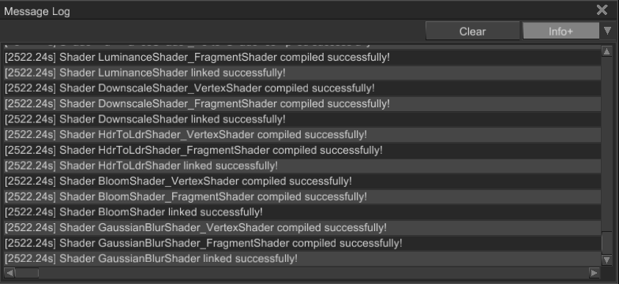
The window allows you to select severity of the messages that will be put in the window:
Info+will show all messages withInfo,Warning,Errorseverities.Warning+will show all messages withWarningandErrorseverities.Errorwill show all messages with onlyErrorseverity.
Each log entry can be copied to the clipboard by right-clicking on it and pressing Copy in the context menu. You can
also clear the log using Clear button.
Writing to the log
You can use one of Log::info, Log::warn, Log::err methods, or use Log::writeln with severity specified. It is also
possible to select desired severity level:
#![allow(unused)] fn main() { extern crate fyrox; use fyrox::core::log::{Log, MessageKind}; // These lines will be printed. Log::info("This is some info"); Log::warn("This is some warning"); Log::err("This is some error"); Log::set_verbosity(MessageKind::Warning); Log::info("This is some info"); // This won't be printed. Log::warn("This is some warning"); Log::err("This is some error"); }
Tutorials
The book offers a set of tutorials of how to write a game of specific genre using the engine. Every tutorial starts from mild difficulty and keep increasing the difficulty until the end. All tutorials are very well structured and you shouldn't be able to lost in them.
First-Person Shooter Tutorial
WARNING: This tutorial is using obsolete engine features, which are subject to be removed in future versions!
In this tutorial we'll make a 3D shooter - something similar to rusty-shooter. Also, the series should help you to learn basic principles which lies in the foundation of the engine.
Fyrox and Fyroxed version
Fyrox changes rapidly and tutorial's code could not compile with the newest versions of the engine, to prevent that and keep the code compilable over time the versions of both the engine and the editor are set to specific commits in the main repo.
Fyrox version: 0.28
Source code: GitHub
FPS Tutorial Part 1 - Character Controller.
WARNING: This tutorial is using obsolete engine features, which are subject to be removed in future versions!
Source code: GitHub
Table of contents
- Introduction
- Creating a window
- Creating your first scene
- Using the scene
- Character controller
- Finishing touch
- Conclusion
Introduction
Fyrox is a general purpose 3D engine, it allows creating any kind of 3D game, but today we'll focus on classic 3D shooter. In this tutorial we'll write a simple character controller. This is what we're aiming for:
Let's start by creating a new cargo project, make a folder and execute this:
cargo init --bin
Open Cargo.toml and add fyrox dependency:
[dependencies]
fyrox = "0.28.0"
Creating a window
Great! Now we can start writing the game. Let's start from something very simple - a window and a main loop. Just copy
and paste this code in the main.rs:
extern crate fyrox; use fyrox::{ core::{ algebra::{UnitQuaternion, Vector3}, pool::Handle, }, engine::{Engine, EngineInitParams, SerializationContext}, asset::manager::ResourceManager, event::{DeviceEvent, ElementState, Event, VirtualKeyCode, WindowEvent}, event_loop::{ControlFlow, EventLoop}, resource::texture::TextureWrapMode, scene::{ base::BaseBuilder, camera::{CameraBuilder, SkyBox, SkyBoxBuilder}, collider::{ColliderBuilder, ColliderShape}, node::Node, rigidbody::RigidBodyBuilder, transform::TransformBuilder, Scene, }, window::WindowBuilder, }; use std::{sync::Arc, time}; use fyrox::window::WindowAttributes; use fyrox::engine::{GraphicsContextParams, GraphicsContext}; // Our game logic will be updated at 60 Hz rate. const TIMESTEP: f32 = 1.0 / 60.0; struct Game { // Empty for now. } impl Game { pub fn new() -> Self { Self {} } pub fn update(&mut self) { // Game logic will be placed here. } } fn main() { // Create event loop that will be used to "listen" events from the OS. let event_loop = EventLoop::new(); // Finally create an instance of the engine. let graphics_context_params = GraphicsContextParams { window_attributes: WindowAttributes { title: "3D Shooter Tutorial".to_string(), resizable: true, ..Default::default() }, vsync: true, }; let serialization_context = Arc::new(SerializationContext::new()); let mut engine = Engine::new(EngineInitParams { graphics_context_params, resource_manager: ResourceManager::new(), serialization_context, }) .unwrap(); // Initialize game instance. It is empty for now. let mut game = Game::new(); // Run the event loop of the main window. which will respond to OS and window events and update // engine's state accordingly. Engine lets you to decide which event should be handled, // this is a minimal working example of how it should be. let mut previous = time::Instant::now(); let mut lag = 0.0; event_loop.run(move |event, _, control_flow| { match event { Event::MainEventsCleared => { // This main game loop - it has fixed time step which means that game // code will run at fixed speed even if renderer can't give you desired // 60 fps. let elapsed = previous.elapsed(); previous = time::Instant::now(); lag += elapsed.as_secs_f32(); while lag >= TIMESTEP { lag -= TIMESTEP; // Run our game's logic. game.update(); // Update engine each frame. engine.update(TIMESTEP, control_flow, &mut lag, Default::default()); } // Rendering must be explicitly requested and handled after RedrawRequested event is received. if let GraphicsContext::Initialized(ref ctx) = engine.graphics_context { ctx.window.request_redraw(); } } Event::RedrawRequested(_) => { // Render at max speed - it is not tied to the game code. engine.render().unwrap(); } Event::WindowEvent { event, .. } => match event { WindowEvent::CloseRequested => *control_flow = ControlFlow::Exit, WindowEvent::KeyboardInput { input, .. } => { // Exit game by hitting Escape. if let Some(VirtualKeyCode::Escape) = input.virtual_keycode { *control_flow = ControlFlow::Exit } } WindowEvent::Resized(size) => { // It is very important to handle Resized event from window, because // renderer knows nothing about window size - it must be notified // directly when window size has changed. engine.set_frame_size(size.into()).unwrap(); } _ => (), }, _ => *control_flow = ControlFlow::Poll, } }); }
Wow! There is lots of code for such a simple task. Fear not, everything here is pretty straightforward, let's dive into this code and disassemble it line by line. Just skip imports, it's too boring. Let's look at this line:
#![allow(unused)] fn main() { const TIMESTEP: f32 = 1.0 / 60.0; }
Here we define a rate of update for logic of our future game, just sticking to common 60 FPS. Next goes the skeleton of the game, just a struct with two methods. It will be filled later in this tutorial.
#![allow(unused)] fn main() { struct Game { // Empty for now. } impl Game { pub fn new() -> Self { Self {} } pub fn update(&mut self) { // Game logic will be placed here. } } }
Finally, we at the point where the interesting stuff happens - fn main(). We're starting by creating our event loop:
#![allow(unused)] fn main() { extern crate fyrox; use fyrox::event_loop::EventLoop; let event_loop = EventLoop::new(); }
The event loop is a "magic" thing that receives events from the operating system and feeds your application, this is a very important part which makes the application work. Finally, we're creating an instance of the engine:
#![allow(unused)] fn main() { let graphics_context_params = GraphicsContextParams { window_attributes: WindowAttributes { title: "3D Shooter Tutorial".to_string(), resizable: true, ..Default::default() }, vsync: true, }; let serialization_context = Arc::new(SerializationContext::new()); let mut engine = Engine::new(EngineInitParams { graphics_context_params, resource_manager: ResourceManager::new(serialization_context.clone()), serialization_context, }) .unwrap(); }
At first, we're creating an instance of SerializationContext - it is used to store type constructors used for
serialization needs. Next, we're filling EngineInitParams structure, there is nothing interesting there, except maybe
a flag that is responsible for vertical synchronization (VSync). In this tutorial we'll have VSync disabled, because
it requires specific platform-dependent extensions which are not always available and calling .unwrap() might result
in panic on some platforms. Next we're creating an instance of the game, remember this line, it will be changed soon:
#![allow(unused)] fn main() { let mut game = Game::new(); }
Next we define two variables for the game loop:
#![allow(unused)] fn main() { let clock = time::Instant::now(); let mut elapsed_time = 0.0; }
At first, we "remember" the starting point of the game in time. The next variable is used to control the game loop. Finally, we run the event loop and start checking for events coming from the OS:
#![allow(unused)] fn main() { event_loop.run(move |event, _, control_flow| { match event { ... } }); }
Let's look at each event separately starting from Event::MainEventsCleared:
#![allow(unused)] fn main() { Event::MainEventsCleared => { // This main game loop - it has fixed time step which means that game // code will run at fixed speed even if renderer can't give you desired // 60 fps. let mut dt = clock.elapsed().as_secs_f32() - elapsed_time; while dt >= TIMESTEP { dt -= TIMESTEP; elapsed_time += TIMESTEP; // Run our game's logic. game.update(); // Update engine each frame. engine.update(TIMESTEP); } // Rendering must be explicitly requested and handled after RedrawRequested event is received. if let GraphicsContext::Initialized(ref ctx) = engine.graphics_context { ctx.window.request_redraw(); } } }
This is the heart of game loop - it stabilizes update rate of game logic by measuring time from last update call
and performs a various amount of iterations based on an amount of time since last update. This makes the game logic update
rate independent of FPS - it will be always 60 Hz for game logic even if FPS is 10. The while loop contains
game.update() and engine.update(TIMESTEP) calls to update game's logic and engine internals respectively. After the
loop we're asking the engine to render the next frame. In the next match arm Event::RedrawRequested we're handing our request:
#![allow(unused)] fn main() { Event::RedrawRequested(_) => { // Render at max speed - it is not tied to the game code. engine.render().unwrap(); } }
As you can see rendering happens in a single line of code. Next we need to handle window events:
#![allow(unused)] fn main() { Event::WindowEvent { event, .. } => match event { WindowEvent::CloseRequested => *control_flow = ControlFlow::Exit, WindowEvent::KeyboardInput { input, .. } => { // Exit game by hitting Escape. if let Some(VirtualKeyCode::Escape) = input.virtual_keycode { *control_flow = ControlFlow::Exit } } WindowEvent::Resized(size) => { // It is very important to handle Resized event from window, because // renderer knows nothing about window size - it must be notified // directly when window size has changed. engine.set_frame_size(size.into()).unwrap(); } _ => (), }, }
Here we're just checking if the player has hit Escape button and exit game if so. Also, when WindowEvent::Resized is
received, we're notifying renderer about that, so it's render targets will be resized too. The final match arm is for
every other event, nothing fancy here - just asking engine to continue listening for new events.
#![allow(unused)] fn main() { _ => *control_flow = ControlFlow::Poll, }
So far so good. This small piece of code just creates a new window and fills it with black color, now we can start writing the game.

Let's start by creating a simple scene where we'll test our character controller. This is the time when Fyroxed comes into play - Fyroxed is a native scene editor of the engine. It is worth mentioning what "scene editor" means: unlike many other engines (Unity, UnrealEngine, etc.), Fyroxed does not allow you to run your game inside it, instead you just edit your scene, save it in the editor and load it in your game. Being able to run a game inside the editor was a very huge task for one person, and I just chose the easiest way. Alright, back to the interesting stuff. Build the editor first using instructions from its GitHub page using specific commit stated in the beginning of the article.
Creating your first scene
This section is completely optional, if you eager to make the game - just use a pre-made scene (download it and unpack in the folder of your game) and go to the next section. Open Fyroxed, it should look like this:

It will ask you to choose a working directory.

The working directory is simply a path to your game's executable, in most cases it will be the root folder of your project.
Next, click File -> CreateScene. Now you can start modifying your scene. All we need for now is a floor and maybe
some decorations. To do that, you can either create everything from simple objects (cubes, cones, cylinders,
etc.) or load some assets made in 3D editors (like Blender, 3Ds max, etc.). Here we combine two approaches: floor will
be just a squashed cube and decorations will be 3D models. Let's start from the floor. Click Create -> Mesh -> Cube,
select the cube and use Scale tool from the toolbar to squash it to form the floor.
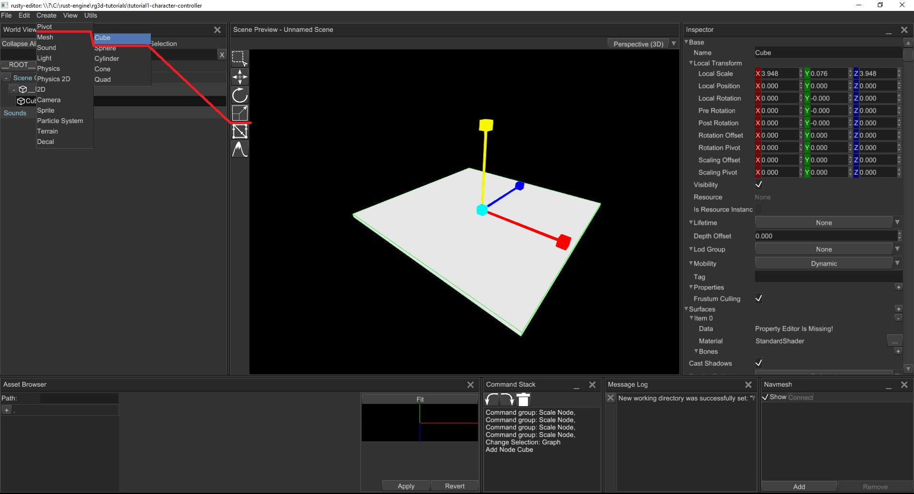
Next we need to add physical body to the floor to not fall through it. This is very simple, click Create -> Physics -> Rigid Body
then right-click on the rigid body in the World Viewer and click Create -> Physics -> Collider. Next we need to bind the
floor 3D model with the rigid body, to do that drag'n'drop the floor entity to the rigid body. Now we need to configure the
collider of the rigid body. Select it and go to Inspector, find Shape property and select Trimesh from the dropdown list.
Next, click + sign in Sources and then drag'n'drop floor entity to Unassigned entry while holding Alt on the keyboard.
By doing this, we've added a source of geometry for triangle mesh collider. Also, we need to make the rigid body
static, so it won't be affected by gravity and external forces, otherwise the floor will fall as any other
dynamic rigid body. To do that, simply select the body and change its Body Type property to Static.

Ok, good, but it looks awful, let's add some texture to it, to do that,
download floor texture, place it to data/textures and apply it to the floor.
To do that, use the asset browser: at its left side it shows file system of your project, locate data/textures folder
and select floor.jpg. Now just drag-n-drop the texture to the floor, this is what you should get.
{kind=link}

Now let's add some decorations, to do that download 3D model I prepared for
this tutorial and unpack it in data/models. Now go to the data/models in the asset browser and just drag-n-drop the
barrel.FBX to the scene. Now use the Scale and Move tools to adjust scale and position of the barrel, it should look
like this:

Barrel does not have any rigid body yet, and it won't interact with world. Let's fix this. As usual, click Create -> Physics -> Rigid Body
then click on the added rigid body and add a cylinder collider by right-click on it and selecting Create -> Physics -> Colider.
Now select the collider and set its shape to Cylinder adjust its height and radius. As a final step drag'n'drop the barrel.FBX scene
node on the rigid body node.
Now clone some barrels, to do that select a parent rigid body of some barrel.FBX in the World Outliner,
right-click on the scene preview and press Ctrl+C to copy the barrel and Ctrl+V to paste. Repeat multiple times.

Also add a light source, to do that go to Create -> Light -> Point and adjust its position using the Move tool.

The final step: save your scene in data/models, to do that go to File -> Save and select the folder and type name
of the scene in the field it should be scene.rgs.
Using the scene
Now it's the time to load the scene we've made earlier in the game. This is very simple, all we need to do is to load
scene as resource and create its instance. Change fn new() body to:
#![allow(unused)] fn main() { extern crate fyrox; use fyrox::{ core::{algebra::Vector3, pool::Handle}, engine::Engine, resource::model::{Model, ModelResourceExtension}, scene::{ base::BaseBuilder, camera::CameraBuilder, node::Node, transform::TransformBuilder, Scene, }, }; struct Stub { camera: Handle<Node>, scene: Handle<Scene>, } impl Stub { pub async fn new(engine: &mut Engine) -> Self { let mut scene = Scene::new(); // Load a scene resource and create its instance. engine .resource_manager .request::<Model, _>("data/models/scene.rgs") .await .unwrap() .instantiate(&mut scene); // Next create a camera, it is our "eyes" in the world. // This can also be made in editor, but for educational purpose we'll made it by hand. let camera = CameraBuilder::new( BaseBuilder::new().with_local_transform( TransformBuilder::new() .with_local_position(Vector3::new(0.0, 1.0, -3.0)) .build(), ), ) .build(&mut scene.graph); Self { camera, scene: engine.scenes.add(scene), } } } }
You may have noticed that the Game structure now has two new fields:
#![allow(unused)] fn main() { struct Game { scene: Handle<Scene>, // A handle to the scene camera: Handle<Node>, // A handle to the camera } }
These fields are just handles to the "entities" we've created in the Game::new(). Also, change let mut game = Game::new(); to this:
#![allow(unused)] fn main() { let mut game = fyrox::core::futures::executor::block_on(Game::new(&mut engine)); }
Here we execute async function Game::new() and it creates game's instance with the scene we've made previously.
Run the game and you should see this:

Cool! Now let's disassemble fn new() line by line. First, we're creating an empty scene:
#![allow(unused)] fn main() { let mut scene = Scene::new(); }
The next few lines are the most interesting:
#![allow(unused)] fn main() { engine .resource_manager .request::<Model, _>("data/models/scene.rgs") .await .unwrap() .instantiate(&mut scene); }
Here we're asking the resource manager to load the scene we've made previously, awaiting while it loads and then instantiating
it on the scene. What does "instantiation" mean? In short, it means that we're creating a copy of a scene and adding the copy
to some other scene, the engine remembers connections between clones and original entities and is capable of restoring data
from resource for the instance. At this point we've successfully instantiated the scene. However, we won't see anything
yet - we need a camera:
#![allow(unused)] fn main() { let camera = CameraBuilder::new( BaseBuilder::new().with_local_transform( TransformBuilder::new() .with_local_position(Vector3::new(0.0, 1.0, -3.0)) .build(), ), ) .build(&mut scene.graph); }
Camera is our "eyes" in the world, here we're just creating a camera and moving it a bit up and back to be able to see the scene. Finally, we're adding the scene to the engine's container for scenes, and it gives us a handle to the scene. Later we'll use the handle to borrow scene and modify it.
#![allow(unused)] fn main() { Self { camera, scene: engine.scenes.add(scene), } }
Character controller
We've made a lot of things already, but still can't move in the scene. Let's fix this! We'll start writing the character controller which will allow us to walk in our scene. Let's start with a chunk of code as usual:
#![allow(unused)] fn main() { extern crate fyrox; use fyrox::{ core::{ algebra::{UnitQuaternion, Vector3}, pool::Handle, }, engine::{Engine}, asset::manager::ResourceManager, event::{DeviceEvent, ElementState, Event, VirtualKeyCode, WindowEvent}, event_loop::{ControlFlow, EventLoop}, resource::texture::TextureWrapMode, scene::{ base::BaseBuilder, camera::{CameraBuilder, SkyBox, SkyBoxBuilder}, collider::{ColliderBuilder, ColliderShape}, node::Node, rigidbody::RigidBodyBuilder, transform::TransformBuilder, Scene, }, window::WindowBuilder, }; use std::time; #[derive(Default)] struct InputController { move_forward: bool, move_backward: bool, move_left: bool, move_right: bool, pitch: f32, yaw: f32, } struct Player { camera: Handle<Node>, rigid_body: Handle<Node>, controller: InputController, } impl Player { fn new(scene: &mut Scene) -> Self { // Create rigid body with a camera, move it a bit up to "emulate" head. let camera; let rigid_body_handle = RigidBodyBuilder::new( BaseBuilder::new() .with_local_transform( TransformBuilder::new() // Offset player a bit. .with_local_position(Vector3::new(0.0, 1.0, -1.0)) .build(), ) .with_children(&[ { camera = CameraBuilder::new( BaseBuilder::new().with_local_transform( TransformBuilder::new() .with_local_position(Vector3::new(0.0, 0.25, 0.0)) .build(), ), ) .build(&mut scene.graph); camera }, // Add capsule collider for the rigid body. ColliderBuilder::new(BaseBuilder::new()) .with_shape(ColliderShape::capsule_y(0.25, 0.2)) .build(&mut scene.graph), ]), ) // We don't want the player to tilt. .with_locked_rotations(true) // We don't want the rigid body to sleep (be excluded from simulation) .with_can_sleep(false) .build(&mut scene.graph); Self { camera, rigid_body: rigid_body_handle, controller: Default::default(), } } fn update(&mut self, scene: &mut Scene) { // Set pitch for the camera. These lines responsible for up-down camera rotation. scene.graph[self.camera].local_transform_mut().set_rotation( UnitQuaternion::from_axis_angle(&Vector3::x_axis(), self.controller.pitch.to_radians()), ); // Borrow rigid body node. let body = scene.graph[self.rigid_body].as_rigid_body_mut(); // Keep only vertical velocity, and drop horizontal. let mut velocity = Vector3::new(0.0, body.lin_vel().y, 0.0); // Change the velocity depending on the keys pressed. if self.controller.move_forward { // If we moving forward then add "look" vector of the body. velocity += body.look_vector(); } if self.controller.move_backward { // If we moving backward then subtract "look" vector of the body. velocity -= body.look_vector(); } if self.controller.move_left { // If we moving left then add "side" vector of the body. velocity += body.side_vector(); } if self.controller.move_right { // If we moving right then subtract "side" vector of the body. velocity -= body.side_vector(); } // Finally new linear velocity. body.set_lin_vel(velocity); // Change the rotation of the rigid body according to current yaw. These lines responsible for // left-right rotation. body.local_transform_mut() .set_rotation(UnitQuaternion::from_axis_angle( &Vector3::y_axis(), self.controller.yaw.to_radians(), )); } fn process_input_event(&mut self, event: &Event<()>) { match event { Event::WindowEvent { event, .. } => { if let WindowEvent::KeyboardInput { input, .. } = event { if let Some(key_code) = input.virtual_keycode { match key_code { VirtualKeyCode::W => { self.controller.move_forward = input.state == ElementState::Pressed; } VirtualKeyCode::S => { self.controller.move_backward = input.state == ElementState::Pressed; } VirtualKeyCode::A => { self.controller.move_left = input.state == ElementState::Pressed; } VirtualKeyCode::D => { self.controller.move_right = input.state == ElementState::Pressed; } _ => (), } } } } Event::DeviceEvent { event, .. } => { if let DeviceEvent::MouseMotion { delta } = event { self.controller.yaw -= delta.0 as f32; self.controller.pitch = (self.controller.pitch + delta.1 as f32).clamp(-90.0, 90.0); } } _ => (), } } } }
This is all the code we need for character controller, quite a lot actually, but as usual everything here is pretty straightforward.
#![allow(unused)] fn main() { extern crate fyrox; use fyrox::core::pool::Handle; use fyrox::engine::Engine; use fyrox::scene::Scene; use fyrox::resource::model::{Model, ModelResourceExtension}; struct Player; impl Player { fn new(_scene: &mut Scene) -> Self { Self } fn update(&mut self, _scene: &mut Scene) {} } // Also we must change Game structure a bit too and the new() code. struct Game { scene: Handle<Scene>, player: Player, // New } impl Game { pub async fn new(engine: &mut Engine) -> Self { let mut scene = Scene::new(); // Load a scene resource and create its instance. engine .resource_manager .request::<Model, _>("data/models/scene.rgs") .await .unwrap() .instantiate(&mut scene); Self { player: Player::new(&mut scene), // New scene: engine.scenes.add(scene), } } pub fn update(&mut self, engine: &mut Engine) { self.player.update(&mut engine.scenes[self.scene]); // New } } }
We've moved camera creation to Player, because now the camera is attached to the player's body. Also, we must add this line
in the beginning of event_loop.run(...) to let player handle input events:
#![allow(unused)] fn main() { game.player.process_input_event(&event); }
So, let's try to understand what happens in this huge chunk of code. Let's start from the InputController struct,
it holds the state of the input for a single frame and rotations of player "parts".
#![allow(unused)] fn main() { #[derive(Default)] struct InputController { move_forward: bool, move_backward: bool, move_left: bool, move_right: bool, pitch: f32, yaw: f32, } }
Next goes the Player::new() function. First, we're creating a simple chain of nodes of different kinds in the
scene graph.
#![allow(unused)] fn main() { let camera; let rigid_body_handle = RigidBodyBuilder::new( BaseBuilder::new() .with_local_transform( TransformBuilder::new() // Offset player a bit. .with_local_position(Vector3::new(0.0, 1.0, -1.0)) .build(), ) .with_children(&[ { camera = CameraBuilder::new( BaseBuilder::new().with_local_transform( TransformBuilder::new() .with_local_position(Vector3::new(0.0, 0.25, 0.0)) .build(), ), ) .build(&mut scene.graph); camera }, // Add capsule collider for the rigid body. ColliderBuilder::new(BaseBuilder::new()) .with_shape(ColliderShape::capsule_y(0.25, 0.2)) .build(&mut scene.graph), ]), ) // We don't want the player to tilt. .with_locked_rotations(true) // We don't want the rigid body to sleep (be excluded from simulation) .with_can_sleep(false) .build(&mut scene.graph); }
Basically we're making something like this:

As you can see, the camera is attached to the rigid body and has a relative position of (0.0, 0.25, 0.0). So when we'll
move rigid body, the camera will move too (and rotate of course).
#![allow(unused)] fn main() { Self { camera, rigid_body: rigid_body_handle, controller: Default::default(), } }
Next goes the fn update(...) function, it is responsible for movement of the player. It starts from these lines:
#![allow(unused)] fn main() { // Set pitch for the camera. These lines responsible for up-down camera rotation. scene.graph[self.camera].local_transform_mut().set_rotation( UnitQuaternion::from_axis_angle(&Vector3::x_axis(), self.controller.pitch.to_radians()), ); }
We're borrowing the camera from the graph (scene.graph[self.camera]) and modifying its local rotation, using a
quaternion built from an axis, and an angle.
This rotates camera in vertical direction. Let's talk about borrowing in the engine. Almost every object in the
engine "lives" in generational arenas (pool in fyrox's terminology). Pool is a contiguous chunk of memory, to be
able to "reference" an object in a pool Fyrox uses handles. Almost every entity has a single owner - the engine,
so to mutate or read data from an entity your have to borrow it first, like this:
#![allow(unused)] fn main() { // Borrow rigid body node. let body = scene.graph[self.rigid_body].as_rigid_body_mut(); }
This piece of code scene.graph[self.rigid_body] borrows rigid_body as either mutable or shared, depending on the context (basically
it is just an implementation of Index + IndexMut traits). Once we've borrowed objects, we can modify them. As the next
step we calculate new horizontal speed for the player:
#![allow(unused)] fn main() { // Keep only vertical velocity, and drop horizontal. let mut velocity = Vector3::new(0.0, body.lin_vel().y, 0.0); // Change the velocity depending on the keys pressed. if self.controller.move_forward { // If we moving forward then add "look" vector of the body. velocity += body.look_vector(); } if self.controller.move_backward { // If we moving backward then subtract "look" vector of the body. velocity -= body.look_vector(); } if self.controller.move_left { // If we moving left then add "side" vector of the body. velocity += body.side_vector(); } if self.controller.move_right { // If we moving right then subtract "side" vector of the body. velocity -= body.side_vector(); } // Finally new linear velocity. body.set_lin_vel(velocity); }
We don't need to modify vertical speed, because it should be controlled by the physics engine. Finally, we're setting rotation of the rigid body:
#![allow(unused)] fn main() { // Change the rotation of the rigid body according to current yaw. These lines responsible for // left-right rotation. body.local_transform_mut() .set_rotation(UnitQuaternion::from_axis_angle( &Vector3::y_axis(), self.controller.yaw.to_radians(), )); }
The next piece of code is a bit boring, but still should be addressed - it is input handling. In the process_input_event
we check input events and configure input controller accordingly. Basically we're just checking if W, S, A, D keys were
pressed or released. In the MouseMotion arm, we're modifying yaw and pitch of the controller according to mouse
velocity. Nothing fancy, except this line:
#![allow(unused)] fn main() { self.controller.pitch = (self.controller.pitch + delta.1 as f32).clamp(-90.0, 90.0); }
Here we're just restricting pitch to [-90; 90] degree range to not let flipping camera upside-down. Now let's run the game, you should see something like this and be able to walk and turn the camera.

Finishing touch
One more thing before we end the tutorial. Black "void" around us isn't nice, let's add skybox for the camera to improve
that. Skybox is a very simple effect that significantly improves scene quality. To add a skybox, add this code first
somewhere before impl Player:
#![allow(unused)] fn main() { extern crate fyrox; use fyrox::{ asset::manager::{ResourceManager}, resource::texture::{Texture, TextureWrapMode}, scene::{ camera::{SkyBox, SkyBoxBuilder}, }, }; async fn create_skybox(resource_manager: ResourceManager) -> SkyBox { // Load skybox textures in parallel. let (front, back, left, right, top, bottom) = fyrox::core::futures::join!( resource_manager.request::<Texture, _>("data/textures/skybox/front.jpg"), resource_manager.request::<Texture, _>("data/textures/skybox/back.jpg"), resource_manager.request::<Texture, _>("data/textures/skybox/left.jpg"), resource_manager.request::<Texture, _>("data/textures/skybox/right.jpg"), resource_manager.request::<Texture, _>("data/textures/skybox/up.jpg"), resource_manager.request::<Texture, _>("data/textures/skybox/down.jpg") ); // Unwrap everything. let skybox = SkyBoxBuilder { front: Some(front.unwrap()), back: Some(back.unwrap()), left: Some(left.unwrap()), right: Some(right.unwrap()), top: Some(top.unwrap()), bottom: Some(bottom.unwrap()), } .build() .unwrap(); // Set S and T coordinate wrap mode, ClampToEdge will remove any possible seams on edges // of the skybox. let skybox_texture = skybox.cubemap().unwrap(); let mut data = skybox_texture.data_ref(); data.set_s_wrap_mode(TextureWrapMode::ClampToEdge); data.set_t_wrap_mode(TextureWrapMode::ClampToEdge); skybox } }
Then modify signature of Player::new to
#![allow(unused)] fn main() { async fn new(scene: &mut Scene, resource_manager: ResourceManager) -> Self }
We just added resource manager parameter here, and made the function async, because we'll load a bunch of textures
in the create_skybox function. Add following line at camera builder (before .build):
#![allow(unused)] fn main() { .with_skybox(create_skybox(resource_manager).await) }
Also modify player creation in Game::new to this
#![allow(unused)] fn main() { player: Player::new(&mut scene, engine.resource_manager.clone()).await, }
Next, download skybox textures from here and extract the archive in
data/textures (all textures from the archive must be in data/textures/skybox). Now you can run the game, and you
should see something like this:

This was the last step of this tutorial.
Conclusion
In this tutorial we've learned how to use the engine and the editor. Created simple character controller and walked on the scene we've made in the editor. I hope you liked this tutorial, and if so, please consider supporting the project on Patreon or LiberaPay. Source code is available on GitHub. In the next tutorial we'll start adding weapons.
FPS Tutorial Part 2 - Weapons
WARNING: This tutorial is using obsolete engine features, which are subject to be removed in future versions!
Source code: GitHub
Table of contents
Introduction
Of course for a shooter game we need weapons and targets to shoot at. In this tutorial we'll add weapons to the game. For simplicity, we'll add only one weapon, as you'll see later it is pretty easy to add more weapons yourself. This is the result we're aiming in the tutorial:
Adding weapons
Add a new module weapon.rs near your main.rs and use it somewhere after other imports:
#![allow(unused)] fn main() { pub mod weapon; ... use weapon::Weapon; }
Switch to weapon.rs and paste this code into it:
#![allow(unused)] fn main() { extern crate fyrox; use fyrox::scene::graph::Graph; use fyrox::{ core::{algebra::Vector3, math::Vector3Ext, pool::Handle}, asset::manager::ResourceManager, resource::model::{Model, ModelResourceExtension}, scene::{node::Node, Scene}, }; pub struct Weapon { model: Handle<Node>, shot_point: Handle<Node>, shot_timer: f32, } impl Weapon { pub async fn new(scene: &mut Scene, resource_manager: ResourceManager) -> Self { // Yeah, you need only few lines of code to load a model of any complexity. let model = resource_manager .request::<Model, _>("data/models/m4.fbx") .await .unwrap() .instantiate(scene); let shot_point = scene.graph.find_by_name(model, "Weapon:ShotPoint").unwrap().0; Self { model, shot_point, shot_timer: 0.0, } } pub fn model(&self) -> Handle<Node> { self.model } pub fn shot_point(&self) -> Handle<Node> { self.shot_point } pub fn update(&mut self, dt: f32) { self.shot_timer = (self.shot_timer - dt).min(0.0); } pub fn can_shoot(&self) -> bool { self.shot_timer <= 0.0 } pub fn shoot(&mut self) { self.shot_timer = 1.0; } } }
This piece of code just loads a weapon model and saves an instance handle for
further use. Also, each weapon should contain a helper node that tells from where it will "emit" bullets, the node
was added in a 3D editor and has name Weapon:ShotPoint. Weapon implementation has helper methods that provide read-only
access to inner fields (model, shot_point). update method just decreases the timer's value which is used to change
the pace of shooting. You may ask "why shoot method just modifies timer's value and does not create bullets, etc.?" -
please be patient, I will explain this later in game architecture section of the tutorial.
OK, now we need to make a point where every weapon will be "mounted" on, go to Player::new and add these lines in
the BaseBuilder of the CameraBuilder instance (you also need to import PivotBuilder):
#![allow(unused)] fn main() { .with_children(&[{ weapon_pivot = PivotBuilder::new( BaseBuilder::new().with_local_transform( TransformBuilder::new() .with_local_position(Vector3::new( -0.1, -0.05, 0.015, )) .build(), ), ) .build(&mut scene.graph); weapon_pivot }]), }
What is going on here? We're just adding new child node to the camera and offset it by some vector. Every weapon will
be attached to this pivot. Please keep in mind that the offset given in local coordinates, which means that weapon
pivot will move with the camera, but with some offset relative to it. Also, do not forget to add this line after
let camera;:
#![allow(unused)] fn main() { let weapon_pivot; }
Finally, add the weapon pivot to Self { ... } (and also add weapon_pivot: Handle<Node> to the Player struct):
#![allow(unused)] fn main() { Self { camera, weapon_pivot, // <- here rigid_body: rigid_body_handle.into(), controller: Default::default(), } }
Next we need a container for weapons, let's add it to the Game struct:
#![allow(unused)] fn main() { struct Game { scene: Handle<Scene>, player: Player, weapons: Pool<Weapon> // Weapons will live in a pool } }
Also do not forget to import Pool from fyrox::core::pool in main.rs:
#![allow(unused)] fn main() { ... use fyrox::core::pool::{Handle, Pool}; ... }
Now we need to change Game::new() a bit to add a weapon to the player:
#![allow(unused)] fn main() { pub async fn new(engine: &mut Engine) -> Self { let mut scene = Scene::new(); // Load a scene resource and create its instance. engine .resource_manager .request::<Model, _>("data/models/scene.rgs") .await .unwrap() .instantiate(&mut scene); // Create player first. let player = Player::new(&mut scene, engine.resource_manager.clone()).await; // Create weapon next. let weapon = Weapon::new(&mut scene, engine.resource_manager.clone()).await; // "Attach" the weapon to the weapon pivot of the player. scene.graph.link_nodes(weapon.model(), player.weapon_pivot); // Create a container for the weapons. let mut weapons = Pool::new(); // Put the weapon into it. weapons.spawn(weapon); Self { player, scene: engine.scenes.add(scene), weapons, } } }
At first, we're loading the scene, next we're creating player as usual. Next we're creating a weapon and attach it to the weapon pivot we've made earlier. Finally, we're creating a container for the weapons: we'll use Pool to be able to borrow weapon later on when we need. So, let's run the game, and you should see something like this:

Alright, now we have a weapon, but it still can't shoot. Let's fix that.
Game architecture
We at the point now where we need to choose correct approach of interaction between parts of the game. We already have
two kinds of entities: player and weapon. In naive approach to shoot a weapon, you'd pass a reference to a weapon in
Player::update() and would call something like weapon.shoot(). Most likely that at some point you'll end up
in a situation when you need too much of a context in a single method. This is so-called strong coupling, this is
the thing that disappoints borrow checker too much, and it rejects your code because you're trying to borrow same things
multiple times. So we need a way to change strong coupling to loose coupling. To do that we'll use messages to delay
execution of some actions that require too much of a context. In general, we'll replace direct function call with a
message that will be put in a common queue and executed later on one by one at the top of call hierarchy (in
Game::update in our case). Let's begin by adding a MPSC (Multiple Producer Single Consumer) queue to the Game:
#![allow(unused)] fn main() { struct Game { scene: Handle<Scene>, player: Player, weapons: Pool<Weapon>, receiver: Receiver<Message>, // Single receiver, it cannot be cloned. sender: Sender<Message>, // Sender can be cloned and used from various places. } }
Now we need a Message enumeration, add message.rs module, import it in main.rs (pub mod message;) and fill it
with the following code:
#![allow(unused)] fn main() { use crate::weapon::Weapon; use fyrox::core::pool::Handle; pub enum Message { ShootWeapon { weapons: Handle<Weapon> } } }
For now, we have only one message kind - ShootWeapon with a single parameter, a handle of a weapon to shoot. We need
a place to handle messages, Game::update seems to be the most suitable - it is on top of "call hierarchy" and has
most wide context. Let's change Game::update to this code:
#![allow(unused)] fn main() { pub fn update(&mut self, engine: &mut Engine, dt: f32) { self.player.update(&mut engine.scenes[self.scene]); // v New code v // for weapon in self.weapons.iter_mut() { weapon.update(dt); } // We're using `try_recv` here because we don't want to wait until next message - // if the queue is empty just continue to next frame. while let Ok(message) = self.receiver.try_recv() { match message { Message::ShootWeapon { weapon } => { self.shoot_weapon(weapon, engine); } } } } }
So, these first three new lines updating every weapon in the game, for now update of a weapon just updates shooting timer.
As you can see we've added new parameter to the function dt: f32, this is the time span from last frame. Do not forget
to pass this parameter in fn main(): game.update(&mut engine, TIMESTEP);. Finally, at the end of the function we're
handling messages from the queue one by one. As you can see we're handling ShootWeapon message, but there is a
mysterious line self.shoot_weapon(weapon, engine) which is not yet defined, let's fix that, add these lines to
impl Game:
#![allow(unused)] fn main() { fn shoot_weapon(&mut self, weapon: Handle<Weapon>, engine: &mut Engine) { let weapon = &mut self.weapons[weapon]; if weapon.can_shoot() { weapon.shoot(); let scene = &mut engine.scenes[self.scene]; let weapon_model = &scene.graph[weapon.model()]; // Make a ray that starts at the weapon's position in the world and look toward // "look" vector of the weapon. let ray = Ray::new( scene.graph[weapon.shot_point()].global_position(), weapon_model.look_vector().scale(1000.0), ); let mut intersections = Vec::new(); scene.graph.physics.cast_ray( RayCastOptions { ray_origin: Point3::from(ray.origin), max_len: ray.dir.norm(), groups: Default::default(), sort_results: true, // We need intersections to be sorted from closest to furthest. ray_direction: ray.dir, }, &mut intersections, ); // Ignore intersections with player's capsule. let trail_length = if let Some(intersection) = intersections .iter() .find(|i| i.collider != self.player.collider) { // // TODO: Add code to handle intersections with bots. // // For now just apply some force at the point of impact. let colliders_parent = scene.graph[intersection.collider].parent(); let picked_rigid_body = scene.graph[colliders_parent].as_rigid_body_mut(); picked_rigid_body.apply_force_at_point( ray.dir.normalize().scale(10.0), intersection.position.coords, ); picked_rigid_body.wake_up(); // Trail length will be the length of line between intersection point and ray origin. (intersection.position.coords - ray.origin).norm() } else { // Otherwise trail length will be just the ray length. ray.dir.norm() }; create_shot_trail(&mut scene.graph, ray.origin, ray.dir, trail_length); } } }
Wow! Why is there so much code to shoot a weapon!? Actually, this is not all the code - check the last line
#![allow(unused)] fn main() { create_shot_trail(&mut scene.graph, ray.origin, ray.dir, trail_length); }
This is yet another function we must add, it is a standalone helper function that creates a shot trail:
#![allow(unused)] fn main() { extern crate fyrox; use fyrox::{ core::{ algebra::{UnitQuaternion, Vector3}, color::Color, parking_lot::Mutex, sstorage::ImmutableString, }, material::{Material, PropertyValue, SharedMaterial}, scene::{ base::BaseBuilder, graph::Graph, mesh::{ surface::{SurfaceBuilder, SurfaceData, SurfaceSharedData}, MeshBuilder, RenderPath, }, transform::TransformBuilder, }, }; use std::sync::Arc; fn create_shot_trail( graph: &mut Graph, origin: Vector3<f32>, direction: Vector3<f32>, trail_length: f32, ) { let transform = TransformBuilder::new() .with_local_position(origin) // Scale the trail in XZ plane to make it thin, and apply `trail_length` scale on Y axis // to stretch is out. .with_local_scale(Vector3::new(0.0025, 0.0025, trail_length)) // Rotate the trail along given `direction` .with_local_rotation(UnitQuaternion::face_towards(&direction, &Vector3::y())) .build(); // Create unit cylinder with caps that faces toward Z axis. let shape = SurfaceSharedData::new(SurfaceData::make_cylinder( 6, // Count of sides 1.0, // Radius 1.0, // Height false, // No caps are needed. // Rotate vertical cylinder around X axis to make it face towards Z axis &UnitQuaternion::from_axis_angle(&Vector3::x_axis(), 90.0f32.to_radians()).to_homogeneous(), )); // Create an instance of standard material for the shot trail. let mut material = Material::standard(); material .set_property( &ImmutableString::new("diffuseColor"), // Set yellow-ish color. PropertyValue::Color(Color::from_rgba(255, 255, 0, 120)), ) .unwrap(); MeshBuilder::new( BaseBuilder::new() // Do not cast shadows. .with_cast_shadows(false) .with_local_transform(transform) // Shot trail should live ~0.25 seconds, after that it will be automatically // destroyed. .with_lifetime(0.25), ) .with_surfaces(vec![SurfaceBuilder::new(shape) .with_material(SharedMaterial::new(material)) .build()]) // Make sure to set Forward render path, otherwise the object won't be // transparent. .with_render_path(RenderPath::Forward) .build(graph); } }
Okay... Let's disassemble this heap of code line by line. At first, we're borrowing the weapon by its handle and check if it can shoot (if the timer has reached zero), and "shoot" (reset the timer) if so:
#![allow(unused)] fn main() { let weapon = &mut self.weapons[weapon]; if weapon.can_shoot() { weapon.shoot(); ... }
Next we're using ray casting to find the target we're shooting at:
#![allow(unused)] fn main() { // ... let scene = &mut engine.scenes[self.scene]; let weapon_model = &scene.graph[weapon.model()]; // Make a ray that starts at the weapon's position in the world and look toward // "look" vector of the weapon. let ray = Ray::new( scene.graph[weapon.shot_point()].global_position(), weapon_model.look_vector().scale(1000.0), ); let mut intersections = Vec::new(); scene.graph.physics.cast_ray( RayCastOptions { ray_origin: Point3::from(ray.origin), max_len: ray.dir.norm(), groups: Default::default(), sort_results: true, // We need intersections to be sorted from closest to furthest. ray_direction: ray.dir, }, &mut intersections, ); ... }
To determine the "target", we're have to make a ray first. It starts from the "shot point" we've attached to the weapon. Direction of the ray is the "look" vector of the weapon model scaled by some large value which defines a "length" of the ray. Finally, we're casting the ray. Next we have to check each intersection and find the target:
#![allow(unused)] fn main() { // Ignore intersections with player's capsule. let trail_length = if let Some(intersection) = intersections .iter() .find(|i| i.collider != self.player.collider) { // // TODO: Add code to handle intersections with bots. // // For now just apply some force at the point of impact. let colliders_parent = scene.graph[intersection.collider].parent(); let picked_rigid_body = scene.graph[colliders_parent].as_rigid_body_mut(); picked_rigid_body.apply_force_at_point( ray.dir.normalize().scale(10.0), intersection.position.coords, ); picked_rigid_body.wake_up(); // Trail length will be the length of line between intersection point and ray origin. (intersection.position.coords - ray.origin).norm() } else { // Otherwise trail length will be just the ray length. ray.dir.norm() }; }
First intersection most likely will be player's capsule, because shot point may be inside player's capsule. We're
filtering such intersection in the first three lines. To do that, we have to remember the handle of player's capsule
in Player: collider: Handle<Node> and fill the field in Player::new like this:
#![allow(unused)] fn main() { let collider; ... // Add capsule collider for the rigid body. { collider = ColliderBuilder::new(BaseBuilder::new()) .with_shape(ColliderShape::capsule_y(0.25, 0.2)) .build(&mut scene.graph); collider } ... Self { ... collider, // <- ... } }
Next goes TODO comment, remember this line, it will be replaced when we'll add bots in future tutorial.
Until we have no bots, we should somehow emulate shot impact, to do that we'll just apply some force at the point of
impact. Finally, we're calculating desired shot trail length - it is just distance between point of impact and ray's
origin. In the else branch we're setting the length to be the length of the ray. Finally, we're creating a shot trail:
#![allow(unused)] fn main() { create_shot_trail(&mut scene.graph, ray.origin, ray.dir, trail_length); }
Now let's dive into this function. It starts from the definition of local transform of the trail:
#![allow(unused)] fn main() { let transform = TransformBuilder::new() .with_local_position(origin) // Scale the trail in XZ plane to make it thin, and apply `trail_length` scale on Y axis // to stretch is out. .with_local_scale(Vector3::new(0.0025, 0.0025, trail_length)) // Rotate the trail along given `direction` .with_local_rotation(UnitQuaternion::face_towards(&direction, &Vector3::y())) .build(); }
Its purpose is to shrink cylinder in XZ plane and stretch it out on Y axis to the length of the trail. Next we're making geometry for the cylinder:
#![allow(unused)] fn main() { let shape = SurfaceSharedData::new(SurfaceData::make_cylinder( 6, // Count of sides 1.0, // Radius 1.0, // Height false, // No caps are needed. // Rotate vertical cylinder around X axis to make it face towards Z axis &UnitQuaternion::from_axis_angle(&Vector3::x_axis(), 90.0f32.to_radians()).to_homogeneous(), )); }
Here we're creating unit vertical cylinder, rotate it to make it face towards Z axis. Finally, we're creating mesh node:
#![allow(unused)] fn main() { // Create an instance of standard material for the shot trail. let mut material = Material::standard(); material .set_property( &ImmutableString::new("diffuseColor"), // Set yellow-ish color. PropertyValue::Color(Color::from_rgba(255, 255, 0, 120)), ) .unwrap(); MeshBuilder::new( BaseBuilder::new() .with_local_transform(transform) // Shot trail should live ~0.25 seconds, after that it will be automatically // destroyed. .with_lifetime(0.25), ) .with_surfaces(vec![SurfaceBuilder::new(shape) .with_material(SharedMaterial::new(material)) .build()]) // Do not cast shadows. .with_cast_shadows(false) // Make sure to set Forward render path, otherwise the object won't be // transparent. .with_render_path(RenderPath::Forward) .build(graph); }
The trail will live just 0.25 seconds, Fyrox has built-in functionality for short-living objects, you have to just set
desired lifetime, and an object will be removed at the time. Also, we don't want the trail to cast shadows, and we want
the trail to be transparent yellow, to do that we have to change render path of the mesh to Forward. In short, every
mesh by default rendered using Deferred renderer which does not support transparent objects due to technical reasons,
but Fyrox has Forward renderer for such objects. Check this article to learn more
about Deferred and Forward rendering techniques. Ok, now we have to "teach" player how to shoot. At first, let's add new
field to InputController: shoot: bool. We'll be changing this flag by left mouse click, to do that let's add these lines
at the end of Event::WindowEvent match arm before _ => {} in Player::process_input_event:
#![allow(unused)] fn main() { &WindowEvent::MouseInput { button, state, .. } => { if button == MouseButton::Left { self.controller.shoot = state == ElementState::Pressed; } } }
Now we need a way to send messages to the game from the player. We need a new field in Player struct
sender: Sender<Message>. Also, we must change signature of Player::new() to this:
#![allow(unused)] fn main() { async fn new( scene: &mut Scene, resource_manager: ResourceManager, sender: Sender<Message>, ) -> Self }
Just pass the sender in the Self { .. } like this:
#![allow(unused)] fn main() { Self { ... sender, // <- Pass sender ... } }
Player must know about its weapons, let's fix this by adding new field to the Player: weapon: Handle<Weapon>, we'll
fill this field in the Game::new(), not in Player::new() because at the moment of creation of the player there are
no weapons:
#![allow(unused)] fn main() { ... // Put the weapon into it - this operation moves the weapon in the pool and returns handle. let weapon = weapons.spawn(weapon); // "Give" the weapon to the player. player.weapon = weapon; ... }
Finally, at the end of Player::update we will handle the state of the input controller:
#![allow(unused)] fn main() { if self.controller.shoot { self.sender .send(Message::ShootWeapon { weapon: self.weapon, }) .unwrap(); } }
Ok, at this momemt you should be able to compile the game and as you run it, you should see something like this when you'll press left mouse button:

Barrels should react to shots as in the video at the beginning of the tutorial.
Recoil
Ok, the weapon shoots but looks kinda unnatural, to fix that we need to add a recoil. This is very simple to do, let's
start by adding these fields in the Weapon struct:
#![allow(unused)] fn main() { recoil_offset: Vector3<f32>, recoil_target_offset: Vector3<f32>, }
Initialize these fields with default values (zero vector):
#![allow(unused)] fn main() { recoil_offset: Default::default(), recoil_target_offset: Default::default(), }
First vector is the actual recoil offset that will be applied to the weapon model, second - target recoil value which
first vector will follow. Why do we need two vectors instead just one? The answer is very simple, we need to smoothly
change offset over time, and to do that offset will just "follow" target offset which will give us desired smooth
movement. Let's add the code responsible for the recoil to the Weapon::update:
#![allow(unused)] fn main() { // Notice new `graph` parameter pub fn update(&mut self, dt: f32, graph: &mut Graph) { self.shot_timer = (self.shot_timer - dt).max(0.0); // v New code v // `follow` method defined in Vector3Ext trait and it just increases or // decreases vector's value in order to "follow" the target value with // given speed. self.recoil_offset.follow(&self.recoil_target_offset, 0.5); // Apply offset to weapon's model. graph[self.model] .local_transform_mut() .set_position(self.recoil_offset); // Check if we've reached target recoil offset. if self .recoil_offset .metric_distance(&self.recoil_target_offset) < 0.001 { // And if so, reset offset to zero to return weapon at // its default position. self.recoil_target_offset = Default::default(); } } }
At first, in the first line we force the recoil_offset to follow recoil_target_offset with given speed. Next we're
applying offset to weapon's model. Finally, we're checking if we've reached target offset and if so, just reset target
offset to return a weapon to its default position. Also we have to slightly modify Weapon::shoot to modify target
offset:
#![allow(unused)] fn main() { pub fn shoot(&mut self) { self.shot_timer = 0.1; // Set new offset after each shot. self.recoil_target_offset = Vector3::new(0.0, 0.0, -0.025); } }
The last thing we need to do is to slightly modify code at the Game::update to pass new parameter to Weapon::update:
#![allow(unused)] fn main() { pub fn update(&mut self, engine: &mut GameEngine, dt: f32) { let scene = &mut engine.scenes[self.scene]; self.player.update(scene); for weapon in self.weapons.iter_mut() { weapon.update(dt, &mut scene.graph); } ... }
Ok, run the game, and the weapon should feel more natural now.
Impact effects
Shooting have become much better after we've added a recoil, but there is still no impact effects like sparks. Let's fix
that! This is the first time when we'll use particle systems. Let's add this function somewhere in main.rs
#![allow(unused)] fn main() { extern crate fyrox; use fyrox::{ core::{ algebra::{UnitQuaternion, Vector3}, color::Color, color_gradient::{ColorGradient, GradientPoint}, pool::Handle, }, asset::manager::ResourceManager, resource::texture::Texture, scene::{ base::BaseBuilder, graph::Graph, node::Node, particle_system::{ emitter::{base::BaseEmitterBuilder, sphere::SphereEmitterBuilder}, ParticleSystemBuilder, }, transform::TransformBuilder, }, }; use std::path::Path; fn create_bullet_impact( graph: &mut Graph, resource_manager: ResourceManager, pos: Vector3<f32>, orientation: UnitQuaternion<f32>, ) -> Handle<Node> { // Create sphere emitter first. let emitter = SphereEmitterBuilder::new( BaseEmitterBuilder::new() .with_max_particles(200) .with_spawn_rate(3000) .with_size_modifier_range(-0.01..-0.0125) .with_size_range(0.0075..0.015) .with_lifetime_range(0.05..0.2) .with_x_velocity_range(-0.0075..0.0075) .with_y_velocity_range(-0.0075..0.0075) .with_z_velocity_range(0.025..0.045) .resurrect_particles(false), ) .with_radius(0.01) .build(); // Color gradient will be used to modify color of each particle over its lifetime. let color_gradient = { let mut gradient = ColorGradient::new(); gradient.add_point(GradientPoint::new(0.00, Color::from_rgba(255, 255, 0, 0))); gradient.add_point(GradientPoint::new(0.05, Color::from_rgba(255, 160, 0, 255))); gradient.add_point(GradientPoint::new(0.95, Color::from_rgba(255, 120, 0, 255))); gradient.add_point(GradientPoint::new(1.00, Color::from_rgba(255, 60, 0, 0))); gradient }; // Create new transform to orient and position particle system. let transform = TransformBuilder::new() .with_local_position(pos) .with_local_rotation(orientation) .build(); // Finally create particle system with limited lifetime. ParticleSystemBuilder::new( BaseBuilder::new() .with_lifetime(1.0) .with_local_transform(transform), ) .with_acceleration(Vector3::new(0.0, 0.0, 0.0)) .with_color_over_lifetime_gradient(color_gradient) .with_emitters(vec![emitter]) // We'll use simple spark texture for each particle. .with_texture(resource_manager.request::<Texture, _>(Path::new("data/textures/spark.png"))) .build(graph) } }
Ok, again a heap of code... As usual, everything here is pretty straightforward. At first, we're creating spherical
emitter - it is a spherical volume that responsible for spawning particles. It has a radius, and a bunch of basic properties
such as spawn rate, maximum amount of particles, initial velocity range, etc. Next we're creating color gradient to make
particles fade over their lifetime. Next, we're creating simple transform that will orient and position particle system
in world space. Finally, we're creating particle system itself, using pre-made parts. For each particle we'll use simple
spark texture, it should be placed in data/textures. Now we need to find
correct place to create this particle system. It should be placed right after we're applying force to target we've hit
in Game::shoot_weapon:
{kind=link}
#![allow(unused)] fn main() { // Add bullet impact effect. let effect_orientation = vector_to_quat(intersection.normal); create_bullet_impact( &mut scene.graph, engine.resource_manager.clone(), intersection.position.coords, effect_orientation, ); }
Ok, now run the game, and you should see something like this:

One more thing that could be added is bullet shells that should come from a weapon when we're shooting, but I think the tutorial is already pretty big already, and I'll leave this as a "homework", but I'll just give some hints of how to do this. Make or download a shell model in FBX format, then write a function that will load it via resource manager, instantiate it and create a physical body for it (with cylinder collider for example), link a model with a body and call this function when shooting a weapon.
Conclusion
In this tutorial we added weapon to the game, added recoil to make shooting more natural, and added impact effects. I hope you liked this tutorial, and if so, please consider supporting the project on Patreon or LiberaPay. Source code is available on GitHub. In the next tutorial we'll add sounds to the game and something special (let it be a surprise).
FPS Tutorial Part 1 - Bots and AI
WARNING: This tutorial is using obsolete engine features, which are subject to be removed in future versions!
Source code: GitHub
Table of contents
Introduction
In the previous tutorial we've added weapons, but we still have no bots to shoot at. Let's fix that! In this tutorial we'll add bots and a very simple AI. Bots will be a bit dumb, but it will be fixed in future tutorials. This is the result we're aiming in the tutorial:
Bots
Previous tutorials were children's play in comparison to this, prepare for some advanced stuff. Let's begin by adding
a separate module for bots - add bot.rs and fill it with following code:
#![allow(unused)] fn main() { use fyrox::engine::resource_manager::MaterialSearchOptions; use fyrox::{ animation::{ machine::{Machine, Parameter, PoseNode, State, Transition}, Animation, }, core::{ algebra::{UnitQuaternion, Vector3}, pool::Handle, }, asset::manager::ResourceManager, physics3d::{ rapier::dynamics::RigidBodyBuilder, rapier::geometry::ColliderBuilder, ColliderHandle, RigidBodyHandle, }, resource::model::Model, scene::{base::BaseBuilder, node::Node, Scene}, }; pub struct Bot { rigid_body: Handle<Node>, collider: Handle<Node>, } impl Bot { pub async fn new( scene: &mut Scene, position: Vector3<f32>, resource_manager: ResourceManager, ) -> Self { // Load bot 3D model as usual. let model = resource_manager .request::<Model, _>("data/models/zombie.fbx") .await .unwrap() .instantiate(scene); scene.graph[model] .local_transform_mut() // Move the model a bit down to make sure bot's feet will be on ground. .set_position(Vector3::new(0.0, -0.45, 0.0)) // Scale the model because it is too big. .set_scale(Vector3::new(0.0047, 0.0047, 0.0047)); let collider; let rigid_body = RigidBodyBuilder::new( BaseBuilder::new() .with_local_transform( TransformBuilder::new() .with_local_position(Vector3::new(position.x, position.y, position.z)) .build(), ) .with_children(&[ // Attach model to the rigid body. model, // Add capsule collider for the rigid body. { collider = ColliderBuilder::new(BaseBuilder::new()) .with_shape(ColliderShape::capsule_y(0.25, 0.2)) .build(&mut scene.graph); collider }, ]), ) // We don't want a bot to tilt. .with_locked_rotations(true) .with_can_sleep(false) .build(&mut scene.graph); Self { rigid_body, collider, } } } }
Ok, before we dive into the code, we need to add some more code in main.rs, let's begin by adding a container for
bots in Game: bots: Pool<Bot>,. Next we need to add some more code to Game::new where we'll add a bot instance in
the game. Also, you can add more than one bot at different positions if you want. Do not forget to download bot model
with textures from here and unpack fbx file in data/models and other files
(textures), in data/textures.
#![allow(unused)] fn main() { // Add some bots. let mut bots = Pool::new(); bots.spawn( Bot::new( &mut scene, Vector3::new(-1.0, 1.0, -1.0), engine.resource_manager.clone(), ) .await, ); ... Self { ... bots } }
As usual, let's disassemble the code line-by-line. Creation of bot begins from loading its 3D model in the scene:
#![allow(unused)] fn main() { let model = resource_manager .request::<Model, _>("data/models/zombie.fbx") .await .unwrap() .instantiate(scene); }
Nothing really new here, loading and instantiation of a 3D model of any complexity is the same as before. Next we have to slightly modify the model, shift it a bit down and shrink:
#![allow(unused)] fn main() { scene.graph[model] .local_transform_mut() // Move the model a bit down to make sure bot's feet will be on ground. .set_position(Vector3::new(0.0, -0.45, 0.0)) // Scale the model because it is too big. .set_scale(Vector3::new(0.0047, 0.0047, 0.0047)); }
Here we're borrow model in the scene graph, and modify its local transform. Next we're creating rigid body with a capsule collider, and attaching the model to the rigid body:
#![allow(unused)] fn main() { let collider; let rigid_body = RigidBodyBuilder::new( BaseBuilder::new() .with_local_transform( TransformBuilder::new() .with_local_position(Vector3::new(position.x, position.y, position.z)) .build(), ) .with_children(&[ // Attach model to the rigid body. model, // Add capsule collider for the rigid body. { collider = ColliderBuilder::new(BaseBuilder::new()) .with_shape(ColliderShape::capsule_y(0.25, 0.2)) .build(&mut scene.graph); collider }, ]), ) // We don't want a bot to tilt. .with_locked_rotations(true) .with_can_sleep(false) .build(&mut scene.graph); }
Finally, we're returning bot's instance:
#![allow(unused)] fn main() { Self { pivot, rigid_body, collider, } }
Ok, now for the bots instantiation, for simplicity we create a single bot in Game::new:
#![allow(unused)] fn main() { let mut bots = Pool::new(); bots.spawn( Bot::new( &mut scene, Vector3::new(-1.0, 1.0, 1.5), engine.resource_manager.clone(), ) .await, ); }
As you can see, we'll store bots in a pool as many other game entities, this will allow us to borrow bots later on when we'll be adding AI. Ok, now run the game, and you should see something like this:

Wow... a T-posing bot... Is this some kind of Cyberpunk 2077 reference? This is boring, let's add some animations to make it more "alive".
Animations
Let's start from definition of animation. Animation is a set of tracks, where each track responsible for animation of a single node and contains key frames placed on a timeline with some transition rules between key frames. Animation usually changes just position/rotation/scale of a node. When animation is playing it calculates intermediate values for each parameter using interpolation techniques (linear and spherical interpolation). Animations in general is very simple and powerful technique, but at many times it still does not enough. If you will just switch multiple animations from one to one, it will look very bad and unnatural. This is where animation blending machines come into play.

Fyrox provides very powerful mechanism for animations - animation blending machines. If you're already familiar with Mecanim in Unity game engine or similar thing in Unreal Engine, then you'll probably already understood what will be in this paragraph. Animation blending machine (ABM) is a state machine that allows you to blend multiple animations in one and apply it to a set of bones (or nodes in general). ABM is a graph where each node is a state, each state has a source of animation pose which in its turn may be another subgraph of pose emitting nodes. States connected between each other using transition edges which have some parameters like transition time, a rule for transition, etc. At each moment of time either state or transition can be active. In other words this means that ABM is either transitioning from a state to state or hold a state. This leads to another fact - ABM cannot jump from a state to state if they're not connected with transition edge. ABMs in general can be represented like this:

States are marked yellow, animation nodes - blue, animations - green. As you can see there can be multiple transitions
between states, each transition has corresponding Rule parameter which is a simple boolean value which tells a machine
when it is possible to start transition. Each state is supplied with animation node (PlayAnimation, BlendAnimations,
BlendAnimationsByIndex, etc.) which does exactly what the name states. PlayAnimation just plays given animation,
BlendAnimations - blends multiple animations with different weights into one, BlendAnimationsByIndex - blends multiple
animations as the BlendAnimations, but each animation has transition time, and the node uses an index parameter to switch
between attached animations. Please keep in mind that BlendAnimations node can have various sources of pose, as you can
see in the picture, it uses two PlayAnimation nodes as source of poses, but nothing keeps you from adding new pose source
which will be yet another BlendAnimations. So everything depends on your needs and ABM just gives you enough flexibility.
Ok, back to the game. Let's create a simple ABM for bots. For simplicity, it will contain only three states - Idle, Walk,
Attack. Put this code somewhere at the end of bot.rs:
#![allow(unused)] fn main() { // Simple helper method to create a state supplied with PlayAnimation node. fn create_play_animation_state( animation_resource: Model, name: &str, layer: &mut MachineLayer, scene: &mut Scene, model: Handle<Node>, ) -> (Handle<Animation>, Handle<State>) { // Animations retargetting just makes an instance of animation and binds it to // given model using names of bones. let animation = *animation_resource .retarget_animations(model, &mut scene.graph) .get(0) .unwrap(); // Create new PlayAnimation node and add it to machine. let node = layer.add_node(PoseNode::make_play_animation(animation)); // Make a state using the node we've made. let state = layer.add_state(State::new(name, node)); (animation, state) } pub struct BotAnimationMachineInput { // Whether a bot is walking or not. pub walk: bool, // Whether a bot is attacking or not. pub attack: bool, } pub struct BotAnimationMachine { animation_player: Handle<Node>, machine: Machine, } impl BotAnimationMachine { // Names of parameters that will be used for transition rules in machine. const IDLE_TO_WALK: &'static str = "IdleToWalk"; const WALK_TO_IDLE: &'static str = "WalkToIdle"; const WALK_TO_ATTACK: &'static str = "WalkToAttack"; const IDLE_TO_ATTACK: &'static str = "IdleToAttack"; const ATTACK_TO_IDLE: &'static str = "AttackToIdle"; const ATTACK_TO_WALK: &'static str = "AttackToWalk"; pub async fn new( scene: &mut Scene, model: Handle<Node>, resource_manager: ResourceManager, ) -> Self { let animation_player = AnimationPlayerBuilder::new(BaseBuilder::new()).build(&mut scene.graph); scene.graph.link_nodes(animation_player, model); let mut machine = Machine::new(); let root = machine.layers_mut().first_mut().unwrap(); // Load animations in parallel. let (walk_animation_resource, idle_animation_resource, attack_animation_resource) = fyrox::core::futures::join!( resource_manager.request::<Model, _>("data/animations/zombie_walk.fbx"), resource_manager.request::<Model, _>("data/animations/zombie_idle.fbx"), resource_manager.request::<Model, _>("data/animations/zombie_attack.fbx"), ); // Now create three states with different animations. let (_, idle_state) = create_play_animation_state( idle_animation_resource.unwrap(), "Idle", root, scene, model, ); let (walk_animation, walk_state) = create_play_animation_state( walk_animation_resource.unwrap(), "Walk", root, scene, model, ); let (attack_animation, attack_state) = create_play_animation_state( attack_animation_resource.unwrap(), "Attack", root, scene, model, ); // Next, define transitions between states. root.add_transition(Transition::new( // A name for debugging. "Idle->Walk", // Source state. idle_state, // Target state. walk_state, // Transition time in seconds. 0.4, // A name of transition rule parameter. Self::IDLE_TO_WALK, )); root.add_transition(Transition::new( "Walk->Idle", walk_state, idle_state, 0.4, Self::WALK_TO_IDLE, )); root.add_transition(Transition::new( "Walk->Attack", walk_state, attack_state, 0.4, Self::WALK_TO_ATTACK, )); root.add_transition(Transition::new( "Idle->Attack", idle_state, attack_state, 0.4, Self::IDLE_TO_ATTACK, )); root.add_transition(Transition::new( "Attack->Idle", attack_state, idle_state, 0.4, Self::ATTACK_TO_IDLE, )); root.add_transition(Transition::new( "Attack->Walk", attack_state, walk_state, 0.4, Self::ATTACK_TO_WALK, )); // Define entry state. root.set_entry_state(idle_state); Self { animation_player, machine, } } pub fn update(&mut self, scene: &mut Scene, dt: f32, input: BotAnimationMachineInput) { let animation_player = scene.graph[self.animation_player] .query_component_ref::<AnimationPlayer>() .unwrap(); self.machine // Set transition parameters. .set_parameter(Self::WALK_TO_IDLE, Parameter::Rule(!input.walk)) .set_parameter(Self::IDLE_TO_WALK, Parameter::Rule(input.walk)) .set_parameter(Self::WALK_TO_ATTACK, Parameter::Rule(input.attack)) .set_parameter(Self::IDLE_TO_ATTACK, Parameter::Rule(input.attack)) .set_parameter(Self::ATTACK_TO_IDLE, Parameter::Rule(!input.attack)) .set_parameter(Self::ATTACK_TO_WALK, Parameter::Rule(!input.attack)) // Update machine and evaluate final pose. .evaluate_pose(animation_player.animations(), dt) // Apply the pose to the graph. .apply(&mut scene.graph); } } }
Ok, this might be the biggest heap of code we've ever been dealing with at once. There is lots of stuff happening, let's thoroughly "scan" this code. It starts from the simple helper method to create states:
#![allow(unused)] fn main() { // Simple helper method to create a state supplied with PlayAnimation node. fn create_play_animation_state( animation_resource: Model, name: &str, layer: &mut MachineLayer, scene: &mut Scene, model: Handle<Node>, ) -> (Handle<Animation>, Handle<State>) { // Animations retargetting just makes an instance of animation and binds it to // given model using names of bones. let animation = *animation_resource .retarget_animations(model, &mut scene.graph) .get(0) .unwrap(); // Create new PlayAnimation node and add it to machine. let node = layer.add_node(PoseNode::make_play_animation(animation)); // Make a state using the node we've made. let state = layer.add_state(State::new(name, node)); (animation, state) } }
Here we're using new method of Model resource - retarget_animations, in short, it creates an instance of animation, and binds animations tracks to nodes in given sub graph that starts from a node given as first parameter. Next we're adding a PlayAnimation node to machine and making a new state node. Now we're adding a structure with input parameter for ABM:
#![allow(unused)] fn main() { pub struct BotAnimationMachineInput { // Whether a bot is walking or not. pub walk: bool, // Whether a bot is attacking or not. pub attack: bool, } }
This structure will contain more flags in the future, but now on to BotAnimationMachine::new(). At first, we're creating
new ABM instance, nothing fancy here. Next we're loading animations in parallel:
#![allow(unused)] fn main() { let mut machine = Machine::new(); // Load animations in parallel. let (walk_animation_resource, idle_animation_resource, attack_animation_resource) = fyrox::core::futures::join!( resource_manager.request::<Model, _>("data/animations/zombie_walk.fbx"), resource_manager.request::<Model, _>("data/animations/zombie_idle.fbx"), resource_manager.request::<Model, _>("data/animations/zombie_attack.fbx"), ); }
As you may have noticed, there is no difference between animation resource and model resource, this is because any 3D model can have animations. The animations we're loading, contain only bones and key frames for them, but not mesh of a bot. We simply don't need a mesh, because we've already created the mesh earlier. This separation of animations and mesh is very handy, because it saves CPU cycles and disk space. Ok, next we're creating states for ABM:
#![allow(unused)] fn main() { // Now create three states with different animations. let (_, idle_state) = create_play_animation_state( idle_animation_resource.unwrap(), "Idle", root, scene, model, ); let (walk_animation, walk_state) = create_play_animation_state( walk_animation_resource.unwrap(), "Walk", root, scene, model, ); let (attack_animation, attack_state) = create_play_animation_state( attack_animation_resource.unwrap(), "Attack", root, scene, model, ); }
These states are those yellow-ish rectangles on diagram up above. As you can see we're creating three states: idle, walk, attack. Next we need to connect states between each other.
#![allow(unused)] fn main() { // Next, define transitions between states. root.add_transition(Transition::new( // A name for debugging. "Idle->Walk", // Source state. idle_state, // Target state. walk_state, // Transition time in seconds. 0.4, // A name of transition rule parameter. Self::IDLE_TO_WALK, )); ... // Rest are intentionally omitted }
Ok, comments should clarify what is going on here, but one thing I want to mention specifically. As you may have noticed, transition is that black arrow on the diagram up above, and it is linked with a parameter. Parameter have a name, and as you'll see later the name will be used to modify parameters. Finally, we're setting entry state to idle and return ABM instance:
#![allow(unused)] fn main() { // Define entry state. machine.set_entry_state(idle_state); Self { machine } }
Now for another important part, we have to "feed" machine with actual parameters for each transition:
#![allow(unused)] fn main() { pub fn update(&mut self, scene: &mut Scene, dt: f32, input: BotAnimationMachineInput) { let animation_player = scene.graph[self.animation_player] .query_component_ref::<AnimationPlayer>() .unwrap(); self.machine // Set transition parameters. .set_parameter(Self::WALK_TO_IDLE, Parameter::Rule(!input.walk)) .set_parameter(Self::IDLE_TO_WALK, Parameter::Rule(input.walk)) .set_parameter(Self::WALK_TO_ATTACK, Parameter::Rule(input.attack)) .set_parameter(Self::IDLE_TO_ATTACK, Parameter::Rule(input.attack)) .set_parameter(Self::ATTACK_TO_IDLE, Parameter::Rule(!input.attack)) .set_parameter(Self::ATTACK_TO_WALK, Parameter::Rule(!input.attack)) // Update machine and evaluate final pose. .evaluate_pose(animation_player.animations(), dt) // Apply the pose to the graph. .apply(&mut scene.graph); } }
Here we're setting each transition rule one by one, then forcing machine to evaluate animation pose and apply it to the graph. You may ask how machine knows which nodes (bones) should be affected? Remember what was the definition of animation and its tracks? Right, each track knows about the node it affects, animation blending machine just combines multiple sources of poses into one and animation for same node blends into a final pose and final pose contains animation for each node that was used in all tracks used in ABM.
Next we need to use the machine we've made. Add a new field to Bot: machine: BotAnimationMachine and initialize it in
"constructor":
#![allow(unused)] fn main() { Self { machine: BotAnimationMachine::new(scene, model, resource_manager).await, ... } }
Next we need to update machine, add following method to impl Bot:
#![allow(unused)] fn main() { pub fn update(&mut self, scene: &mut Scene, dt: f32) { // For now these are set to false which will force bot to be in idle state. let input = BotAnimationMachineInput { walk: false, attack: false, }; self.machine.update(scene, dt, input); } }
This method will update machine and "feed" it with actual state, for now the state has flags combination that forces
bot to be in idle state. This will be fixed when we'll add simple AI later in this tutorial. Finally, we need to update
each bot we have, go to Game::update and add following lines there (somewhere after update of weapons):
#![allow(unused)] fn main() { for bot in self.bots.iter_mut() { bot.update(scene, dt); } }
Now run the game, and you should see that bots now is in idle state and animation is playing, it should look like this:

Simple AI
Ok, now we have to use ABM we've made at full capacity, to do that we'll write simple AI - bot will just follow player
in a straight line and attack if they're close enough. Let's start by modifying Bot::update:
#![allow(unused)] fn main() { pub fn update(&mut self, scene: &mut Scene, dt: f32, target: Vector3<f32>) { let attack_distance = 0.6; // Simple AI - follow target by a straight line. let self_position = scene.graph[self.rigid_body].global_position(); let direction = target - self_position; // Distance to target. let distance = direction.norm(); if distance != 0.0 && distance < 1.5 { self.follow_target = true; } if self.follow_target && distance != 0.0 { let rigid_body = scene.graph[self.rigid_body].as_rigid_body_mut(); // Make sure bot is facing towards the target. rigid_body .local_transform_mut() .set_rotation(UnitQuaternion::face_towards( &Vector3::new(direction.x, 0.0, direction.z), &Vector3::y_axis(), )); // Move only if we're far enough from the target. if distance > attack_distance { // Normalize direction vector and scale it by movement speed. let xz_velocity = direction.scale(1.0 / distance).scale(0.9); let new_velocity = Vector3::new(xz_velocity.x, rigid_body.lin_vel().y, xz_velocity.z); rigid_body.set_lin_vel(new_velocity); } } // For now these are set to false which will force bot to be in idle state. let input = BotAnimationMachineInput { walk: self.follow_target && distance > attack_distance, attack: distance < attack_distance, }; self.machine.update(scene, dt, input); } }
Also add a new field to Player: follow_target: bool and initialize it in the constructor:
#![allow(unused)] fn main() { Self { follow_target: false, ... } }
So, the AI algorithm is very simple - stand still until a target (player) come closer, once it's close enough, switch
follow_target flag to true and begin to follow the target. To do that, all we have to do is to find a vector between
target and position of a bot, make sure bots is facing towards the target and move it if it is far enough. So let's
begin digging the code:
#![allow(unused)] fn main() { let attack_distance = 0.6; // Simple AI - follow target by a straight line. let self_position = scene.graph[self.pivot].global_position(); let direction = target - self_position; // Distance to target. let distance = direction.norm(); if distance != 0.0 && distance < 1.5 { self.follow_target = true; } }
At the beginning we define a melee attack distance, bot will attack target only if it close enough. Next, we're
building vector to from bot's position to target, calculate distance by taking length of the vector and check if
we should switch follow_target flag. Next goes the most interesting parts of the AI:
#![allow(unused)] fn main() { if self.follow_target && distance != 0.0 { let rigid_body = scene.graph[self.rigid_body].as_rigid_body_mut(); // Make sure bot is facing towards the target. rigid_body .local_transform_mut() .set_rotation(UnitQuaternion::face_towards( &Vector3::new(direction.x, 0.0, direction.z), &Vector3::y_axis(), )); ... }
Here we just borrow rigid body a bot, and make sure it rotated towards the target. Next we're moving bot if it is far enough from the target:
#![allow(unused)] fn main() { ... // Move only if we're far enough from the target. if distance > attack_distance { // Normalize direction vector and scale it by movement speed. let xz_velocity = direction.scale(1.0 / distance).scale(0.9); let new_velocity = Vector3::new(xz_velocity.x, rigid_body.lin_vel().y, xz_velocity.z); rigid_body.set_lin_vel(new_velocity); } } }
This part is pretty simple too, all we have to do is to check how far the bot is, normalize direction vector, scale it by movement speed and form new velocity vector using new XZ velocity + current Y velocity of a bot to preserve velocity added by gravity (otherwise bot would just fly, you can experiment with this part to make flying zombies). One last thing before we build and run the game, change lines of how we're updating bots to following lines:
#![allow(unused)] fn main() { let target = scene.graph[self.player.pivot].global_position(); for bot in self.bots.iter_mut() { bot.update(scene, dt, target); } }
As you can see, here we're using player's position as target. In future tutorials we'll improve AI to be able to automatically select targets to attack. Also, we'll "teach" bots to use weapons. Now it's the time to build and run the game and you should see something like this (something like in the video at the beginning of the tutorial):

Conclusion
In this tutorial we've added bots, animations, and a simple AI. This was the most advanced tutorial so far, but I promise that this series is far from completion. I hope you liked this tutorial, and if so, please consider supporting the project on Patreon or LiberaPay. Source code is available on GitHub.
Role-Playing Game Tutorial
This tutorial starts the series of tutorials about writing a role-playing game in Rust using Fyrox game engine. Strangely, but Fyrox has a reputation of an engine for 3D shooters. In this series I'll try to prove that it is a general purpose game engine.
Fyrox and Fyroxed version
Fyrox changes rapidly and tutorial's code could not compile with the newest versions of the engine, to prevent that and keep the code compilable over time the versions of both the engine and the editor are set to specific commits in the main repo.
Fyrox version: 0.29 Source code: GitHub
RPG Tutorial Part 1 - Character Controller
Source code: GitHub
Table of contents
- Introduction
- Framework
- Assets
- Player and camera controller
- Camera movement
- Player locomotion
- Animations
- Conclusion
Introduction
In this series of tutorials we will make a game similar to The Elder Scrolls series (but much, much smaller indeed), we'll have a main character, a simple world with intractable items and a few kind of enemies. I'll show you how to add an inventory, a quests journal, and the quests itself. This series should have at least 5 tutorials, but this might change. At the end of the series we'll have a playable RPG which you will be able to use to continue making your own game. It is very ambitious, but totally doable with the current state of the engine.
Most of the role-playing games (RPGs for short) using 3rd person camera which allows you to see your character entirely. In this tutorial we'll make something similar. Check the video with final result of the tutorial:
As you can see, at the end of the tutorial we'll be able to walk and explore a small fantasy world. Let's start by creating a new cargo project:
cargo init rpg-tutorial
Add fyrox as dependency:
[dependencies]
fyrox = "0.29.0"
Framework
Now let's create the window and initialize the engine. We'll skip most engine initialization by using new Framework helper
that hides most of the engine initialization and provides unified interface for your games allowing you to focus on
your game code. Framework is not mandatory, you may use the previous
variant with manual engine initialization and "opened" main loop.
extern crate fyrox; use fyrox::{ core::{color::Color, futures::executor::block_on, pool::Handle}, engine::executor::Executor, event::{Event, WindowEvent}, event_loop::ControlFlow, plugin::{Plugin, PluginConstructor, PluginContext}, scene::{Scene}, }; use fyrox::window::WindowAttributes; use fyrox::engine::GraphicsContextParams; struct Game { scene: Handle<Scene>, } struct GameConstructor; impl PluginConstructor for GameConstructor { fn create_instance(&self, _: Handle<Scene>, context: PluginContext) -> Box<dyn Plugin> { Box::new(Game::new(context)) } } impl Game { fn new(context: PluginContext) -> Self { let mut scene = Scene::new(); scene.ambient_lighting_color = Color::opaque(150, 150, 150); Self { scene: context.scenes.add(scene), } } } impl Plugin for Game { fn update(&mut self, context: &mut PluginContext, _: &mut ControlFlow) { } fn on_os_event( &mut self, event: &Event<()>, _context: PluginContext, _control_flow: &mut ControlFlow, ) { } } fn main() { let mut executor = Executor::from_params( Default::default(), GraphicsContextParams { window_attributes: WindowAttributes { title: "RPG".to_string(), ..Default::default() }, vsync: true, }, ); executor.add_plugin_constructor(GameConstructor); executor.run(); }
It is much easier to initialize the engine now compared to the initialization described in the series of tutorials about writing a 3D shooter. If you run it, you'll see a window with black background with an "RPG" title.
Assets
For any kind of game you need a lot of various assets, in our case we need a 3D model for our character, a set of
animations, a level, a set of textures for terrain, trees and bushes, barrels, etc. I prepared all assets as a single
ZIP archive which can be downloaded here. Once you've downloaded it, unpack it in ./data folder.
Player and camera controller
Now we can start adding Player to our game. Create a folder player under your src directory and add mod.rs with
following content:
#![allow(unused)] fn main() { extern crate fyrox; #[cfg(test)] use crate::player::camera::CameraController; // Import everything we need for the tutorial. use fyrox::{ animation::{ machine::{Machine, MachineLayer, Parameter, PoseNode, State, Transition}, Animation, }, core::{ algebra::{UnitQuaternion, Vector3}, pool::Handle, }, asset::manager::ResourceManager, event::{DeviceEvent, ElementState, KeyboardInput, VirtualKeyCode}, resource::model::{Model, ModelResourceExtension}, scene::{ animation::AnimationPlayer, base::BaseBuilder, collider::{ColliderBuilder, ColliderShape}, graph::{Graph, physics::CoefficientCombineRule}, node::Node, rigidbody::RigidBodyBuilder, transform::TransformBuilder, Scene, }, }; #[cfg(test)] mod camera; struct CameraController; impl CameraController { async fn new(_: &mut Graph, _: ResourceManager) -> Self { Self } } pub struct Player { model: Handle<Node>, camera_controller: CameraController, } impl Player { pub async fn new(resource_manager: ResourceManager, scene: &mut Scene) -> Self { // Load paladin 3D model and create its instance in the scene. let model = resource_manager .request::<Model, _>("data/models/paladin/paladin.fbx") .await .unwrap() .instantiate(scene); scene.graph[model] .local_transform_mut() // Move the model a bit down because its center is at model's feet // and we'd get floating model without this offset. .set_position(Vector3::new(0.0, -0.75, 0.0)) // Scale down paladin's model because it is too big. .set_scale(Vector3::new(0.02, 0.02, 0.02)); Self { model, // As a final stage create camera controller. camera_controller: CameraController::new(&mut scene.graph, resource_manager).await, } } } }
Let's disassemble this heap of code line by line. At first, we're creating pivot for our character, we'll use it as a
"mounting point" for character's 3D model, also it will have a physical body, but that will be added later in this
tutorial. Next, we're loading paladin 3D model and creating its instance in the scene, we need only geometry without
animations, so we use instantiate_geometry here, animations will be added later in this tutorial. Next we scale the
model a bit, because it is too big. Also, we're moving the model a bit down because its center is at paladin's feet so
when we're attaching the model to the pivot, it will "stay" on the pivot. We want it to stay on ground, so we're moving
it down by height of the model. Finally, we're attaching the model to the pivot, forcing the engine to move
the model together with pivot. In the end we're creating camera controller, it needs its own module, so add camera.rs
module under src/player with following content:
#![allow(unused)] fn main() { extern crate fyrox; // Import everything we need for the tutorial. use fyrox::{ core::{ algebra::{UnitQuaternion, Vector3}, pool::Handle, }, asset::manager::ResourceManager, event::DeviceEvent, resource::texture::{Texture, TextureWrapMode}, scene::{ base::BaseBuilder, camera::{CameraBuilder, SkyBox, SkyBoxBuilder}, graph::Graph, node::Node, transform::TransformBuilder, pivot::PivotBuilder }, }; async fn create_skybox(resource_manager: ResourceManager) -> SkyBox { // Load skybox textures in parallel. let (front, back, left, right, top, bottom) = fyrox::core::futures::join!( resource_manager.request::<Texture, _>("data/textures/skybox/front.jpg"), resource_manager.request::<Texture, _>("data/textures/skybox/back.jpg"), resource_manager.request::<Texture, _>("data/textures/skybox/left.jpg"), resource_manager.request::<Texture, _>("data/textures/skybox/right.jpg"), resource_manager.request::<Texture, _>("data/textures/skybox/up.jpg"), resource_manager.request::<Texture, _>("data/textures/skybox/down.jpg") ); // Unwrap everything. let skybox = SkyBoxBuilder { front: Some(front.unwrap()), back: Some(back.unwrap()), left: Some(left.unwrap()), right: Some(right.unwrap()), top: Some(top.unwrap()), bottom: Some(bottom.unwrap()), } .build() .unwrap(); // Set S and T coordinate wrap mode, ClampToEdge will remove any possible seams on edges // of the skybox. let cubemap = skybox.cubemap(); let mut data = cubemap.as_ref().unwrap().data_ref(); data.set_s_wrap_mode(TextureWrapMode::ClampToEdge); data.set_t_wrap_mode(TextureWrapMode::ClampToEdge); skybox } pub struct CameraController { pivot: Handle<Node>, hinge: Handle<Node>, camera: Handle<Node>, } impl CameraController { pub async fn new(graph: &mut Graph, resource_manager: ResourceManager) -> Self { let camera; let hinge; let pivot = PivotBuilder::new(BaseBuilder::new() .with_children(&[{ hinge = PivotBuilder::new(BaseBuilder::new() .with_local_transform( TransformBuilder::new() .with_local_position(Vector3::new(0.0, 0.55, 0.0)) .build(), ) .with_children(&[{ camera = CameraBuilder::new( BaseBuilder::new().with_local_transform( TransformBuilder::new() .with_local_position(Vector3::new(0.0, 0.0, -2.0)) .build(), ), ) .with_z_far(48.0) .with_skybox(create_skybox(resource_manager).await) .build(graph); camera }])) .build(graph); hinge }])) .build(graph); Self { pivot, hinge, camera, } } } }
To understand what this code does let's look closely at this picture:
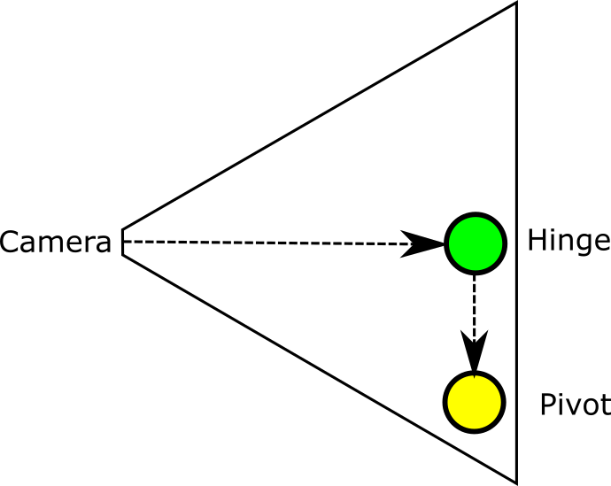
The pivot is marked yellow here, the hinge - green, and finally the camera is just a trapeze. Lines with arrows shows how the nodes linked together. As you can see we're attaching the hinge to the pivot and move it up slightly (usually to the height of the character). Next we're attaching the camera to the hinge and move it back so in default position it will be behind the character. To understand why we need such layout, let's find out how we need to move and rotate the camera. We need to rotate the camera around imaginary axis that goes through hinge ("in" the screen on the picture) - in this layout the camera will always look at character's head and rotate around local hinge's X axis. So to do that we need to rotate the hinge around X axis, not the camera. Here's the picture to help your understanding this better.

That was just one of the axes, now we need to understand how to rotate the camera around Y axis, but preserving the rotation around X axis. This is very simple, we have the pivot for that. Remember that each of the nodes (pivot, hinge, camera) are linked together, so if we'll rotate the pivot around Y axis the hinge will rotate too as well as the camera. Fow now our camera controller does not have an ability to rotate, we'll add this later in the tutorial.
Now let's load a level where our character will "live", add level.rs with following content:
#![allow(unused)] fn main() { extern crate fyrox; use fyrox::{ core::pool::Handle, asset::manager::{ResourceManager}, resource::model::{Model, ModelResourceExtension}, scene::{node::Node, Scene}, }; pub struct Level { root: Handle<Node>, } impl Level { pub async fn new(resource_manager: ResourceManager, scene: &mut Scene) -> Self { let root = resource_manager .request::<Model, _>("data/levels/level.rgs") .await .unwrap() .instantiate(scene); Self { root } } } }
This small piece of code just loads the scene I made for this tutorial. It has a terrain and some decorations, including houses, trees, bushes, barrels, etc. The scene was made in the Fyroxed and can be freely edited without any problems. Just open the scene and modify it as you need.
Now we need to "glue" all the pieces (the player, and the level) together, let's go back to main.rs and change it to
the following code:
extern crate fyrox; #[cfg(test)] use crate::{level::Level, player::Player}; use fyrox::{ core::{color::Color, futures::executor::block_on, pool::Handle}, engine::{executor::Executor}, asset::manager::ResourceManager, event::{Event, WindowEvent}, event_loop::ControlFlow, plugin::{Plugin, PluginConstructor, PluginContext}, scene::{Scene}, }; use fyrox::window::WindowAttributes; use fyrox::engine::GraphicsContextParams; #[cfg(test)] mod level; #[cfg(test)] mod player; struct Player; impl Player { async fn new(_: ResourceManager, _: &mut Scene) -> Self { Self } } struct Level; impl Level { async fn new(_: ResourceManager, _: &mut Scene) -> Self { Self } } struct Game { scene: Handle<Scene>, level: Level, player: Player, } struct GameConstructor; impl PluginConstructor for GameConstructor { fn create_instance(&self, _: Handle<Scene>, context: PluginContext) -> Box<dyn Plugin> { Box::new(Game::new(context)) } } impl Game { fn new(context: PluginContext) -> Self { let mut scene = Scene::new(); scene.ambient_lighting_color = Color::opaque(150, 150, 150); let player = block_on(Player::new(context.resource_manager.clone(), &mut scene)); Self { player, level: block_on(Level::new(context.resource_manager.clone(), &mut scene)), scene: context.scenes.add(scene), } } } impl Plugin for Game { fn update(&mut self, context: &mut PluginContext, _: &mut ControlFlow) { } fn on_os_event( &mut self, event: &Event<()>, _context: PluginContext, _control_flow: &mut ControlFlow, ) { } } fn main() { let mut executor = Executor::from_params( Default::default(), GraphicsContextParams { window_attributes: WindowAttributes { title: "RPG".to_string(), ..Default::default() }, vsync: true, }, ); executor.add_plugin_constructor(GameConstructor); executor.run(); }
As you can see, everything is pretty straightforward: at first we're creating a new scene, set its ambient lighting to "daylight", next we're creating the player and the level. Finally, we're adding the scene to the engine and now if you run the game you should see something like this:

For now everything is static, let's fix that by adding the ability to move the character and rotate the camera.
Camera movement
Let's start from the camera movement and rotation. We need two new fields in the CameraController:
#![allow(unused)] fn main() { struct Stub { // An angle around local Y axis of the pivot. yaw: f32, // An angle around local X axis of the hinge. pitch: f32, } }
Do not forget to initialize them with zeros:
#![allow(unused)] fn main() { Self { ..., yaw: 0.0, pitch: 0.0, } }
Now we need to handle device events coming from the OS to rotate the camera. Add following method to the impl CameraController:
#![allow(unused)] fn main() { pub fn handle_device_event(&mut self, device_event: &DeviceEvent) { if let DeviceEvent::MouseMotion { delta } = device_event { const MOUSE_SENSITIVITY: f32 = 0.015; self.yaw -= (delta.0 as f32) * MOUSE_SENSITIVITY; self.pitch = (self.pitch + (delta.1 as f32) * MOUSE_SENSITIVITY) // Limit vertical angle to [-90; 90] degrees range .max(-90.0f32.to_radians()) .min(90.0f32.to_radians()); } } }
In this method we use only MouseMotion events, because CameraController does not move - it can only rotate. The method
is pretty straightforward. We're changing yaw and pitch using mouse offsets in two axes. X axis changes yaw, Y axis changes
pitch. Pitch should be limited in specific range to prevent camera to rotate 360 degrees around object, we need angle
to be in [-90; 90] range.
Once we've changed yaw and pitch, we need to apply rotations to the hinge and the camera. To do that, we need to add
a new method to the impl CameraController:
#![allow(unused)] fn main() { pub fn update(&mut self, graph: &mut Graph) { // Apply rotation to the pivot. graph[self.pivot] .local_transform_mut() .set_rotation(UnitQuaternion::from_axis_angle( &Vector3::y_axis(), self.yaw, )); // Apply rotation to the hinge. graph[self.hinge] .local_transform_mut() .set_rotation(UnitQuaternion::from_axis_angle( &Vector3::x_axis(), self.pitch, )); } }
It is a very simple method, it borrows nodes, and applies rotations around specific axes. Now we need to call those two
methods from somewhere. The most suitable place is impl Player, because Player owns an instance of CameraController:
#![allow(unused)] fn main() { pub fn handle_device_event(&mut self, device_event: &DeviceEvent) { self.camera_controller.handle_device_event(device_event) } pub fn update(&mut self, scene: &mut Scene) { self.camera_controller.update(&mut scene.graph); } }
For now both methods are just proxies, but it will be changed pretty soon. Now we need to call the proxies, but from where?
The most suitable place is on_tick and on_device_event of the GameState trait implementation for our Game structure:
#![allow(unused)] fn main() { fn on_tick(&mut self, engine: &mut Engine, dt: f32, _control_flow: &mut ControlFlow) { let scene = &mut engine.scenes[self.scene]; self.player.update(scene); } fn on_device_event( &mut self, _engine: &mut Engine, _device_id: DeviceId, event: DeviceEvent, ) { self.player.handle_device_event(&event); } }
Now you can run the game, and the camera should rotate when you're moving your mouse. Now it's the time to add an ability to walk for our character.
Player locomotion
Our player still can't move, in this section we'll fix it. Player's movement for third person camera differs from the movement of first person. For the third person camera we must move the player either where the camera looks or according to pressed keys on the keyboard. Let's start by adding input controller, it will hold info about needed movement:
#![allow(unused)] fn main() { #[derive(Default)] struct InputController { walk_forward: bool, walk_backward: bool, walk_left: bool, walk_right: bool, } }
Add new field to the Player:
#![allow(unused)] fn main() { input_controller: InputController, }
And initialize it with Default::default in the Player::new:
#![allow(unused)] fn main() { Self { ..., input_controller: Default::default(), } }
Now we need to change the state of the input controller, to do that we'll use keyboard events. Add following method to
the impl Player:
#![allow(unused)] fn main() { pub fn handle_key_event(&mut self, key: &KeyboardInput) { if let Some(key_code) = key.virtual_keycode { match key_code { VirtualKeyCode::W => { self.input_controller.walk_forward = key.state == ElementState::Pressed } VirtualKeyCode::S => { self.input_controller.walk_backward = key.state == ElementState::Pressed } VirtualKeyCode::A => { self.input_controller.walk_left = key.state == ElementState::Pressed } VirtualKeyCode::D => { self.input_controller.walk_right = key.state == ElementState::Pressed } _ => (), } } } }
Now we need to call this method, we'll do it from on_window_event in the GameState trait implementation for our
Game:
#![allow(unused)] fn main() { fn on_window_event(&mut self, _engine: &mut Engine, event: WindowEvent) { match event { WindowEvent::KeyboardInput { input, .. } => { self.player.handle_key_event(&input); } _ => (), } } }
Ok, now we have input controller functioning. Now we can start adding movement logic to the player. Let's start by adding
a physical body to the player. We'll use a capsule rigid body with locked rotations for that. Add these lines somewhere
in Player::new:
#![allow(unused)] fn main() { extern crate fyrox; use fyrox::{ core::algebra::Vector3, core::pool::Handle, scene::{ Scene, base::BaseBuilder, collider::{ColliderBuilder, ColliderShape}, graph::physics::CoefficientCombineRule, rigidbody::RigidBodyBuilder, transform::TransformBuilder, }, }; fn f(scene: &mut Scene) { let model = Handle::NONE; let collider; let body = RigidBodyBuilder::new( BaseBuilder::new() .with_local_transform( TransformBuilder::new() .with_local_position(Vector3::new(0.0, 2.0, 0.0)) .build(), ) .with_children(&[ { // Attach the model to the pivot. This will force model to move together with the pivot. model }, { // Create capsule collider with friction disabled. We need to disable friction because linear // velocity will be set manually, but the physics engine will reduce it using friction so it // won't let us to set linear velocity precisely. collider = ColliderBuilder::new(BaseBuilder::new()) .with_shape(ColliderShape::capsule_y(0.55, 0.15)) .with_friction_combine_rule(CoefficientCombineRule::Min) .with_friction(0.0) .build(&mut scene.graph); collider }, ]), ) .with_locked_rotations(true) .with_can_sleep(false) .build(&mut scene.graph); } }
Now, once our character has physical body, we can move it. Add these lines to the end of Player::update:
#![allow(unused)] fn main() { let body = scene.graph[self.body].as_rigid_body_mut(); let look_vector = body .look_vector() .try_normalize(f32::EPSILON) .unwrap_or(Vector3::z()); let side_vector = body .side_vector() .try_normalize(f32::EPSILON) .unwrap_or(Vector3::x()); let position = **body.local_transform().position(); let mut velocity = Vector3::default(); if self.input_controller.walk_right { velocity -= side_vector; } if self.input_controller.walk_left { velocity += side_vector; } if self.input_controller.walk_forward { velocity += look_vector; } if self.input_controller.walk_backward { velocity -= look_vector; } let speed = 1.35 * dt; let velocity = velocity .try_normalize(f32::EPSILON) .and_then(|v| Some(v.scale(speed))) .unwrap_or(Vector3::default()); // Apply linear velocity. body.set_lin_vel(Vector3::new( velocity.x / dt, body.lin_vel().y, velocity.z / dt, )); let is_moving = velocity.norm_squared() > 0.0; if is_moving { // Since we have free camera while not moving, we have to sync rotation of pivot // with rotation of camera so character will start moving in look direction. body.local_transform_mut() .set_rotation(UnitQuaternion::from_axis_angle( &Vector3::y_axis(), self.camera_controller.yaw, )); // Apply additional rotation to model - it will turn in front of walking direction. let angle: f32 = if self.input_controller.walk_left { if self.input_controller.walk_forward { 45.0 } else if self.input_controller.walk_backward { 135.0 } else { 90.0 } } else if self.input_controller.walk_right { if self.input_controller.walk_forward { -45.0 } else if self.input_controller.walk_backward { -135.0 } else { -90.0 } } else if self.input_controller.walk_backward { 180.0 } else { 0.0 }; scene.graph[self.model].local_transform_mut().set_rotation( UnitQuaternion::from_axis_angle(&Vector3::y_axis(), angle.to_radians()), ); } // Sync camera controller position with player's position. scene.graph[self.camera_controller.pivot] .local_transform_mut() .set_position(position + velocity); }
There is lots of code, let's thoroughly go through. At first, we're getting two vectors from the pivot: X and Z axes of the global transform of the pivot. We'll use them to move the character. Next we're using the state of the input controller to form a new velocity vector. Then we're normalizing velocity vector and multiply it with desired speed of movement. Normalization is needed to make the vector unit length to prevent speed variations in various directions. Next we're applying the velocity to the rigid body, also we're locking any angular movement to prevent player's capsule from tilting.
If the player is not moving, we're not syncing its rotation with camera's rotation - this allows us to look at the
character from any side while not moving. However, if the player is moving, we must sync its rotation with the rotation
of the camera controller. If we'd do this straightforward (by just syncing rotations) it would look very unnatural,
especially in case of side movements. To fix this we have this large chain of if..else that selects appropriate
additional rotation for the player's model. This rotation allows us, for example, look forward and move the character
backwards.
As the final step we're syncing position of the camera controller with the position of the pivot. Now if you run the game
you'll be able to walk around using [W][S][A][D] keys. However, it looks very ugly - the character's model is in T-pose,
let's fix this.
Animations
At this point our character can move, and we can rotate the camera around it, but the character is still in T-pose and
does not have any animation. In this section we'll animate it. To keep this tutorial at reasonable length, we'll
add just an idle and walk animations and smooth transitions between them. Add following code at the end of player.rs:
#![allow(unused)] fn main() { extern crate fyrox; use fyrox::{ animation::{ machine::{Machine, MachineLayer, Parameter, PoseNode, State, Transition}, Animation, }, core::pool::Handle, asset::manager::ResourceManager, resource::model::{Model, ModelResource, ModelResourceExtension}, scene::{node::Node, animation::AnimationPlayer, Scene}, }; // Simple helper method to create a state supplied with PlayAnimation node. fn create_play_animation_state( animation_resource: ModelResource, name: &str, layer: &mut MachineLayer, scene: &mut Scene, model: Handle<Node>, ) -> (Handle<Animation>, Handle<State>) { // Animations retargetting just makes an instance of animation and binds it to // given model using names of bones. let animation = *animation_resource .retarget_animations(model, &mut scene.graph) .get(0) .unwrap(); // Create new PlayAnimation node and add it to machine. let node = layer.add_node(PoseNode::make_play_animation(animation)); // Make a state using the node we've made. let state = layer.add_state(State::new(name, node)); (animation, state) } pub struct AnimationMachineInput { // Whether a bot is walking or not. pub walk: bool, } pub struct AnimationMachine { machine: Machine, animation_player: Handle<Node>, } impl AnimationMachine { // Names of parameters that will be used for transition rules in machine. const IDLE_TO_WALK: &'static str = "IdleToWalk"; const WALK_TO_IDLE: &'static str = "WalkToIdle"; pub async fn new( scene: &mut Scene, model: Handle<Node>, resource_manager: ResourceManager, ) -> Self { let animation_player = scene.graph.find(model, &mut |n| { n.query_component_ref::<AnimationPlayer>().is_some() }).unwrap().0; let mut machine = Machine::new(); let root = machine.layers_mut().first_mut().unwrap(); // Load animations in parallel. let (walk_animation_resource, idle_animation_resource) = fyrox::core::futures::join!( resource_manager.request::<Model, _>("data/models/paladin/walk.fbx"), resource_manager.request::<Model, _>("data/models/paladin/idle.fbx"), ); // Now create two states with different animations. let (_, idle_state) = create_play_animation_state( idle_animation_resource.unwrap(), "Idle", root, scene, model, ); let (walk_animation, walk_state) = create_play_animation_state( walk_animation_resource.unwrap(), "Walk", root, scene, model, ); // Next, define transitions between states. root.add_transition(Transition::new( // A name for debugging. "Idle->Walk", // Source state. idle_state, // Target state. walk_state, // Transition time in seconds. 0.4, // A name of transition rule parameter. Self::IDLE_TO_WALK, )); root.add_transition(Transition::new( "Walk->Idle", walk_state, idle_state, 0.4, Self::WALK_TO_IDLE, )); // Define entry state. root.set_entry_state(idle_state); Self { machine, animation_player, } } pub fn update(&mut self, scene: &mut Scene, dt: f32, input: AnimationMachineInput) { let animation_player = scene.graph[self.animation_player] .query_component_mut::<AnimationPlayer>() .unwrap(); self.machine // Set transition parameters. .set_parameter(Self::WALK_TO_IDLE, Parameter::Rule(!input.walk)) .set_parameter(Self::IDLE_TO_WALK, Parameter::Rule(input.walk)) // Update machine and evaluate final pose. .evaluate_pose(animation_player.animations_mut().get_value_mut_silent(), dt) // Apply the pose to the graph. .apply(&mut scene.graph); } } }
This is a simple animation blending machine, for more info check "Animations" section of "Writing a 3D shooter using Fyrox #3" tutorial, it has detailed explanation how animation blending machines work. In short, here we're loading two animations, and create two transitions between them and then applying final pose to the character.
Now we need to create an instance of the AnimationMachine, add a field to the Player:
#![allow(unused)] fn main() { ..., animation_machine: AnimationMachine, }
And initialize it in the Player::new, before camera_controller:
#![allow(unused)] fn main() { ..., animation_machine: AnimationMachine::new(scene, model, resource_manager.clone()).await, ... }
The last thing we need to do is to update animation machine each frame, we'll do this in Player::update, at the end
of the method:
#![allow(unused)] fn main() { self.animation_machine .update(scene, dt, AnimationMachineInput { walk: is_moving }); }
Now if you run the game, you should see the character idling if not moving, and it should play "walking" animation if moving. That's it for this tutorial, in the next tutorial we'll "teach" the character to use swords.
Conclusion
In this tutorial we've learned how create a walking character. Created simple character controller and walked on the scene. I hope you liked this tutorial, and if so, please consider supporting the project on Patreon or do a one-time donation via BuyMeACoffee. The source code for this tutorial is available on GitHub.
2D Platformer Tutorial
Table of Contents
Introduction
In this tutorial, we'll make a 2D platformer using the new plugin and scripting system that has become available in Fyrox 0.25 and improved in Fyrox 0.26. Here's what you'll get after finishing the tutorial:
You can find the source code of the tutorial here, you can
test it yourself by cloning the repository and cargo run --package editor --release in the platformer directory.
Project
Let's start by making a new project using the special tiny tool - fyrox-template - it allows you to generate all boilerplate
parts in a single call. Install it using the following command:
cargo install fyrox-template
Navigate to a folder where you want the project to be created and do the following command:
fyrox-template init --name platformer --style 2d
The tool accepts two arguments - project name and a style, we're interested in 2D game so the style is set to 2D. After the project is generated, you should memorize two commands:
cargo run --package editor --release- launches the editor with your game attached, the editor allows you to run your game inside it and edit game entities. It is intended to be used only for development.cargo run --package executor --release- creates and runs the production binary of your game that can be shipped (for example - to a store).
Navigate to the platformer directory and run cargo run --package editor --release, after some time you should see the editor:

Great! Now we can start making our game. Go to game/src/lib.rs - it is where your game logic is located, as you can see
the fyrox-template generate quite some code for you. There are tiny comments about which place is for what. For more info
about each method, please refer to the docs.
Using the Editor
For now, we don't even need to write a single line of code, we can create a scene entirely in the editor. This section will guide you through the process of scene creation, as a final result we'll get something similar to this:

At first, we need some assets, I prepared all required (and some more) in a separate zip archive, so you don't need to search
assets all over the internet. Download assets from here and unpack them in a data folder in the root folder of
your project.
Let's start filling the scene. Run the editor and remove all content from the generated scene. Since we're making a 2D game, switch the editor's
camera mode to Orthographic at the right top corner of the scene preview window. Now we need to populate the scene with some objects,
we'll start by adding a simple ground block. Right-click on __ROOT__ of the scene in World Viewer and select
Add Child -> Physics2D -> Rigid Body. This will create a rigid body for the ground block, select the rigid body, and
set Body Type to Static in Inspector, by doing this we're telling the physics engine that our ground block should not move
and be rock-solid. Every rigid body requires a collider, otherwise, the physics engine will not know how to handle collisions,
right-click on the rigid body in Inspector and click Add Child -> Physics2D -> Collider. We've just added a new collider to the rigid
body, by default it has a Cuboid shape with a 1.0 meter in height and width. Finally, we need to add some graphics to the rigid body,
right-click on the rigid body and click Add Child -> 2D -> Rectangle. This adds a simple 2D sprite, select it and set a texture
to it by drag'n'dropping it from the asset browser on the white field of the Texture field in the Inspector. For my scene, I'm gonna
be using three sprites.
data/tiles/13.png- left ground blockdata/tiles/14.png- center ground blockdata/tiles/15.png- right ground block
You can use any other textures and build your level as you like. After doing all these steps you should get something like this:

Clone the block by selecting its rigid body and pressing Ctrl+C followed by Ctrl+V, navigate to sprite in the copy and change its
texture to either the left or right end of the block. Use Move Tool to move the block somewhere you like (you can also use grid-snapping
by going to File -> Setting and setting Snap To Grid for Move Interaction Mode). Do this one more time for the opposite end and you
should get something like this:
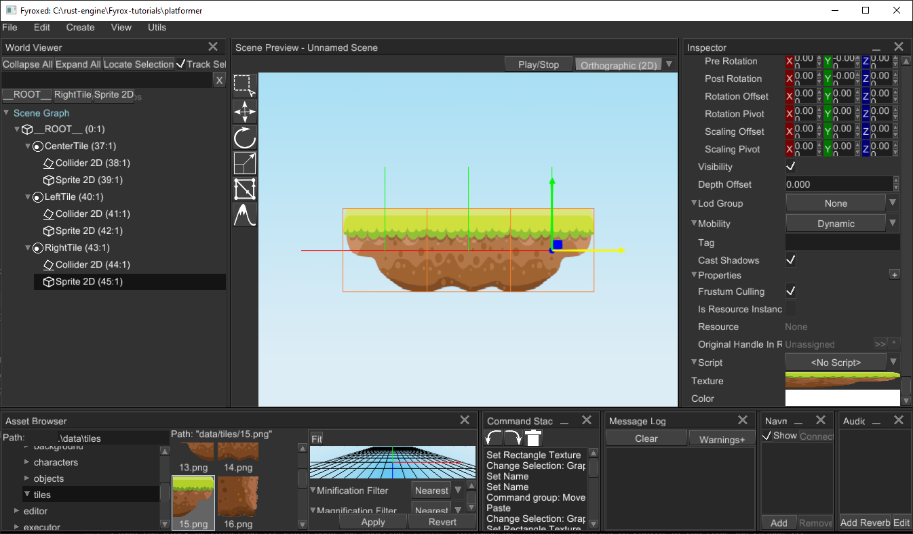
Repeat these steps if you like, to add more platforms. You can also add some background objects, by creating a new sprite
(right click __ROOT__ and click Add Child -> 2D -> Rectangle) and assigning a texture to it:

As the last step of world editing, let's add some dynamic objects, like boxes. Pick some random ground block, select its rigid body, and
clone it. Switch body type of the copy to Dynamic. Now change its sprite texture to a box (drag'n'drop data/objects/Crate.png to
Texture field) and clone the box a few times, you should get something like this:

Now for the player. As always, let's start by creating a new rigid body, adding a 2D collider to it, and setting its shape to capsule with the following
parameters - Begin = 0.0, 0.0 and End = 0.0, 0.3. Add a 2D sprite (rectangle) to the rigid body and set its texture to
data/characters/adventurer/adventurer-Sheet.png. Set its uv rect to (0.0, 0.0, 0.143, 0.091) to see only one frame.
We also need a camera, otherwise, we won't see anything. Add it as a child to a player's rigid body. By default, our
camera will have no background, there'll be a black "void", this is not great and let's fix that. Select the camera
and set the Skybox property to Some. Now go to asset browser and find data/background/BG.png, drag'n'drop it to
the Front field of the Skybox property. Don't forget to adjust the far plane distance to something like 20.0,
otherwise, you'll see just a portion of the background image. If everything is done correctly, you should get something like this:

Save your scene by goint to File -> Save Scene. Now we can run the game using the Play/Stop button at the top of the
scene previewer. You should see pretty much the same as in the scene preview, except
for service graphics, such as rigid body shapes, node bounds, and so on. Now we can start writing scripts.
As the last preparation step, let's import all entities at the beginning, so you don't need to find them manually, add the following code
at the beginning of the game/src/lib.rs:
#![allow(unused)] fn main() { extern crate fyrox; use fyrox::plugin::PluginConstructor; use fyrox::{ core::{ algebra::{Vector2, Vector3}, futures::executor::block_on, pool::Handle, reflect::prelude::*, uuid::{uuid, Uuid}, visitor::prelude::*, TypeUuidProvider }, asset::manager::ResourceManager, event::{ElementState, Event, VirtualKeyCode, WindowEvent}, impl_component_provider, plugin::{Plugin, PluginContext, PluginRegistrationContext}, resource::texture::Texture, scene::{ dim2::{rectangle::Rectangle, rigidbody::RigidBody}, node::{Node}, Scene, SceneLoader, }, script::{ScriptContext, ScriptTrait}, }; }
Scripts - Player
Our scene has pretty much everything we need to start adding scripts, we'll start from the Player script and make our character
move. Navigate to game/src/lib.rs and at the end of the file add the following code snippet:
#![allow(unused)] fn main() { extern crate fyrox; use fyrox::{ core::{ uuid::{uuid, Uuid}, reflect::prelude::*, visitor::prelude::*, TypeUuidProvider }, event::Event, impl_component_provider, gui::inspector::PropertyChanged, script::{ScriptContext, ScriptTrait}, }; #[derive(Visit, Reflect, Debug, Clone, Default)] struct Player; impl_component_provider!(Player,); impl TypeUuidProvider for Player { // Returns unique script id for serialization needs. fn type_uuid() -> Uuid { uuid!("c5671d19-9f1a-4286-8486-add4ebaadaec") } } impl ScriptTrait for Player { // Called once at initialization. fn on_init(&mut self, context: &mut ScriptContext) {} // Put start logic - it is called when every other script is already initialized. fn on_start(&mut self, context: &mut ScriptContext) { } // Called whenever there is an event from OS (mouse click, keypress, etc.) fn on_os_event(&mut self, event: &Event<()>, context: &mut ScriptContext) {} // Called every frame at fixed rate of 60 FPS. fn on_update(&mut self, context: &mut ScriptContext) {} // Returns unique script ID for serialization needs. fn id(&self) -> Uuid { Self::type_uuid() } } }
This is a typical "skeleton" of any script, for now, its methods are pretty much empty, we'll fill it with actual code very soon.
Let's go over the most important parts. The snippet starts from the Player structure definition which has #[derive(Visit, Inspect, Debug, Clone, Default)]
attributes:
Visit- implements serialization/deserialization functionality, it is used by the editor to save your object to a scene file.Inspect- generates metadata for the fields of your type - in other words, it allows the editor to "see" what's inside your structure and show additional information attached to the fields via proc-macro attributes.Reflect- implements compile-time reflection that allows the editor to mutate your objects.Debug- provides debugging functionality, it is mostly for the editor to let it print stuff into the console.Clone- makes your structure clone-able, why do we need this? We can clone objects, and we also want the script instance to be copied.Defaultimplementation is very important - the scripting system uses it to create your scripts in the default state. This is necessary to set some data to it and so on. If it's a special case, you can always implement your ownDefault's implementation if it's necessary for your script.TypeUuidProvideris used to attach some unique id for your type, every script *must have a unique ID, otherwise, the engine will not be able to save and load your scripts. To generate a new UUID, use Online UUID Generator or any other tool that can generate UUIDs.
Finally, we implement ScriptTrait for the Player. It has a bunch of methods, their names speak for themselves. Learn more about
every method in documentation
Before we can use the script in the editor, we must tell the engine that our script exists - we must register it. Remember that
register method in the PluginConstructor trait implementation? It is exactly for script registration, replace its implementation with the following
code snippet:
#![allow(unused)] fn main() { fn register(&mut self, context: PluginRegistrationContext) { let script_constructors = &context.serialization_context.script_constructors; script_constructors.add::<Player>("Player"); } }
Now the engine knows about our script and will be able to use it. It is pretty much useless in the current state, but we can already
assign it to the player. Select the player's rigid body node and find Script in the Inspector, select Player from the respective
drop-down list and that's pretty much it - now the script is assigned:

Let's learn how to edit script properties from the editor. In the next section, we'll be adding keyframe animation for your character,
it is a perfect opportunity to learn how the engine and the editor operate with user-defined properties in scripts. To animate the player
we need to get its sprite first. Let's start by adding the required field in the Player structure:
#![allow(unused)] fn main() { #[derive(Visit, Reflect, Inspect, Debug, Clone, Default)] struct Player { sprite: Handle<Node>, } }
After adding this, the editor will be able to see the field and give you the ability to edit it in the Inspector.
To assign the correct handle of the sprite to the respective field in script properties, hold Alt and start dragging
the sprite node from the world viewer to the respective field in the player script. Release the mouse button and if
everything is ok, the field should "say" something different than "Unassigned".
Alright, at this point we know how to work with script properties, now we can start adding basic movement for the player.
Go to the Player structure and add the following fields:
#![allow(unused)] fn main() { struct Foo { move_left: bool, move_right: bool, jump: bool, } }
These fields will store the state of keyboard keys responsible for player movement. Now for on_os_event, add the following code there:
#![allow(unused)] fn main() { if let Event::WindowEvent { event, .. } = event { if let WindowEvent::KeyboardInput { input, .. } = event { if let Some(keycode) = input.virtual_keycode { let is_pressed = input.state == ElementState::Pressed; match keycode { VirtualKeyCode::A => self.move_left = is_pressed, VirtualKeyCode::D => self.move_right = is_pressed, VirtualKeyCode::Space => self.jump = is_pressed, _ => (), } } } } }
The code responds to OS events and modifies internal movement flags accordingly. Now we need to use the flags somehow, it's time for
on_update. The method is called each frame and allows you to put game logic there:
#![allow(unused)] fn main() { extern crate fyrox; use fyrox::{core::algebra::Vector2, scene::dim2::rigidbody::RigidBody, script::ScriptContext}; struct Foo { move_left: bool, move_right: bool, jump: bool, } impl Foo { // Called every frame at fixed rate of 60 FPS. fn on_update(&mut self, context: &mut ScriptContext) { // The script can be assigned to any scene node, but we assert that it will work only with // 2d rigid body nodes. if let Some(rigid_body) = context.scene.graph[context.handle].cast_mut::<RigidBody>() { let x_speed = match (self.move_left, self.move_right) { (true, false) => 3.0, (false, true) => -3.0, _ => 0.0, }; if self.jump { rigid_body.set_lin_vel(Vector2::new(x_speed, 4.0)); } else { rigid_body.set_lin_vel(Vector2::new(x_speed, rigid_body.lin_vel().y)); } } } } }
Finally, some interesting code. At first, we check if the node to which the script is assigned is a 2d rigid body, next we're checking movement flags and form horizontal speed, and applying velocity to the body. Velocity is applied in two ways: if the jump button was pressed - apply horizontal velocity and some vertical velocity for jumping. If the jump button wasn't pressed - just change horizontal velocity - this will allow the player to free fall.
Run the editor and enter play mode, press [A][D][Space] buttons to check if everything works correctly - the player should move
horizontally and be able to jump. You can jump to the boxes on the right and push them off the ledge.
The movement is working, but the player does not change orientation, if we'll go to the left - it looks ok (despite the lack of animation),
but if we'll move to the right - it looks like the player moves backward. Let's fix that by changing the horizontal scaling of the player's
sprite. Add the following code at the end of the if let ... block of the code above:
#![allow(unused)] fn main() { // It is always a good practice to check whether the handles are valid, at this point we don't know // for sure what's the value of the `sprite` field. It can be unassigned and the following code won't // execute. A simple `context.scene.graph[self.sprite]` would just panicked in this case. if let Some(sprite) = context.scene.graph.try_get_mut(self.sprite) { // We want to change player orientation only if he's moving. if x_speed != 0.0 { let local_transform = sprite.local_transform_mut(); let current_scale = **local_transform.scale(); local_transform.set_scale(Vector3::new( // Just change X scaling to mirror player's sprite. current_scale.x.copysign(-x_speed), current_scale.y, current_scale.z, )); } } }
The comments should clarify what's going on here, but in short, we're changing the horizontal scaling of the player's sprite if the player is
moving. The line current_scale.x.copysign(-x_speed) could be confusing, what it does? It replaces the sign of current horizontal scaling
using the opposite sign of x_speed.
Now if you run the game, the player will "look" in correct direction depending on the velocity vector.
Animation
Since we're making a 2D game, we'll be using simple animations based on the continuous change of keyframes. In other words, we'll be changing
the texture of the player's body sprite. Luckily for us, the engine has built-in sprite sheet animations. Just add the
following fields to the Player:
#![allow(unused)] fn main() { extern crate fyrox; use fyrox::animation::spritesheet::SpriteSheetAnimation; struct Animation; struct Player { animations: Vec<SpriteSheetAnimation>, current_animation: u32, } }
Currently, we just pass default values.
#![allow(unused)] fn main() { ..Default::default() }
The Player will use multiple animations in future tutorials, but for now, it will use only two - idle and run.
Now we need to somehow switch animations. Go to on_update in Player and add the following lines after
the x_speed declaration:
#![allow(unused)] fn main() { struct Player { current_animation: usize, } impl Player { pub fn on_update(&mut self) { let x_speed = 0.0; if x_speed != 0.0 { self.current_animation = 1; } else { self.current_animation = 0; } } } }
Here we assume that the run animation will be at index 1 and the idle animation at index 0. We also need to
apply the texture from the current animation to the player's sprite, and add the following lines at the end of on_update
#![allow(unused)] fn main() { if let Some(current_animation) = self.animations.get_mut(self.current_animation as usize) { current_animation.update(context.dt); if let Some(sprite) = context .scene .graph .try_get_mut(self.sprite) .and_then(|n| n.cast_mut::<Rectangle>()) { // Set new frame to the sprite. sprite.set_uv_rect( current_animation .current_frame_uv_rect() .cloned() .unwrap_or_default() .0, ); } } }
The code is pretty straightforward - we start by trying to get a reference to the current animation by its index, and if we're succeeded, we update it. At the next step, we're getting sprite and assigning a current frame of the current animation.
Now we need to go to the editor again and add the animations to the Player, select the player's rigid body, and
find the Script section in the Inspector. Add two animations there like so:

After filling in the animations and turning them on, you can run the game and your character should play animations correctly.
Conclusion
In this tutorial, we've learned the basics of the new scripting system of the engine. The game we've built it very simple, but it is just the beginning. It is easy to add more scripts for enemies, weapons, collectible items, and so on.
Performance
This section of the book covers very specific cases of extreme performance, that is suitable for some exceptional cases. For the vast majority of cases, standard engine approaches are perfectly fine.
ECS
Theoretically, the ECS approach can give you better performance, but lets at first see where ECS is beneficial, and why classic approach is still viable. The ECS is beneficial only in cases where you have to process ten or hundreds thousands objects every frame, the performance gain of cache friendliness can be significant in such cases. But let's stop for a second and ask ourselves again: how often games have such huge amount of objects that has to be processed every frame? There are very few examples of such games:
- Strategy games - at some extent, because there are very few games that allows you to control tens of thousands units at the same time. More often you have a range from five hundreds up to few thousands.
- Sandboxes - there could be lots of tiny objects that has to be processed every frame.
- Specific genres - games with destructible environment and so on.
Note that the list does not include games with vast worlds, why so? The reason is that such games does not process every tiny object in the world at once, instead they split the world in small chunks and process only few chunks at once, those where the player is present.
The rest of genres operate on a tiny amount of object compared to those up above, maybe a few hundreds at max. One might say - hey, each object could contain lots of tiny "moving parts", what's about them? Usually each object contains up to 10-15 sub-parts, which leads us to few thousands of "atomic" object. Is it much? Not really.
Architecture
One might also think that ECS is a silver bullet for borrow checker in Rust, which "shuts its noisy mouth" once and for all leaving you only with your game code. That's not quite true, it somewhat solves the problem of unique mutable access to data, but interaction between systems can still be painful. Standard OOP-approach is always being criticized by allowing you to create spaghetti-code for which borrow checker will yell at you (which is indeed reasonable). We should consider borrow checker not as our enemy, that prevents us from writing code, but as our friend that tells us - "dude, this won't work without potential crashes, memory issues, etc.". What borrow checker tries to tell us is that we need to re-think the architecture of our game.
So how does Fyrox solve the problem of unique mutable access? It forces you to use a "top-down" flow in your game. What does that mean? In short, you have to change the data only by going from top to bottom on a call tree. But isn't that too restrictive, what if I want to call some higher-level function while being in lower-level function? This is a very good question, and a short answer for it: no. It isn't restrictive at all, because you can always invert the "bottom-to-top" flow to "top-down". The "bottom-to-top" calls are prohibited, because they're violating unique mutable borrow rules.
The flow can be easily inverted by deferring actions for later, not for a next frame, but for a moment after the place where "bottom-to-top" call was required. How this can be achieved? All you should do is to collect the info that is needed to perform inverted "bottom-to-top" call and do a call right after that place where it was required, but starting from the top level of your game. One of the most common approaches for this is to use message passing with Rust's channels (MPSC queue). The receiver should be polled at the top level of your game and every other place that needs "bottom-to-top" call should just queue desired actions by providing required info in respective message.
This is a very simple, yet powerful mechanism to satisfy make your code clearer and satisfy borrow checker. One may argue that such approach has some performance impact. It is indeed has performance impact, but it is tiny, in most cases it can't be even measured.
Borrowing issues cannot be fully prevented, even the right architecture can't help borrow checker to prove that your code is safe in some cases (graph data structure for example). To solve this problem, the engine uses generational arenas (pool in Fyrox's terminology) and handles. Instead of storing the objects in various places, you put all your objects in a pool, and it gives you handles which can later be used to borrow a reference to that object. This approach allows you to build any data structures that may hold "references" to other objects. The references replaced with handles, which can be treated (very roughly) as just an index. See separate chapter in the book for more info.
Obsolete Features
The following chapters contains information about obsolete features that should not be used.
Installation (Obsolete)
WARNING: This section considered obsolete - Fyrox 0.25+ has project generator that handles installation for you. This section is intended to be used only if you're using the engine as a framework!
Since the engine is distributed as a library, it has to be added to [dependecies] section of Cargo.toml of
your project to start using it, there is no pre-built executables or library files. If you don't know what is
Cargo.toml or cargo, please read this before continue.
Using stable version
To begin using the engine, just add following lines to your Cargo.toml:
[dependencies]
fyrox = "^0.27"
This will force Cargo to use the latest stable version of the engine.
Using latest unstable version
Sometimes you want to use the latest features that are not yet released in a stable version, then you can use
the engine directly from its repository, simply add the following line to your Cargo.toml:
[dependencies]
fyrox = { git = "https://github.com/FyroxEngine/Fyrox" }
This will update your build files fairly often. If you don't want game breaking changes to occur because of engine updates or want to not compile daily,
change fyrox = { git = "https://github.com/FyroxEngine/Fyrox" } to fyrox = { git = "https://github.com/FyroxEngine/Fyrox", rev = "" } with the commit
hash in the quotes.
Editor installation
The engine offers an editor, to install a standalone version it, use cargo install:
cargo install fyroxed
Standalone version does not allow you to run your game inside it, but only allows you to edit scenes.
After that you can run the editor with a single command:
fyroxed
Check the next chapter to create a simple application.
Custom game loop
WARNING: Manual engine initialization considered obsolete, use plugins and scripts instead.
The plugin might be limiting for some cases, in such situations the engine could be initialized manually. It requires some decent amount of code and could error-prone for beginners. You should use custom game loop only if you're experienced game developer!
Here is an example of custom game loop with comments that will guide your through all aspects of it:
extern crate fyrox; use fyrox::{ core::{instant::Instant, log::{Log, MessageKind}}, engine::{GraphicsContextParams, Engine, EngineInitParams, GraphicsContext, SerializationContext}, asset::manager::ResourceManager, event::{Event, WindowEvent}, event_loop::{ControlFlow, EventLoop}, window::WindowAttributes, utils::{ translate_event, }, }; use std::{sync::Arc}; fn main() { let event_loop = EventLoop::new(); // Then initialize the engine. let graphics_context_params = GraphicsContextParams { window_attributes: WindowAttributes { title: "Custom Game Loop".to_string(), resizable: true, ..Default::default() }, vsync: true, }; let serialization_context = Arc::new(SerializationContext::new()); let mut engine = Engine::new(EngineInitParams { graphics_context_params, resource_manager: ResourceManager::new(), serialization_context, }) .unwrap(); // Define game loop variables. let mut previous = Instant::now(); let fixed_timestep = 1.0 / 60.0; let mut lag = 0.0; // Finally run our event loop which will respond to OS and window events and update // engine state accordingly. Engine lets you to decide which event should be handled, // this is minimal working example if how it should be. event_loop.run(move |event, window_target, control_flow| { match event { Event::MainEventsCleared => { // This main game loop - it has fixed time step which means that game // code will run at fixed speed even if renderer can't give you desired // 60 fps. let elapsed = previous.elapsed(); previous = Instant::now(); lag += elapsed.as_secs_f32(); while lag >= fixed_timestep { lag -= fixed_timestep; // ************************ // ************************ // Put your game logic here. // ************************ // ************************ // It is very important to update the engine every frame! engine.update(fixed_timestep, control_flow, &mut lag, Default::default()); } // It is very important to "pump" messages from UI. Even if don't need to // respond to such message, you should call this method, otherwise UI // might behave very weird. while let Some(_ui_event) = engine.user_interface.poll_message() { // ************************ // ************************ // Put your data model synchronization code here. It should // take message and update data in your game according to // changes in UI. // ************************ // ************************ } // Rendering must be explicitly requested and handled after RedrawRequested event is received. if let GraphicsContext::Initialized(ref ctx) = engine.graphics_context { ctx.window.request_redraw(); } } Event::RedrawRequested(_) => { // Run renderer at max speed - it is not tied to game code. engine.render().unwrap(); } Event::Resumed => { engine.initialize_graphics_context(window_target).unwrap(); } Event::Suspended => { engine.destroy_graphics_context().unwrap(); } Event::WindowEvent { event, .. } => { match event { WindowEvent::CloseRequested => *control_flow = ControlFlow::Exit, WindowEvent::Resized(size) => { // It is very important to handle Resized event from window, because // renderer knows nothing about window size - it must be notified // directly when window size has changed. if let Err(e) = engine.set_frame_size(size.into()) { Log::writeln( MessageKind::Error, format!("Unable to set frame size: {:?}", e), ); } } // Handle rest of events here if necessary. _ => (), } // It is very important to "feed" user interface (UI) with events coming // from main window, otherwise UI won't respond to mouse, keyboard, or any // other event. if let Some(os_event) = translate_event(&event) { engine.user_interface.process_os_event(&os_event); } } // Continue polling messages from OS. _ => *control_flow = ControlFlow::Poll, } }); }